2.1 First tutorial: Basic usage
2.3 Third tutorial: Aircraft example
5.0 Format of the .csm and .udc Files
5.5 User-defined Primitives shipped with OpenCSM
5.6 User-defined Components shipped with OpenCSM
7.0 Frequently Asked Questions
8.1 New/extended features in v1.18
8.3 New/extended features in v1.17
8.5 New/extended features in v1.16
8.7 New/extended features in v1.15
8.9 New/extended features in v1.14
8.11 New/extended features in v1.13
8.13 New/extended features in v1.12
8.15 New/extended features in v1.11
8.17 New/extended features in v1.10
8.19 New/extended features in v1.09
8.21 New/extended features in v1.08
8.23 New/extended features in v1.07
8.25 New/extended features in v1.06
10.0 Bug Reports and Other Feedback
The Engineering Sketch Pad (ESP) is a
browser-based program for creating, editing, and generating
constructive solid models for use in the multi-disciplinary
analysis and optimization of engineered systems. It is built
using a client-server architecture.
The server consists of a back-end program
(serveCSM) that performs the majority of the
computational work; the server has been designed to work on a
variety of compute platforms, including UNIX, LINUX, OSX, and
Windows. As will be described below, the user
of ESP typically starts a session by starting the
server.
The client, which is built within a web browser, provides the graphical user interface with which most users will provide inputs and receive outputs. The supported browsers include recent versions of FireFox, Google Chrome, and Safari. (Internet Explorer and Edge are not supported because of a bug within the WebSockets layer provided by the browser).
ESP is technically just the user-interface to a
system of software packages, including:
WebViewer is a package for generating complex
three-dimensional representations of geometry within a web
Browser. It consists of software that is incorporated
into the server as well as a series of JavaScript
functions that operate in the web Browser via
WebGL.OpenCSM is a feature-based, associative,
parametric solid modeler that supports manifold solids
(the typical output) and non-manifold sheets and wires
(such as may be needed for representing wake sheets and
antennae). The inputs to OpenCSM is an
ASCII, human-readable .csm file, in which
the model is described by a series of design Parameters
and a Feature Tree (or build prescription). The Feature
Tree consists of a user-specified series of standard
primitives, Boolean operators, and transformations.
OpenCSM also includes the ability for users
to define their own user-defined primitives (via compiled
code) and user-defined components (via scripts). The
persistence of Attributes, even through regenerations,
directly supports the use of OpenCSM within
multi-fidelity and multi-disciplinary analysis and
design. OpenCSM also provides the ability
for a user to compute the sensitivity of a configuration
with respect to (any combination of) the design
Parameters, often without regeneration; these
sensitivities can then be used by a grid-generator so that
the sensitivity of the grid with respect to the design
Parameters can be computed.EGADS, the Electronic Geometry Aircraft
Design System, is an open-source geometry interface
to OpenCASCADE, in which the functionality
in OpenCASCADE that is needed for
construction of typical applications is incorporated into
about 70 C-functions. These functions support a "bottom
up" approach to configuration construction, in which the
boundary representation (BRep) is built up from nodes, to
curves, to edges, to loops, to surfaces, to faces, to
shells, to bodies. EGADS also supports a
"top-down" approach, which directly maps
to OpenCSM's Feature
Tree. EGADS provides persistent user-defined
Attributes on all topological entities.OpenCASCADE is a large, openly-available
geometry engine on which the rest of the system is
built. OpenCASCADE is the only part of
the ESP system that needs to be acquired from
an outside source. See the README.txt file
associated with the ESP distribution for
details.All the parts of the ESP system are distributed as
source code that is licensed via the LGPL 2.1 license. See
the Copyright section below for details.
In most cases, a user will start with a configuration that is
described in a .csm file and then modify it and/or
build it via OpenCSM's various commands.
For a convenient Quick Reference,
see $ESP_ROOT/doc/ESP_QuickReference.pdf, which is
a two-page summary of the various .csm commands,
built-in functions, dot-suffixes, the ESP
character set, and a brief summary of the meanings of the various
keypresses in ESP.
ESP ships with a assortment of
.csm files, as shown below. Feel free to open them
in your favorite text editor to see how they were constructed.
In addition, several students have created models of a variety
of configurations. The .csm files for these cases
are not included in the distribution since they have not been
cleaned up; nevertheless, the models are very impressive.
Back to Table of Contents
The following tutorials have been designed to walk a
new ESP user through the basic capabilities that
are available through the user interface. The tutorials have
been designed to be executed in order, since latter tutorials
assume that the user knows how to perform certain actions that
were learned in an earlier tutorial. Additional information and
examples can be found in the training section of the
ESP distribution.
Users of ESP who do not plan on using the user
interface are still encouraged to execute the tutorials, since
many of the ideas used within OpenCSM (the
underlying constructive solid modeler) are described in the
tutorials.
This tutorial will help you understand the use of
serveCSM and ESP for a variety of
tasks. Details about the Command
Line, cursor and keyboard options, and
the Example .csm file are
contained in sections that follow this tutorial.
The tutorial starts with a pre-made part that is defined by the
file tutorial1.csm. (See
Example .csm file below for a listing of this
file.)
To start ESP there are two steps: (1) start the
"server" and (2) start the "browser". This can be done in a
variety of ways, but the two most common follow.
Technique 1: issue the two commands:
setenv ESP_START "open -a /Applications/Firefox.app ../ESP/ESP.html"
serveCSM ../data/tutorial1
if using a c-shell; make appropriate changes for your shell
and/or operating system.
The first of these tells serveCSM to open FireFox
on the file ../ESP/ESP.html
when serveCSM has generated a graphical
representation of the configuration. The second of these
actually starts the serveCSM server. As long as
the browser stays connected
to serveCSM, serveCSM will stay alive
and handle requests sent to it from the browser. Once the last
browser that is connected to serveCSM
exits, serveCSM will shut down.
Technique 2: issue the command:
serveCSM ../data/tutorial1
Once the server starts, start a browser (for example, FireFox)
and open the page ESP/ESP.html. As
above, serveCSM will stay alive as long as there
is a browser attached to it.
Note that the default "port" used by serveCSM is
7681. One can change the port in the call
to serveCSM with a command such as:
serveCSM ../data/tutorial1 -port 7788
Once the browser starts, you will be prompted for a "hostname:port" as in:
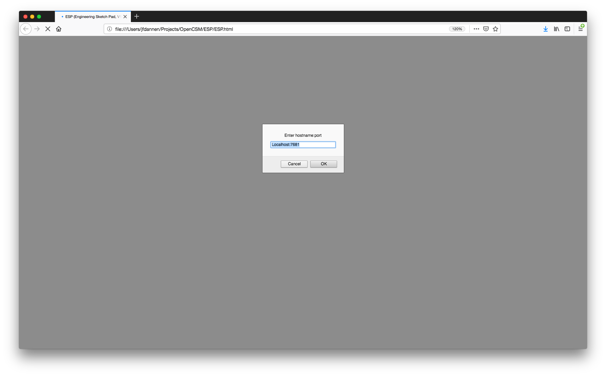
Most of the time, the "hostname" will be "Localhost" (meaning
that serveCSM and the browser are on the same
computer). It is possible to attach to serveCSM
that is running on another computer by giving an appropriate
"hostname".
As mentioned above, it is possible to change the "port" with a
command line argument when starting serveCSM; if
that is done, then the alternative "port" must be included in
ESP's prompt.
Once all the setup is done, the browser then presents the following 4 windows:
The window on the top left is called the "Tree" window. At the top of this window is a series of buttons. Below that is a scrollable tree-like listing of the Parameters and Branches in the Model. It also contains the controls for the "Graphics" window.
The window on the top right is called the "Graphics" window, which contains one of the following:
The window on the bottom left is the "Key" window. Like the "Graphics" window, its contents will be one of:
ESP logo;The window on the bottom right is called the "Messages" window.
It contains the messages that ESP posts for the
user.
The first thing to do is to play with the image in the "Graphics" window. This is done with the mouse in the following ways:
When using the mouse, it is possible to enter "flying mode", in which the view continually changes until the mouse button is released. Flying mode is particularly useful when one needs to translate a long distance. Toggling flying mode is done by pressing the "!" key in the "Graphics" window.
At any time, a user might want to "save" a view for later use in the browser session. This is done by pressing the ">" key in the "Graphics" window; the "saved" view can be retrieved by pressing the "<" key.
You can also save a view into a file with the "<Ctrl-<>" or "," keys, which will prompt you for a filename. You can read a view file with the "<Ctrl->>" or "." keys, which will prompt you for the view filename. If the file does not exist, nothing will happen.
The default (home) view can be obtained by pressing either "<Home>", "<Ctrl-h>", "<Ctrl-f>", or the "H" button near the top of the "Tree" window. (The home view is one in which the x-coordinate increases from left to right and the y-coordinate increases from bottom to top.) One can also get the top view by pressing "<Ctrl-t>" or the "T" button, the bottom view by pressing "<Ctrl-b>" or the "B" button, the left side view by pressing "<Ctrl-l>" or the "L", or the right side view by pressing "<Ctrl-r>" or the "R" button.
The function of the arrow keys depends on whether "flying mode" is active or not. For example, if "flying mode" is not active (the default), pressing the "<Left>" key causes the object to rotate to the left by 30 degrees; if "flying mode" is active (because the "!" key was pressed), then pressing the "<Left>" key causes the object on the screen to translate to the left. If the "Shift" is held while the "<Left>" key is pressed, the increments are 5 degrees and the translations are also smaller.
The "<PgUp>" or "<Ctrl-i>" keys or the "+" button can be used to zoom in and the "<PgDn>" or "<Ctrl-o>" key or the "-" button can be used to zoom out. The behavior of these keys/buttons does not depend on the current "flying mode".
To re-center the image at a given point and simultaneously reset the point about which mouse rotations will occur, point to any location in the "Graphics" window and press "*" or "8"; the image will be recentered and a message will be posted in the "Messages" window.
To determine the identity of any object in the "Graphics" window, simply put your cursor on the object and press "^" or "6"; a summary of the identified object is shown in the "Messages" window. (Note that if the cursor is not exactly over any object, the message will only be posted once the mouse passes over a graphic object.)
To determine the approximate coordinates of any location in the "Graphics" window, simply put your cursor on the location and press "@" or "2"; the approximate coordinates of the location are shown in the "Messages" window.
To add an Attribute to any Face or Edge, simply put your cursor on the object in the "Graphics" window and press "A" (upper case A). You will then be asked for the name of the new Attribute as well of its value, which can either be a string (if is starts with a $) or a semi-colon separated list of expressions.
Lastly, to get help on the commands that are available in the "Graphics" window, press "?" and a short listing will be given in the "Messages" window.
The results of several of these commands is shown in:
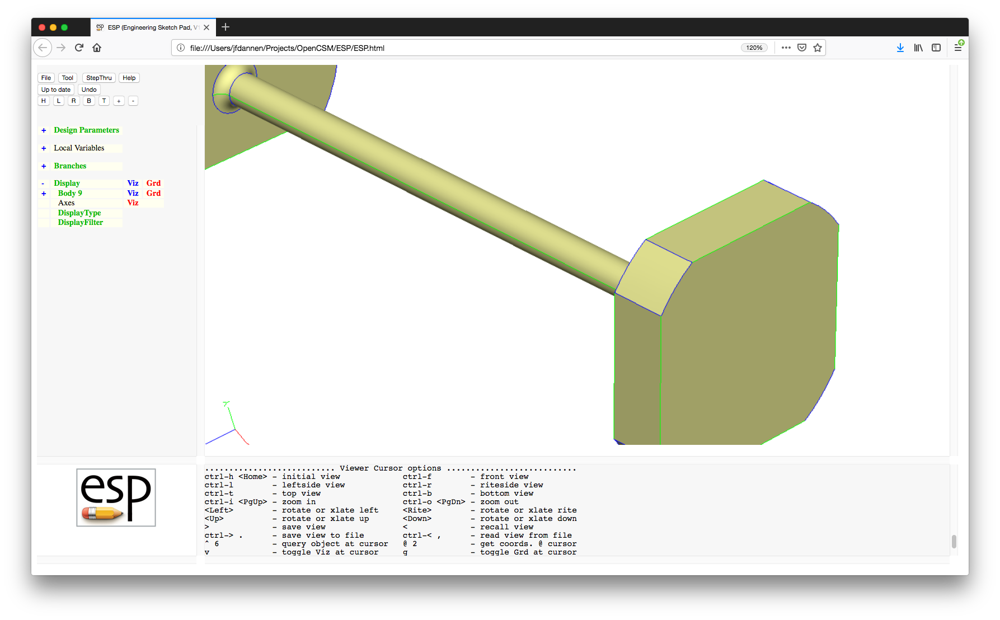
Now it is time to understand the "Tree" window. When not in the Sketcher (the default), at the top of the "Tree" window is a series of buttons:
.csm file and builds its
Model.csm file. Beware that using this option
will over-write any file, causing you to lose any
formatting or comments that may be in the original
file.csm fileESP HELP document (that you are now
reading)Below the buttons is a tree-like representation of the "Design Parameters", "Local Variables", and "Branches" that describe the current Model. In all cases, pressing the "+" at the beginning of any line expands (opens up) that particular entry in the tree; pressing the "-" at the beginning of any line collapses (closes) that particular entry.
Start off by pressing the "+" to the left of the words "Design Parameters". When this is done, all the Design Parameters in the current Model are displayed as shown in:
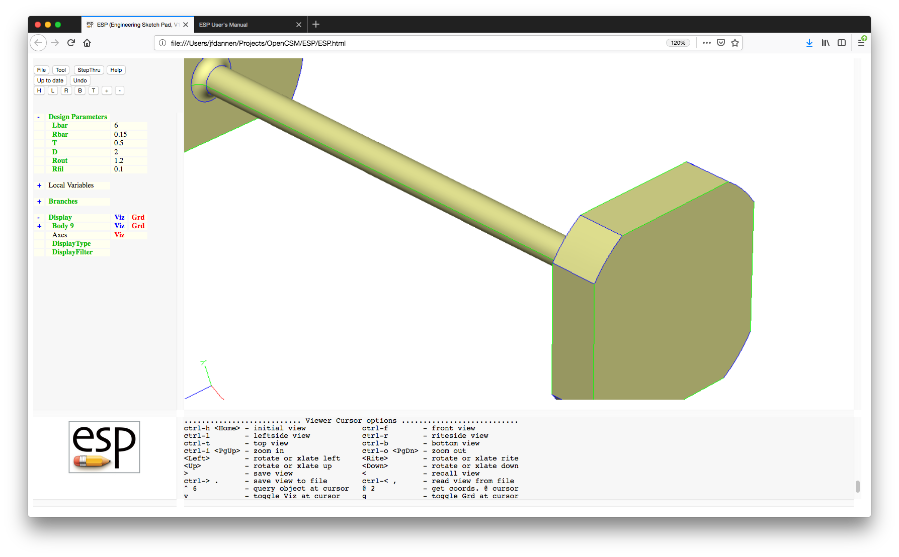
Notice that the Design Parameter names are shown in green type; this indicates that the Parameter can be "edited" by the user; the Local Variable names are listed in black type and cannot be edited.
Now there are two ways to proceed. The following paragraphs
describe the legacy method, using
the ESP user interface. This method is similar to
other CAD systems, but experienced users find that using the
integrated .csm editor to be much faster and
easier to debug; it is described at the end of this tutorial.
Press on the label "Lbar" to edit the Parameter named "Lbar". When this is done, the user is provided with an editing form that asks for the new value; the current value is pre-loaded in this window, as in:
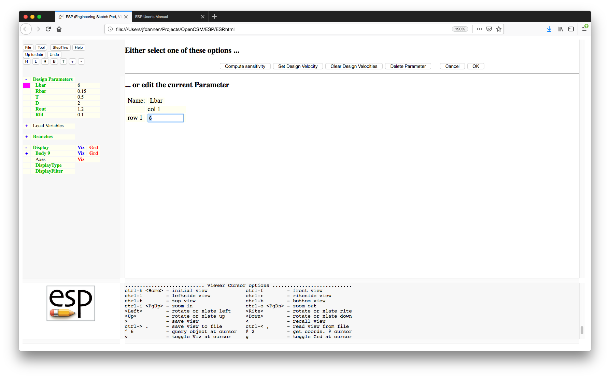
For now change the value from "6" to "9" and press the "OK" button or press the "Enter" key. Note that the Parameter name is now listed in red (to indicate that it has been changed) and that the button at the top of the "Tree" window has changed to a green button that says "Press to Re-build". This tells the user that changes have been made (to either a design Parameter or Feature Tree), but that the configuration shown in the "Graphics" window has not been updated. (The reason this is done is that a user might want to make several changes to the "Model" before spending the CPU time necessary to re-build.)
Press the "Press to Re-build" button and notice that it first turns yellow while the configuration is being rebuilt. Then (after a few seconds) the image in the "Graphics" window will be updated and the "Design Parameters" will no longer be red.
We will now change the value of "Lbar" back to "6". (Do not re-build yet.)
Collapse the Parameters by pressing the "-" to the left of the word "Design Parameters" and expand the Branches by pressing the "+" to the left of the word "Branches". This will result in a screen that looks like:
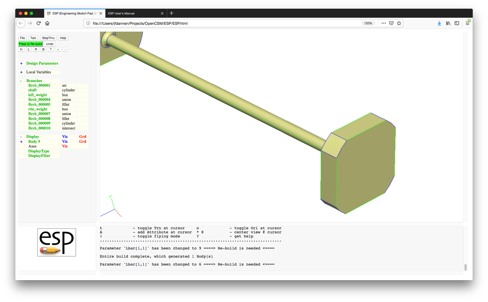
There is an "Undo" button near the top of the "Tree" window. This button un-does your last change; an example of using this is shown later in this tutorial; for now, try not to use this button.
We are going to want to add a SPHERE to this configuration. Do this by pressing "Branches", giving you:
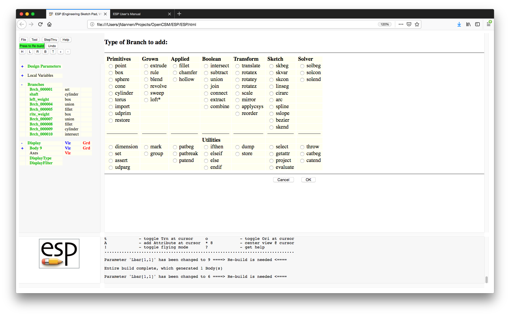
The different types of Branches that can be added are listed in groups. The groups at the top, which are labeled, generally construct or modify Bodys. The Branches listed at the bottom are utilities, which generally effect the order in which the Branches are executed. Those Branches marked with a star (*) are deprecated, meaning that they may be removed in future versions of ESP.
We will choose a SPHERE and press the "OK" button (or press the "Enter" key), giving us:
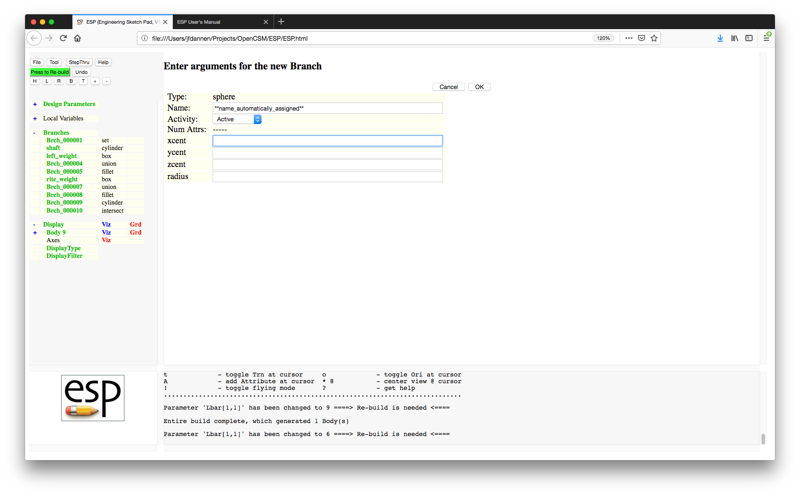
Now fill in the entries with "xcent" set to "1", "ycent" set to "0", "zcent" set to "0", and "radius" set to "2". An easy way to cycle through the various entries is to press the "Tab" key. Press the "OK" button (or "Enter" key) and then "Press to Re-build" and you should see:
Now let's look at the "Display" part of the "Tree" window. By default "Display" is expanded and you can see that you have two bodies named "Body 10" and "Body 9". Expand the listing for Body 9 by pressing the "+" to the left of "Body 9" and you will see entries for Faces, Edges, Nodes, and Csystems. To the right of "Faces" (below "Body 9") you will see three items:
Notice also that there is a "+" to the left of "Faces", which indicates that you can interact with the object on a Face-by-Face basis. The basic rules here are:
When you have a configuration with lots of Bodys, it is sometimes useful to turn the visibility of all Faces, Edges, or Nodes (in all Bodys) on or off. This can be done by pressing on the word "Display" in the Key Window.
Now let's combine the sphere and the original solid by adding a UNION Branch. (Press "Branches" and add a UNION). This operation wants to know if the operation should be applied to the top two Bodys on the stack (tomark=0) or to all the Bodys on the stack since the last mark (tomark=1). For now, we want to use the default (tomark=0). Also, we want an untrimmed union (the default), and so set (trimList=0). Lastly, we do not want to modify the tolerances associated with this operation, so use the default (maxtol=0). Re-build the configuration and you should get the solid shown in:
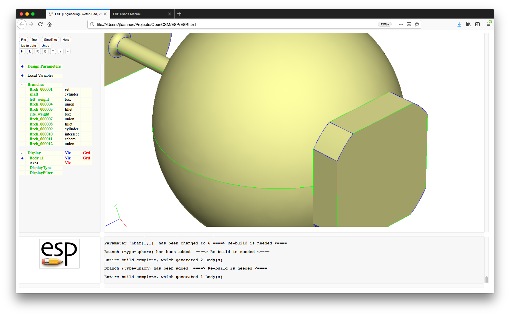
Note that we now only have one body. (Body 11)
After some thought you realize that you really didn't want the union (or fusion) of these two volumes, but instead you wanted the solid that is common to them (that is, their intersection). First, remove the UNION; this can easily be done by clicking on "Brch_00012" and then choosing "Delete this Branch". (Alternatively you could press the "Undo" button at the top of the "Tree" window; but if you use "Undo" the Branch numbering will be slightly different, making it slightly more difficult to follow the directions in this tutorial.)
Now add the intersection by pressing "Branches" and then choosing INTERSECT. This operation wants to know what happens if more than one solid is produced by the operation. Specifically, the "$order" argument describes how the bodies that are produced should be ordered: for example in order of volume, surface area, ... The "index" argument tells which body in the list should be selected. Since we are only expecting one body to be produced, we can leave the defaults. Also, for now we do not want to modify the tolerances, so leave the default (maxtol=0) and then "Press to Re-build", producing:
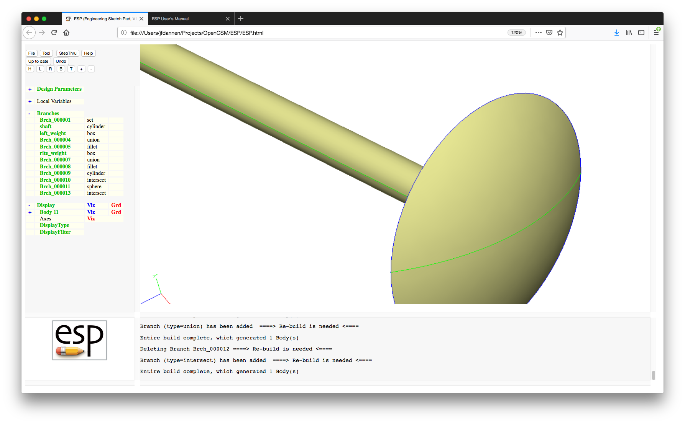
You notice that the "head" is too thin, and so you change the "radius" of the SPHERE to "2.3". (Press "Brch_000011" and change the "radius".) While you are at it, change the Parameter "Rbar" to "0.4" (you will need to expand the Design Parameters) and rebuild, producing:
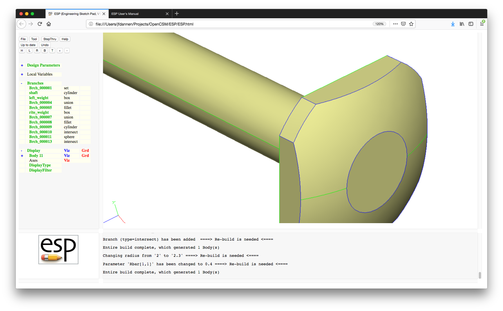
Now we want to drill a hole through the center of the shaft; this is done by subtracting a cylinder from the solid. Create a cylinder by selecting "Branches" and CYLINDER. We want the hole to go the entire length of the configuration (which is centered and whose length is 2*L), and so we enter "-1.2*L" for "xbeg" and "+1.2*L" for "xend"; the "1.2" simply ensures that the cylinder extends beyond the end of the configuration. Since it is on the centerline, set "ybeg", "zbeg", "ybeg", and "yend" all to "0", and finally the "radius" to "0.2".
Note that any argument can either be entered as a numeric constant or as an expression (using Matlab-like syntax), possibly using the name of a Design Parameter (such as "L") or a Local Variable.
To add the SUBTRACT Branch, we will click on "Branches" and then choose SUBTRACT, use the defaults and rebuild, producing:
You can now proceed to the common part of
the tutorial or take a detour to explore the new
integrated .csm editor (which is next).
Now we want to create a series (pattern) of small holes that are drilled across the shaft. Start by creating a new Parameter (by clicking on "Design Parameters") and name it "Rhole". The rules for names is that they must start with a letter and contain up to 32 letters, digits, colons, and underscores. By default the new "Design Parameter" contains only one value (that is, it is a scalar). (Aside: If one wants a row vector, a column vector, or a 2D matrix, press the "Add row" or "Add column" button before entering values in the table.)
Since we only want a scalar, just use the standard form, such as:
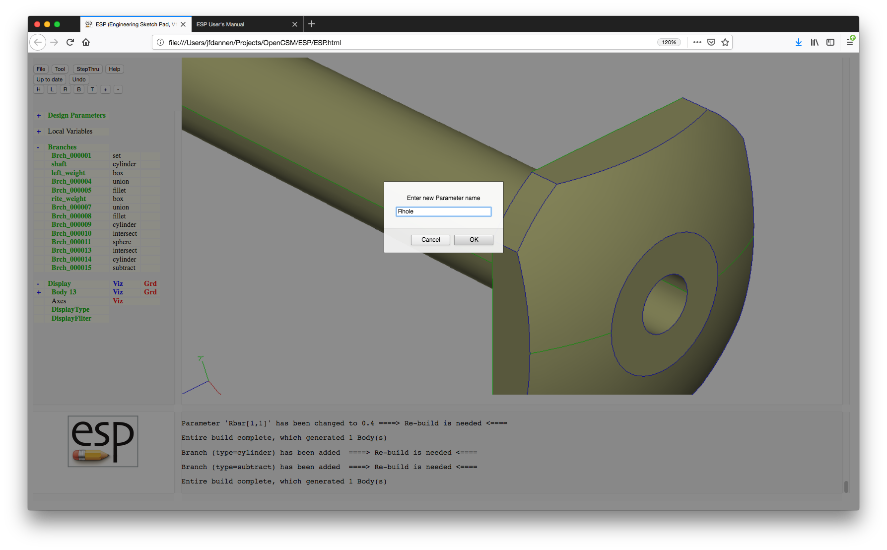
Set the (only) value to "0.08". You can either press the "OK" button or press the "Enter" key to save this value.
Now we are going to add a pattern of holes. Do this by adding a new PATBEG Branch; the "$pmtrName" will be "i" and the "ncopy" will be 7 (since we want 7 holes). (The "$" at the beginning of "$pmtrName" says that this is the name of the Parameter that will be created rather than the value of the Parameter "i"). This will produce a warning in the Messages window that informs us that we do not yet have a matching PATEND statement yet.
Also add a CYLINDER with "xbeg" and "xend" set to "i/3", "ybeg" and "yend" set to "0", "zbeg" set to "-1", "zend" set to "+1", and "radius" set to "Rhole". Press "OK" or "Enter". Again you will get the warning telling you that you still do not have a matching PATEND.
We would now like to name this Branch. To do this, edit the Branch (by pressing "Brch_000017") and change its "Name" to "small_holes". (Notice that we could not name it when we created it since the names are originally auto-created to ensure that we do not get an illegal name.)
Next add another SUBTRACT Branch (with the default arguments) and finally a PATEND Branch and then re-build (which will take several seconds), giving:
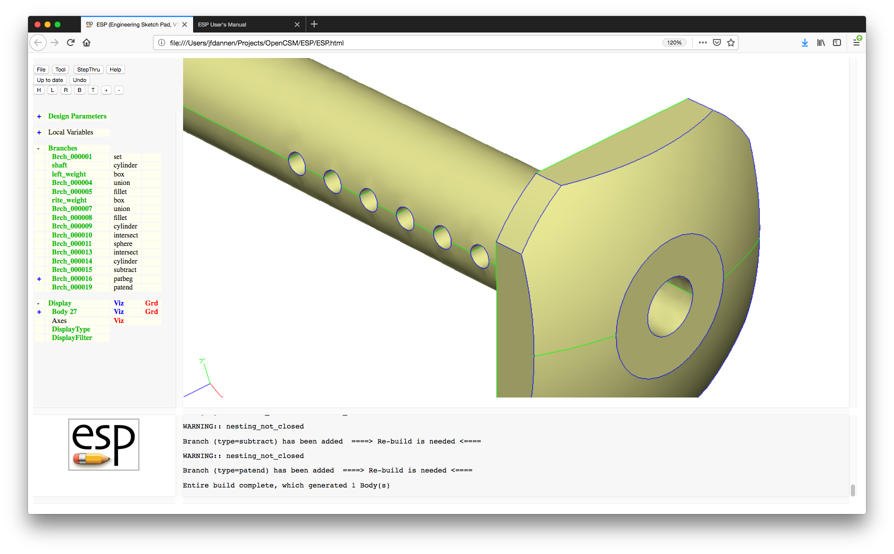
Now we want to change the hole in the center of the shaft into a hole that starts at "xbeg" equal to "0". Make the change to "Brch_000014" and re-build. To see if you were successful, change the visibility of the faces and ensure that you have the correct hole, as in:
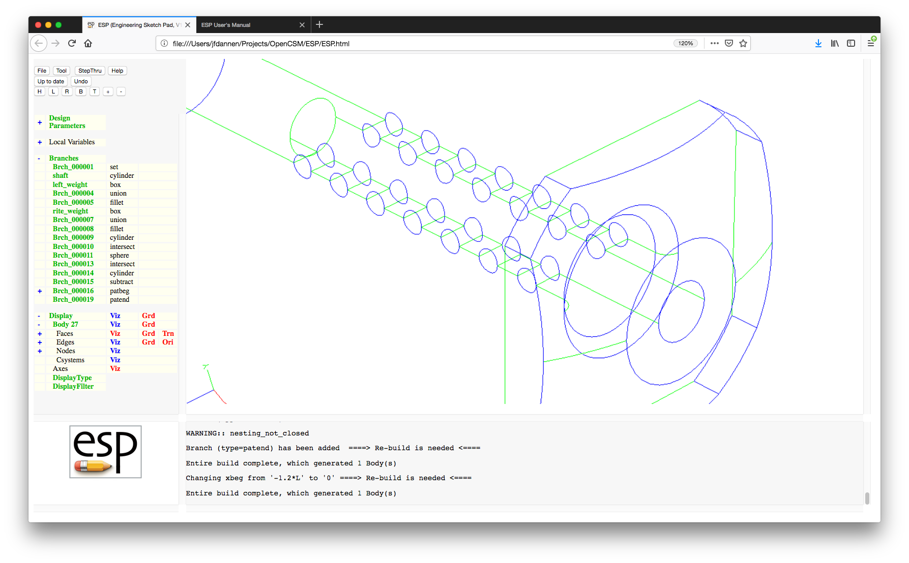
Now change the cylindrical hole into a conical hole. To do this, we must delete the cylinder hole (which is Brch_000014). Click on "Brch_000014" and choose "Delete this Branch". Notice that doing this warns you that the Branches are not properly nested. To fix the error, add a conical hole after "Brch_000013" by clicking "Brch_000013" and choosing "Add new Branch after this Branch", as in:
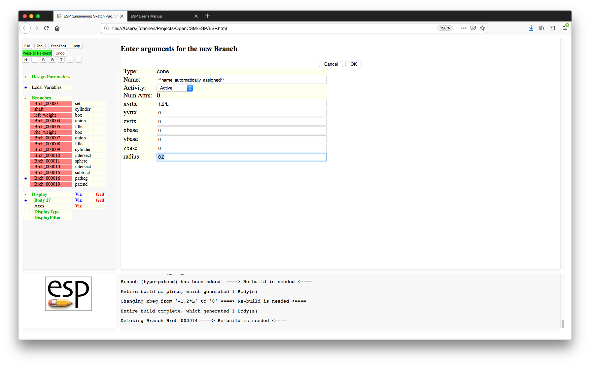
Re-build and notice that the vertex of the cone is near the head; you will have to change the visibility of the Faces to see this. We had meant to do it the other way, so change "xvrtx" to "0" and "xbase" to "1.2*L" and re-build, producing (after manipulating the display):
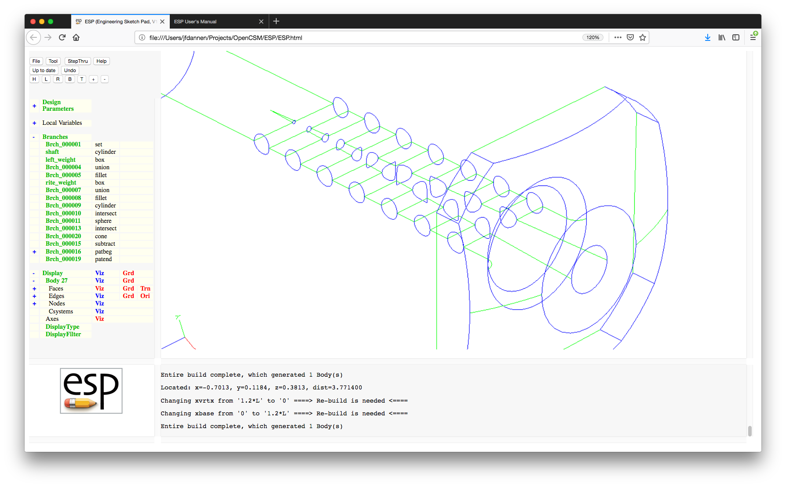
A new ESP feature is to visually step through the build
process. This is particularly useful when you want to
understand the build process that was used in
a .csm file that you acquired from another
source. To do this press the "StepThru"
button and you should see:
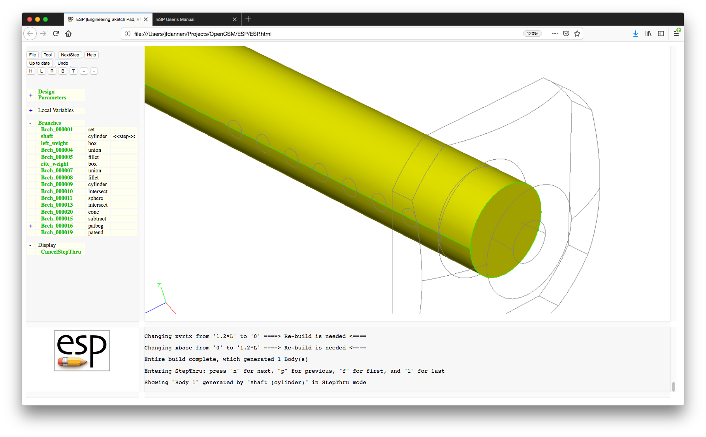
This is the result of executing the first Branch that created a Body. You can now press "NextStep" four times and you should see:
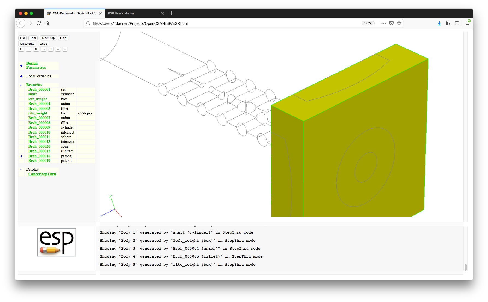
You can either continue pressing the "NextStep" button (or press the "n" key in the Graphics window (for next)) until you get to the end of the build, you can press the "p" key for previous, or you can press "Cancel StepThru" in the Tree Window to return to the normal viewing mode.
By now you probably have noticed that the Branches with a pattern (that is, between the PATBEG and PATEND) are hidden; to see these, press the + to the left of Brch_000016. Now let's rotate the small holes, so after the "small_holes" Branch, add a ROTATEX with arguments "-15*(i-1)", "0", and "0", and rebuild, producing:
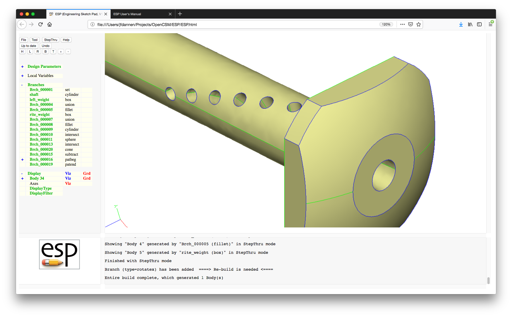
Now we will experiment with the "activity" of the Branches. A Branch that is "suppressed" is skipped during the re-build process. So click on "Brch_000021" (you will need to expand the listing of the pattern first) and change the "Activity" from "Active" to "Suppressed", and select "OK" or press "Enter". When you rebuild, you should see:
Re-activate "Brch_000021" and re-build.
Another feature is ESP allows a user to only build
part of the configuration. This is done by clicking on a
Branch (for example, "Brch_000010") and choosing "Build to this
Branch", giving:
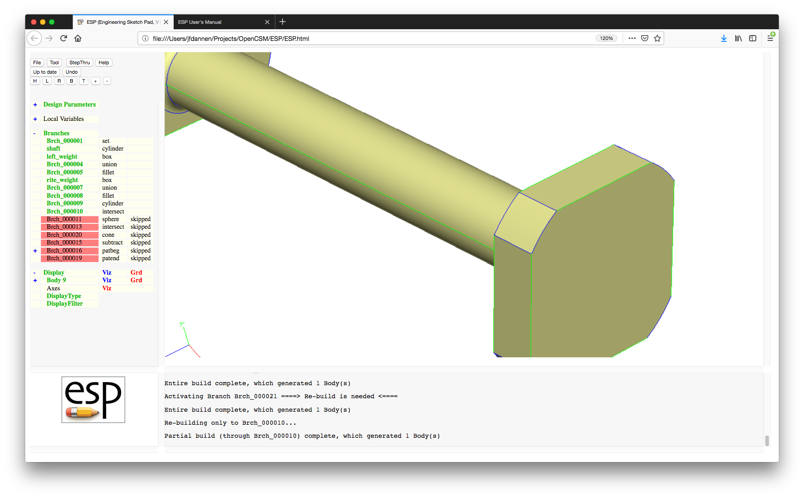
To rebuild the whole configuration, either re-build to the last Branch by clicking it and choosing "Build to this Branch" or press the "Up to date" button (which will ask if you are sure before regenerating the configuration).
The next part of the ESP tutorial involves
Attributes. Each Branch can have zero or more Attributes
associated with it that are carried throughout the build
process. Open the "Brch_000009" Branch for editing and press
"Show Attributes/Csystems". You will see that
this Branch has an Attribute ("clipper") that has the value
"1". Change the Attribute to "10", and
press OK.
We can add an Attribute to "Brch_000009" by editing it, pressing "Show Attributes/Csystems", and then "Add Attribute/Csystem". The first choice is whether we want to add an Attribute or a Csystem; we want to enter "1"; we will use the name "test" and the value "ESP". After some thought, you realize that "ESP" is not defined (that is, does not have a value), so you can "undo" this change by pressing the "Undo" button at the top of the "Tree" window. Re-build.
Now point to the face that represents the corner of the head (as shown with its grid here) and press the "^" or "6" key, producing:
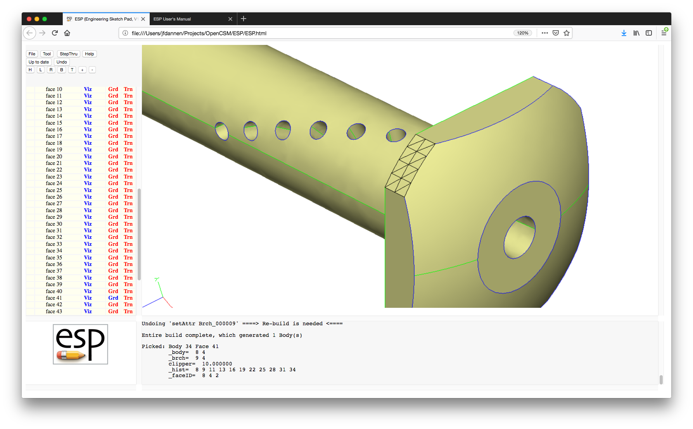
(Depending on the version of OpenCASCADE that you are using, the face number that is returned may be different.)
Note that the "Messages" window contains a description of the face including the Attribute that we edited ("clipper" is "10") as well as a "_body" and "_brch" Attribute. The latter tells which Branch ("Brch_000009") was responsible for generating that face.
You can also add Attributes graphically. Point to the same Face and press the "A" key. When prompted for an Attribute name, enter "partID", and when prompted for the Attribute value, enter the semicolon-separated list "1;2;sqrt(3)". (Alternatively, you could have entered "$1;2;sqrt(3)" to add that string value, as signified by the leading dollar sign ($)). Rebuild. Then press the "^" key to verify that the Face has your new Attribute.
A unique feature of ESP is that it allows a user to compute the sensitivity of the configuration with respect to any perturbation in the specified Parameters. Most often this is done by clicking on a the name of one of the Design Parameters and selecting "Compute Sensitivity".
For the current case, expand the Parameters list (in the Tree window) and click on "Rbar" and select "Compute Sensitivity". ESP notes this by putting a caret before the "Rbar" and then will automatically compute the sensitivity and display, in the Graphics window, an updated configuration that is colored based upon the change in the local surface normal; positive sensitivity indicates that the surface will tend to move in the direction of the outward normal. The Key window will show the meanings of the various colors and will be titled "d(norm)/d(Rbar)", as in:
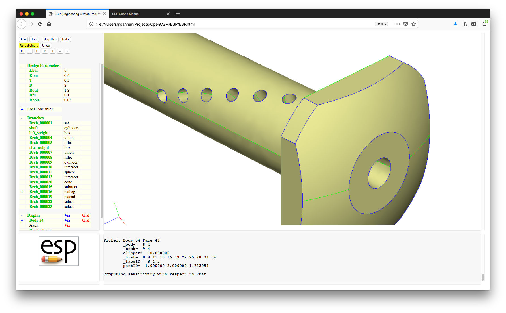
To change the limits of the color spectrum, left click in the Key window and you will be prompted for the minimum value (associated with blue) and the maximum value (associated with red). Try clicking on the Key window and set the limits to "-0.5" and "+0.5" and see how the display changes.
Now ask for the sensitivity with respect to "D" (click on "D" and select "Compute Sensitivity") and again the display will automatically update.
Occasionally one wants to know the change in the configuration based upon the perturbation of more than one Parameter (at the same time). To do this, first click on "Rbar" and clear all the Design Velocities by clicking on "Clear Design Velocities", and then "Set Design Velocity" to 1; then click on "Rhole" and "Set Design Velocity" to 1.5. Now manually re-build the configuration (since you may want to set the Design Velocity for multiple Parameters before rebuilding). Note that the legend in the Key window will now be "d(norm)/d(***)", indicating that there was either more than one Design Parameter for which the Design Velocity was set (see that Rbar and Rhole both are pre-pended with a caret to indicate this), or there is one Parameter whose Design Velocity is not unity (and hence the color does not show sensitivity but rather a scaled sensitivity.)
Save your work by pressing the "File" button, then the "ExportFeatureTree" button, and finally entering "tutorial1_new.csm" as the name of the new file.
Now explore the .csm editor. Choose "File" button, then the "Edit" button. The version of your file will be displayed. The buttons across the top perform various editing tasks.
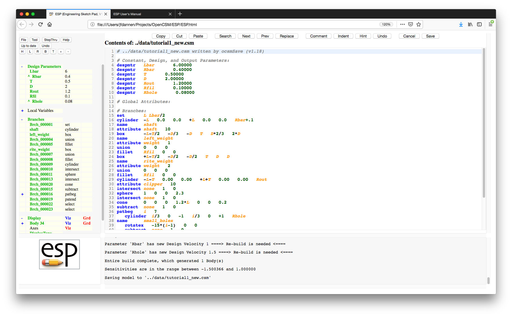
The integrated editor has a row of buttons at the top:
.csm file and there are no
current .udc files, then the configuration
is automatically rebuilt
Note that the text in the file is colored:
Start by highlighting lines 12 and 13 and then press the "Copy" button. You can then move your cursor to the beginning of line 14 and press "Paste", which will insert the copied text. Highlight lines 14 and 15 and press "Cut" to remove the text you just added.
Place your cursor on somewhere on line 1 and press the "Search" button. At the top, enter "Rbar" and press Enter. You can press "Next" and "Prev" to go to the next and previous occurrences. You can replace text using the "Replace" button.
You can provide block-comments. Highlight lines 42 through 44 and press the "Comment" button to add a block-comment. If you now highlight line 43 and press "Comment" again, you will see that line 43 was uncommented (since the first highlighted line contains a block-comment). Remove the whole block-comment by highlighting lines 42 through 44 and pressing "Comment" again.
The "Hint" button gives you a hint on the current command. For example, pressing the button with the cursor somewhere on line 29 show the hint for the CYLINDER command at the top of the editor window.
Finally exit the browser and you should see
that serveCSM also shuts down.
If we now rename the file journal file (which was automatically generated while you were running ESP) with:
mv port7681.jrnl tutorial1.jrnl
we can replay our session by the command:
serveCSM ../data/tutorial1 -jrnl tutorial1.jrnl
This replays all your operations, so it may take a while to
execute.
Alternatively, we can start with the new
tutorial1_new.csm file (which we just created
above) with the command:
serveCSM tutorial1_new
This will run more quickly since it simply executes the final
Feature Tree (of Branches).
This tutorial covered most of ESP's user
interface. Further details are contained in the sections that
follow.
Now we will learn how to develop a configuration using the
integrated editor. Make a copy of the
original .csm file and
restart serveCSM.
cp ../data/tutorial1.csm ../data/tutorial1_temp.csm
serveCSM ../data/tutorial1_temp
or
copy ..\data\tutorial1.csm ..\data\tutorial1_temp.csm
serveCSM ..\data\tutorial1_temp
Start by pressing the "File" button and then "Edit: ../data/tutorial1_temp.csm". This will display the contents of the (original) tutorial file in code form. Notice at the top you have Design Parameters with their given values which are followed by the Branches and their arguments.
Start by finding the Design Parameter "Lbar", shown in the line
"despmtr Lbar 6.00" on your screen. You can edit
this parameter by simply changing the number. Do this now,
change the "6.00" to "9.00" and then press
"Save". This will change the length of the bar
and automatically rebuild the model.
Return to "Edit" and change the value of
“Lbar” back to “6.00”, but do not save yet. We will now add a
SPHERE branch to the model. To do this, add a line under the
"intersect" corresponding to "clip weights with outer cylinder"
that reads "SPHERE". This branch needs four arguments, which
are "xcent", "ycent", "zcent" and "radius". If you would like
to see for yourself, put your cursor somewhere in the word
"SPHERE" and then press the "Hint" button at
the top of the screen. This button will tell you the required
arguments for any branch you add. Now set these arguments as
"xcent" set to "1", "ycent" set to "0", "zcent" set to "0", and
"radius" set to "2"; in other words, add the line "SPHERE
1 0 0 2" and press "Save".
Now try to combine the sphere and the original solid by adding a "UNION" Branch under the line that starts with "SPHERE". Re-build by saving the edits. Notice that this is not the shape we wanted. To fix this replace the "UNION" Branch with an "INTERSECT" Branch and save again.
Now you can see that the head of our shape is too thin, so increase the radius of the sphere from "2" to "2.3", and while you are at it change the design parameter "Rbar" to "0.4".
The next step is to create a hole through the center of the shaft. To do this we will create a CYLINDER and then SUBTRACT it from the solid. Create a new "CYLINDER" Branch with the arguments "-1.2*L" and "+1.2*L" for "xbeg" and "xend" respectively, as well as "0" for "ybeg", "zbeg", "yend", and "zend". Finally, set "radius" to "0.2". Remove the material in this new cylinder from the existing solid by adding a "SUBTRACT" Branch under the new "CYLINDER" line. In other words, add the lines
CYLINDER -1.2*L 0.0 0.0 +1.2*L 0.0 0.0 0.2
SUBTRACT
and "Save".
As you can see, the ideas are the same as using
the ESP Tree Window, but experienced users find it
much faster using the integrated editor.
For the second tutorial, we will start serveCSM
without a .csm file and investigate the use of the
Sketcher.
Start ESP by issuing the command:
serveCSM
If you have not set the ESP_START environment
variable, you will have to open a browser on a file
named ../ESP/ESP.html and select the default
hostname and port (Localhost:7681). A blank
ESP should open up for you.
We are going to start with an empty sketch. To do this we will
first add a SKBEG Branch by pressing
"Branches", selecting a SKBEG, and making
the "x", "y", and "z" all zero. The final
argument, relative, is set to 1 to indicate that
all coordinates in the sketch are relative to the coordinates
that were contained in the SKBEG statement.
When a SKBEG Branch is added, ESP now automatically adds the matching SKEND Branch and automatically enters the Sketcher.
There are several changes between normal 3D mode and the Sketcher. The first difference are the buttons on the top of the "Tree" window. A second button has now appeared that is labeled "Sketch", which will pop up a menu with the entries:
The legend on another button has now changed to "Drawing...", which describes the status of the Sketcher.
Also, the "Key" window now lists the Sketcher's status, in
terms of the number of degrees of freedom (ndof)
and the number of constraints (ncon). This is
followed by a listing of the available commands in the
Sketcher.
Within the Sketcher (which is displayed in the "Graphics" window), there is a point at the center that has the legend "XY" and a blue line between that point and the current cursor location. As you move the cursor around in the Sketcher, you will notice that the blue line follows the cursor. You will also notice that if the line is approximately horizontal or vertical, it will change from blue to orange; this is an indication that if the current cursor location is chosen (see below), an implicit "horizontal" or "vertical" constraint will be created.
As you can see in the "Key" window, you have 6 choices:
If you just press the mouse button, the "l" option will be chosen for you. So now, draw the sketch shown in:
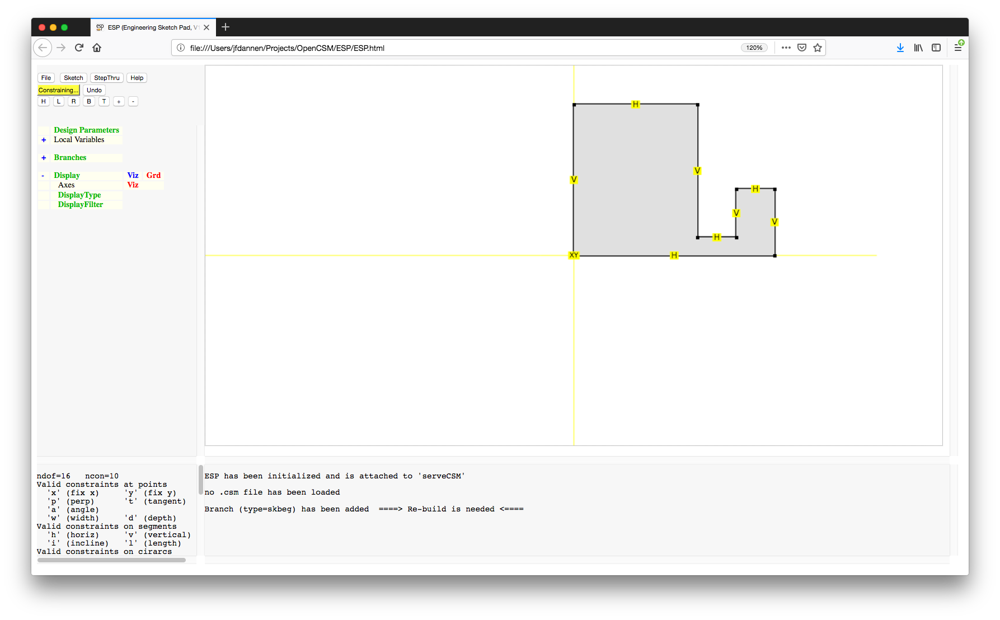
in a counter-clockwise direction, starting at the point with the label "XY". Make sure that when you have completed the closed sketch, the last point should be the same as the first point. You can ensure this by noting that a circle is placed around the first point if the last point is "close enough".
Notice that several of the line segments have either the letter "H" or "V" associated with them. These "horizontal" or "vertical" constraints were automatically added for you since you pressed "l" or the mouse button when the line was orange. Also notice that since you "closed" the sketch, it got filled in with grey. (If you had left it open by pressing the "o" key, there would be no filling.)
Your completed sketch should now have 16 degrees of freedom (since there are 8 points and no arcs) and 10 constraints. To see what the meaning of the various constraint letters are, notice that the "Key" window has now changed to explain the meaning of the constraints. In summary, at the first point, both the "x" and "y" coordinates are fixed. The other constraints are that certain line segments are either constrained to be horizontal (H) or vertical(V).
Since the number of constraints is fewer than the number of degrees of freedom, we will have to add more constraints.
If you do not know what constraint(s) to add, press the "Constraining..." button and several choices will be presented to you (in green), as in:
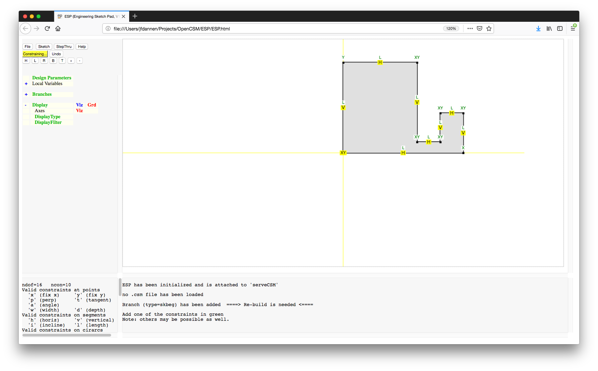
We will choose the following:
Since the number of constraints matches the number of degrees
of freedom, the grey fill has changed to a light green fill and
the first button has turned green with the legend
"Press to Solve". Press that button and
(hopefully) your sketch will solve. (If it does not, you can
always remove constraints by moving the cursor over the
constraint and pressing "<", which deletes selected constraints
at that point or on that segment.) To center the image, either
press 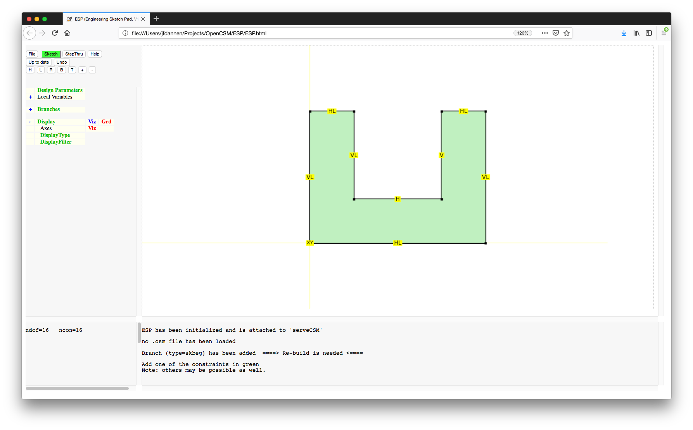
We are now finished with the Sketcher (for now), so press
"Sketch" and then "Save" to
return to the normal 3D view. You can now press "Press
to Re-build" to rebuild the 3D object, giving a screen
that looks like:
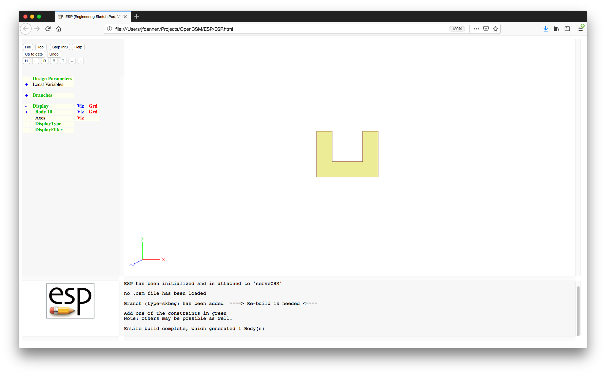
You will notice that we hard-coded dimensions into our sketch.
To make the sketch more useful, it would be convenient to drive
it with Design Parameters. To do this, we first have to create
them. This is done (as in tutorial 1) by pressing
"Design Parameters" in the "Tree" window,
entering "length" as the Parameter name and setting its value
to "4".
In a similar way, create a "height" Design Parameter whose
value is "3" and a "thick" Design Parameter whose value is
"0.5".
Now, let's use these Design Parameters in the sketch. To do
this, choose one of the statements between the SKBEG and
SKEND. I suggest choosing "Branch_00003", which is the
SKVAR statement (which shows the default locations of each of
the sketch points). Select "Enter Sketcher".
We are now going to change the various "L" constraints, by
moving the mouse over the "L", pressing "L"
and entering the new value. Specifically, you should change
the "L" constrains as follows:
"Press to Solve", giving:
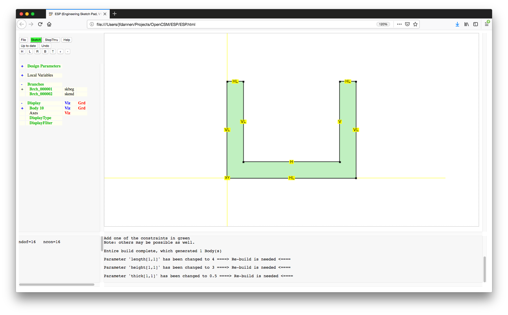
"Sketch" and "Save" (to exit
the Sketcher) and "Press to Re-build" to use
the latest changes.
Think about what we have done. We have made a U-shaped channel
whose overall length and height were given, and whose channel
walls were all set to "thick". Suppose instead that the
"design intent" of the channel was to create a channel of a
given slot width. In this case, we would want to constrain the
sketch differently.
Start by creating a Design Parameter named "slot" whose single
value was "1". Now select "Branch_000002" and "Enter
Sketcher". We are going to have to remove the "L"
constraints from the top two horizontal segments, so go to each
and press "<". Since there are two
constraints here, you are asked which constraint to remove.
Simply enter "L" at the prompt and the length constraint will
be removed by the horizontal constraint will remain. If you
want to remove all constraints, press "<"
multiple times.
Now move the mouse over the horizontal segment at the bottom of
the slot and press "L" and set the length to
"slot". You will notice that the sketch is under-constrained
(is grey). We need to add a constraint that the slot is
centered. To do this, we are going to make the lengths of the
two small horizontal segments near the top on each side of the
U equal to each other. The first step here is to identify one
of the segments. This is done with the "?"
command. So, move the cursor over the top-left horizontal
segment and press "?". You will notice in the "Messages"
window that this is segment 7. Now move over the top-right
horizontal segment and enter the length "::L[7]", which tells
it to use the same length as segment 7. "Press to
Solve" to give:
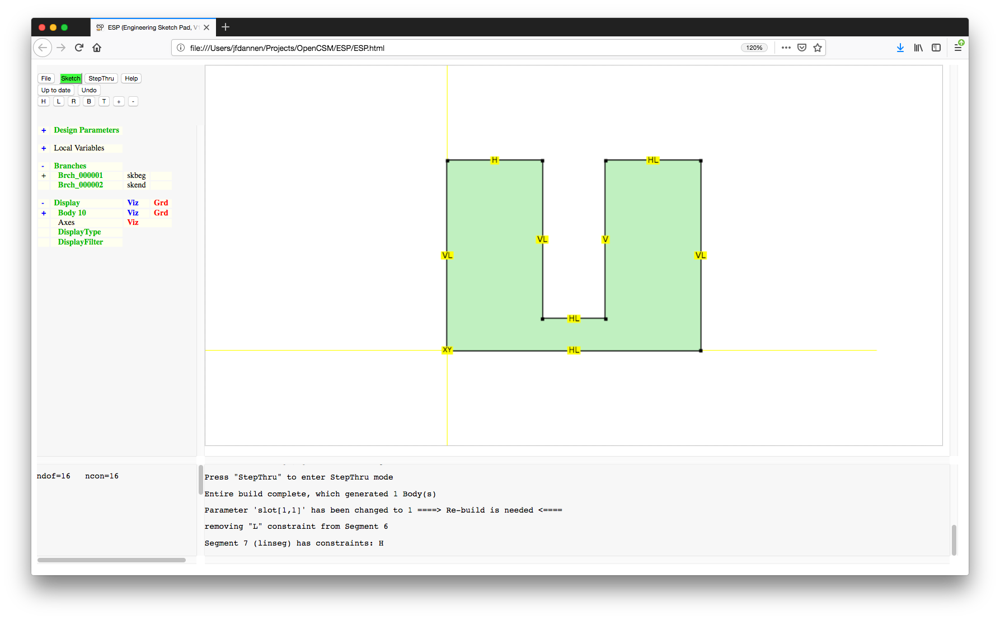
"Sketch" and "Save" and
"Press to Re-build".
Now open the list of Design Parameters (using the
"+" to the left of "Design Parameters") and
change the value of "slot" to "2". "Press to
Re-build" to see the effect of this change.
We will now experiment with some of the other constraints.
Specifically we will be removing some of our "H" and "V"
constraints and instead add constraints at some of the points.
Re-enter the Sketcher and move the cursor over the right-hand
segment, press "<" to remove the vertical
constraint. Similarly remove the horizontal constraint from
the top-right horizontal segment.
The sketch is under-constrained (is grey). We are going to add
a perpendicularity constraint at the point at the lower-right
corner by moving the mouse over the point and pressing
"P". Just to be different, at the top-right
point we are going to add an "angle" constraint by pressing
"A" and adding a value of "90".
"Press to Solve" and "Sketch"
and "Save".
We are now going to extrude the sketch into a solid. This is
done by first creating a Design Parameter named "depth" and
giving it a default value of "3". Then add an EXTRUDE
Branch, whose arguments are "dx"="0", "dy"="0", and
"dz"="depth". This will extrude the sketch in the "z"
direction (out of the screen). "Press to
Re-build", yielding:
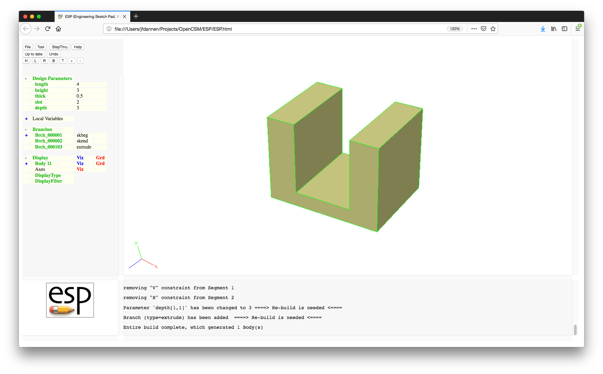
As with most programs, it makes sense to periodically save your
work, so press "File", "Export
FeatureTree", and save the current model in a file
named " To see the Press "Cancel" to exit the editor and return
to the normal view.
We are now going to create another sketch, which will be used
to cut a hole in the bracket's left upright. This cut will be
parameterized with a Design Parameter named "rad" whose sole
value is "0.5". (You can create that now.)
Now we want to create a new sketch. We do this by adding a
SKBEG Branch (with all "0" arguments).
The sketch that we are going to create consists of a
race-track-shape curve, as shown in:
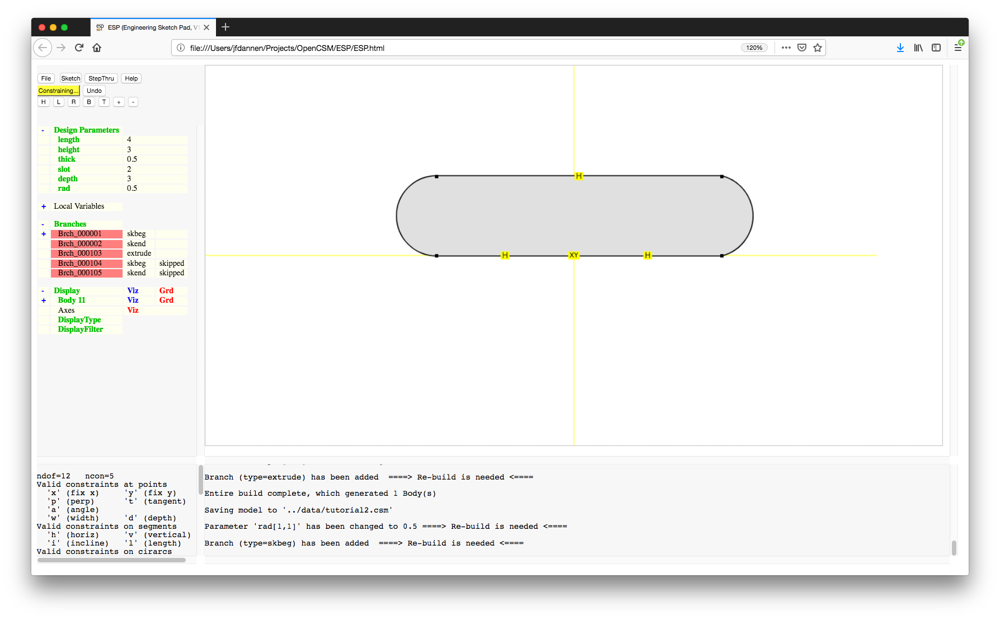
This is done with the following actions. Draw a horizontal
segment off to the right (make sure the line from the last
point is drawn in orange) and press "L" (or
click the mouse) to create the first horizontal segment. Then
move the mouse up and press the "C" key to
create a circular arc segment. When you have done that, the
segment that you just created turns red and follows the cursor;
move the cursor and see how it changes. Once it is located at
approximately the correct location, press the mouse button.
Then sketch the horizontal line segment to the left, a circular
arc on the left end, and finally a line segment back to the
original point.
You might be wondering why the bottom of the racetrack was
created with two LINSEGs. The reason is that we are
ultimately going to want to center the sketch on the left-leg
of the bracket, so having a point at the "center" of the sketch
will be convenient.
We are now going to constrain the sketch as follows:
"Press to Solve", zoom in (using the
"+" button) and center the sketch in the
window (using the "H") button, yielding:
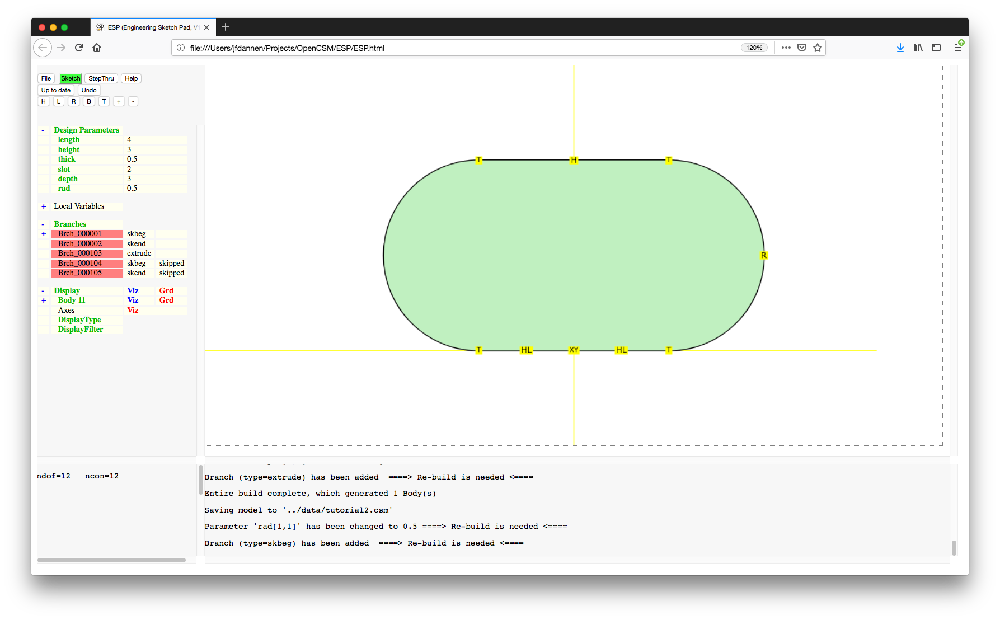
"Sketch" and "Save" and
"Press to Re-build". If you turn the
configuration around, you will see the sketch at the back left
bottom corner, as in:
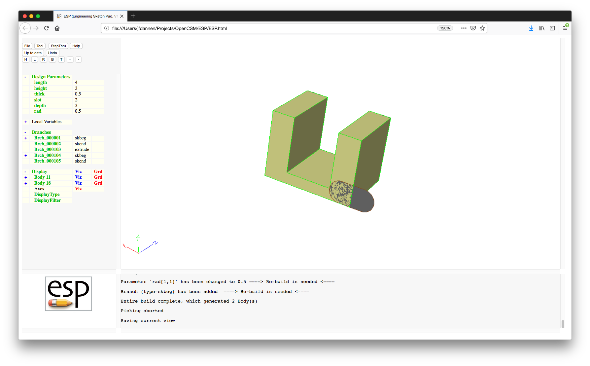
We want to rotate this to be parallel with the y-z
plane by adding a ROTATEY Branch (with arguments "90", "0",
"0"), move it to its proper location by adding a TRANSLATE
Branch (with arguments "0", "height-3*rad", and "depth/2"). If
you "Press to Re-build" you will see that the
sketch is now properly positioned. We can then add an
EXTRUDE Branch (with arguments "length/2", "0", and "0") and
finally subtract that new volume by adding a SUBTRACT Branch
(with the default arguments). If you "Press to
Re-build", you should get:
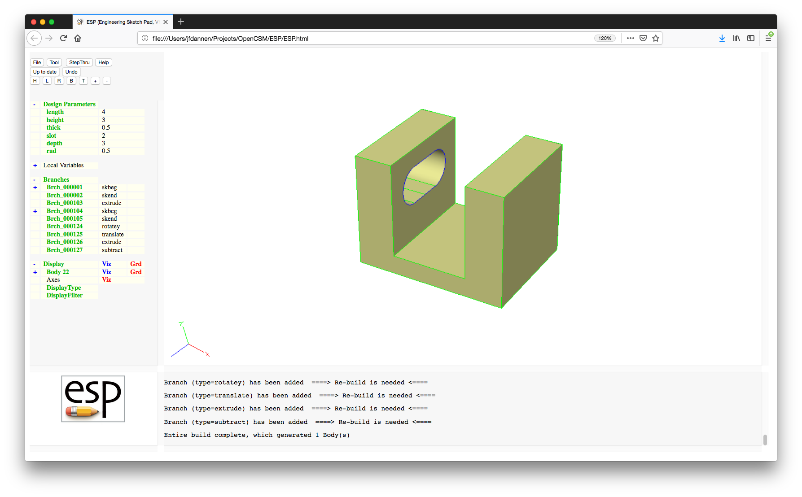
Now we will add a chamfer at the edges of the cut-out that the
just made. Add a Design Parameter named "filrad" whose sole
value is "0.1" and a new CHAMFER Branch whose arguments are
"filrad" and "0" (meaning all Edges). "Press to
Re-build", yielding:
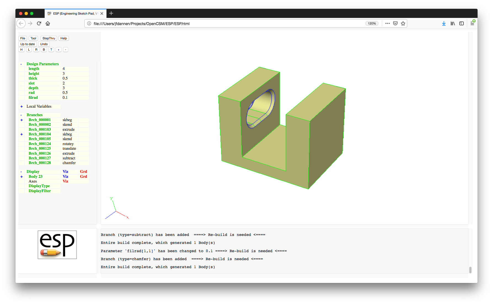
We are now going to make another cut-out for the right leg of
the bracket. As usual, make a SKBEG Branch (with all zero
arguments). The figure that we want to sketch looks like:
To make this, start by drawing a horizontal line segment to the
right (by pressing the "L" key). We are now
going to set the control points for a Bezier curve. Do this by
moving the cursor above the original point and pressing
"B". We then continue to add one
"B" to the left, one below it (to the left of
the original point) and one halfway back to the original point.
Finally move the cursor over the original point (the one
labeled "XY") and press "L".
You can put the cursor over any of the points and "drag" it to a
new location. This movement will effect the display, but will
likely be over-written when the sketch is ultimately solved.
Constrain the sketch as follows:
"Press to Solve", "Sketch",
"Save", and "Press to Re-build".
You should see:
Again, we want to rotate and translate the sketch, extrude it, and
subtract it, by adding the Branches:
"Press to Re-build", giving:
Finally, we want to modify the original bracket to put fillets
along the bottom of the slot. To do this, we have to go back
and add a FILLET Branch immediately after the EXTRUDE that
created the bracket. If we look back through the Feature Tree,
we see the first EXTRUDE is at "Branch_000103". (To verify
this, select "Branch_000103" and "Build to this Branch"). We
are going to want to add a FILLET statement after this Branch,
but first we must determine the identity of the Edges that we
want filleted. To do this, press the "+" to
the left of the Body (near the bottom of the "Tree" window), turn
the visibility of the Faces off (press "Viz"
to the right of Faces), and query the two Edges shown in:
Identifying them is done by pressing "^" over
the two Edges. (In the picture above, these Edges were
identified for you by turning their "Grd" on
before capturing the screen; these Edges will likely not be
highlighted on your screen.) You will notice in the "Messages"
window that the Branches have an "edgeID" set to "11 6 11 7 1"
and "11 7 11 8 1". This means (for example) that the first
Edge was created at the intersection of Faces 6 and 7 of Body
11.
We can now create the FILLET Branch (edit "Branch_000103" and
press "Add new Branch after this Branch"),
with arguments "filrad" (which was set above for the CHAMFER)
and "6;7;7;8;" (which selects the Edges between Faces 6 and 7
and between 7 and 8. "Press to Re-build".
Finally, we might want to see the sensitivity of this
configuration with respect to some of the Design
Parameters. This is done exactly as in the first tutorial (by
selecting a Design Parameter and pressing "Compute
sensitivity").
We can now save our For the third tutorial, we will start Start
The We are going to modify this case by using the
"File->Edit" button. Pressing it gives:
Listed in the "Graphics" window is a listing of
the If you now press the "Cancel" button, the change
you made will not be saved and the original aircraft picture
will appear. To see this, press the "File->Edit"
button again and you will see that we have the
original Now add a new Design Parameter called "xyz" that has 1 row and
3 columns, with the values "11", "22", and "33". (Recall that
this done by clicking on "Design Parameters"
in the "Tree" window.)
If we try to "File->Edit" the file
again, If you now press "File->Edit", you will see
that the new current file is In addition to understanding how
to "Edit" As a good practice, it is suggested that you add comments to
the top of the file, such as:
This is then followed by the Design Parameters. Those that
describe the fuselage are given by:
The Design Parameters that describe the wing, horizontal and
vertical tails are given by:
Notice the SET statements that compute Local Variables in
terms of the Design Variables. For example, the mean-chord of
the horizontal tail ( Now we are going to build the fuselage. This will be done
using by blending data from various cross-sections. The
sections that will ultimately be blended are those created after
the previous MARK. Creating the mark is done with the code:
We want to begin the fuselage at a point. This is accomplished
by using a POINT statement:
Then we need to generate the remaining 15 cross-sections. This
is done with a "pattern" (similar to a "for" loop in other
programming languages):
Finally we will generate the fuselage by blending the point and
15 sections (everything since the At this point it is worth looking into
the The wing is built in a similar manner using a ruled surface.
The code here is:
The next statement:
The code for the tails is:
The Feel free to experiment by modifying this file.
Finally we are going to run This will rerun the Back to Table of Contents
To start The If the The The The The the The The The The The The The The The The The The The The The The options Back to Table of Contents
The tutorial (above) gives an overview of nearly all the
interactive commands that are available in Back to Table of Contents
The If a line contains a hash (#), all characters starting at the
hash are ignored.
If a line contains a backslash, all characters starting at the
backslash are ignored and the next line is appended; spaces at
the beginning of the next line are treated normally.
All statements begin with a keyword (described below) and must
contain at least the indicated number of arguments.
The keywords may either be all lowercase or all UPPERCASE.
Any CSM statement can be used except the INTERFACE statement.
Blocks of statements must be properly nested. The Blocks are
bounded by PATBEG/PATEND, IFTHEN/ELSEIF/ELSE/ENDIF,
SOLBEG/SOLEND, and CATBEG/CATEND.
Extra arguments in a statement are discarded. If one wants to
add a comment, it is recommended to begin it with a hash (#) in
case optional arguments are added in future releases.
Any statements after an END statement are ignored.
All arguments must not contain any spaces or must be enclosed
in a pair of double quotes (for example, "a + b").
Parameters are evaluated in the order that they appear in the
file, using MATLAB-like syntax (see
'Expression rules' below).
During the build process, The csm statements are executed in a stack-like way, taking
their inputs from the Stack and depositing their results onto
the Stack.
The default name for each Branch is 'Brch_xxxxxx', where xxxxxx
is a unique sequence number.
A Zero or more INTERFACE statements must preceed any other
non-comment statement.
Any CSM statement can be used except the DIMENSION, CONPMTR,
DESPMTR, LBOUND, and UBOUND statements.
SET statements define parameters that are visible only within
the Parameters defined outside the The current CSM statements are listed here, grouped by type. A
full alphabetical description of any command can be obtained by
clicking on the command name.
For a convenient Quick Reference,
see In the descriptions below, the conventions used are:
The following is taken from the The following is taken from the The following is taken from the The following is taken from the The following is taken from the The following is taken from the Back to Table of Contents
A plotfile is a file that is specified via the
Here Here Here Here Here Here Following the data block header is a series of 3-D coordinates
specified as Back to Table of Contents
The following is a copy of Back to Table of Contents
Back to Table of Contents
Node, Edges, and Faces can now be SELECTed by bounding boxes
SUBTRACT can now be applied to coplanar SheetBodys
SCALE can now scale about a scaling center
SELECT ADD can now add Faces, Edges, or Nodes by index
SELECT SUB can now subtract entities by index
GROUP with a negative argument ungroups
CONNECT generates degenerate Faces when edgeList* contains
a zero
SWEEP can be applied to a FaceBody
new SSLOPE allows a user to specify the slope at the beginning
or end of a SPLINE in a sketch
COMBINE command now returns a SheetBody if the Shell created is
not closed
SELECTing via attributes has been extended to have attribute
values that are strings, integer(s), or real(s)
-skipTess allows a user to skip the tessellation on the Bodys on
the stack at the end
-printStack allows a user to print the contants of the stack
after every Branch
-batch is automatically selected when -skipTess is specified
applyTparams.udc puts .tParams on Body based upon its size
calcCG.udc computes the CG of all Bodys on the stack
udpEllipse is modified to have nedge and thbeg input parameters
editAttrUdf now allows PATBEG/PATEND statements
update default tessellation parameters
allow UDFs to receive any number of input Bodys (back to Mark
or beginning of stack)
add ocsmUpdateDespmtrs to allow a user to update the DESPMTR
values from a file
add __filename__ to files processed by -loadEgads and
-dumpEgads
remove tmp_OpenCSM files at beginning of ocsmLoad
Edges that come from Booleans no longer have the Attributes
of possibly-coincident Edges in one of the parents
significatly speed up finishing all Bodys
allow user to add an EVALUATE statement from ESP interface
add CFGPMTR highlighting and hints in ESP
unpost File or Tool menu if File, Tool, StepThur, Help,
UpToDate, or Undo button is pressed
make groups for at- and at-at-parameters in ESP
in serveCSM -sensTess, show Face tufts in blue and Edge tufts
in red
add option to ESP to turn on/off all Nodes, Edges, Faces, or
Csystems
allow plotfile to contain triangles (if jmax==-2)
throw error if sketch solver does not converge
allow user to create a SELECT statement in ESP with any
number of arguments
fix bug in udfPrintBrep which mistakenly printed info for the
next-to-last Body on the stack
fix ESP bug that displayed the wrong file (such as wrong
.udc) after saving with no changes
fix algorithm for finding of .ibody and .iford to avoid
warnings
fix bug in path(csm) that returns wrong value if .csm file is
in pwd
fix bug that did not store at-at-parameters when a Body is
recycled
fix memory leaks in udpSew
disable -loadEgads when the user uses File->Edit
fix bug associated with Edge attributes
fix bug that did not ignore degenerate Edges in CONNECT
fix bug that did not restore csystems in RESTORE command
do not delete Edge Attributes that are returned from a
UDP/UDF
fix ESP bug that stored wrong values for D and W options
fix bug that does not re-set at-at-paraneters when UDP is
called from UDC from File->Edit
fix bug that cause undefined behavior if a .csm file was
edited in ESP and the new file became much shorter
fix bug that did not add all Bodys to the stack that were
recycled in a RESTORE command
fix bug that sometimes seg faulted when recycling after a
CATBEG
fix bug that caused an error when recycling a case with a UDC
that had a string-valued output paremeter
fix bug that did not reinitialize the size of INTERNAL and
OUTPUT Paremeters at the beginning of ocsmBuild
fix memory leak when EXTRACT detected an error
never recycle UDPARG statements
avoid divide by zero while setting up at-parameters if no
entities are selected
maintain Edge attributes when IMPORTing .egads file
fix bug associated with recycling when IMPORT or UDPRIM
returns multiple Bodys
fix bug that did not clear Bodys from stack when recycling in
a JOIN
remove Mark from stack when a UDPRIM that uses all Bodys to
the Mark is recycled
remove STOREage when ocsmBuild starts
fix memory leak associated with clearing storage at the
beginning of ocsmBuild
fix bug when there is a sketch and the user SELECTs a Body
via attributes
fix bug that incorrectly identified a Body made by a REVOLVE
as a Body made by an EXTRUDE
fix bug that did not sort the @sellist properly when Nodes
are selected and the sort key is xcg, ycg, or zcg
fix bug that did not properly process tessellations for
perturbed Body (for finite differences)
fix bug that did not skip degenerate Edges in createTessVels
fix bug that did not close a -jrnl if an error was detected
while the jrnl was being processed
fix bug associated with tessellation sensitivities for an
EXTRUDE, RULE, or BLEND when applied to a planar sketch that
was scaled
fix bug that hangs ESP if FileOpen does not work
fix bug after FileEdit when one of the skteches in a RULE or
BLEND could not be recycled
allow 0 to be wildcard in SELECT face ibody1... and SELECT
edge ibody1...
check for negative radius in CYLINDER, CONE, and TORUS
add CFGPMTR statement
check for non-positive fact in SCALE
modify EXTRACT command to simultaneously extract several Faces
(into SheetBody) or Edges (into WireBody)
change SOLEND to use levenberg-marquardt to improve its
robustness
update named errors in CATBEG statement
extend DUMP to write .plot files
add path() function to return various path or file names;
modify expressions.csm to test path() function
allow DESPMTR, LBOUND, and UBOUND statements in include-type
UDCs that operate at global scope
add global=0 argument to GETATTR statement
allow ATTRIBUTE statement on a SET statement to create a global
Attribute if no Bodys have been created yet
document how to allow string variables to be passed into UDCs
allow string variable returns from UDCs
allow Edge SELECTion by (x,y,z) of center
allow COMBINE to inflate single closed WireBody to SheetBody or
single closed SheetBody to SolidBody
add edgelist arguments to CONNECT command
allow CONNECT to connect SheetBodys
allow CFGPMTR statment in include-type UDC
return error if nx=ny=nz=0 in MIRROR
check for valid values for ibeg and iend in slice function
allow illegal_pmtr_name, illegal_value, and func_out_of_bounds
errors to be caught when evaluating expressions during ocsmBuild
autogenerate autoStep.csm input file if user gives filename
in the form *.stp, *.STP, *.step, or *.STEP
autogenerate autoIges.csm input file if user gives filename
in the form *.igs, *.IGS, *.iges, or *.IGES
autogenerate autoEgads.csm input file if user gives filename
in the form *.egads, or *.EGADS
add -checkPara option to check for possible parallelism
add -plugs argument to run PLUGS
change udpPoly to create linear Bsplines instead of calling
EG_isoCline
generate @@-parameters for all model attributes in an IMPORTed
.egads fileq
change udpNaca so that sensitivities wrt MAXLOC are forced to
be finite differenced
change udfEditAttr, udfFreeform, and udpWaffle to recognize
outLevel
add udfFlend
modify udfEditAttr to be able to delete an attribute
add summary CPU information to serveCSM
add geometry info in output produced by ocsmPrintEgo
add ocsmSetBnds
return ILLEGAL_VALUE from ocsmSetValu, ocsmSetValuD, or
ocsmSetBnds if value violates the bounds
add moments of inertia to -chcckMass option in serveCSM
print message out outLevel=0 when an error is caught
allow multi-segment line plotting in serveCSM
fix bug that did not allow sensitivity calculations if there
was a NodeBody on the stack
fix memory leaks associated with fgets
restart (rewind) journal file whenever user issues FileNew,
FileOpen, or FileEdit in ESP
fix bug that do not allow import of .egads files with long
Attribute names
remove mallocs for non-DESPMTRs
clean up data associated with all Bodys beyond nbody
fix bug that incorrectly set ichld for an EXTRACT
fix bug that sometimes listed a filename several times in
filelist used in File->Edit
fix bug that allowed only the first 12 files to be editted in
ESP
fix bug that created seg fault when modifying a DESPMTR after
an error is encountered
fix bug that sometime caused INTERFACE statement to use the
wrong Parameter index during rebuilds
fix bug that caused THROW to not raise a signal that ESP knew
how to handle
fix memory leak that did not clean up SketchBodys
fix array bounds error associated with tesselation velocities
for non-manifold Edges
clean up memory associated with NULL_BODYs
clean up memory associated with NULL_BODYs
fix bug that sometimes printed ego info after SUBTRACT, even
when outLevel=0
fix bug in ocsmFree that caused an error for a Body that was
created and an error occurred in an attached CSYSTEM statement
add checks to make sure stack does not exceed MAX_STACK_SIZE
when Branch creates more than one Body
make SOLEND errors catchable
fix bug in EXTRACT if some Face or Edge index is out of range
fix bug associated with at-stack and at-edata in ocsmCopy
fix slashes for Windoze when reading from ESP_ROOT/udc
fix memory leak associated with GETATTR statement
fix typo associated with ALL argument to INTERFACE statement
fix sensitivities for EXTRUDEs with SCALEd sketches
fix bug that did not free memory after an error was detected
during argument evaluations
add ESP_QuickReference
allow CSYS info to be returned from GETATTR
if SELECTing Nodes, Edges, or Faces by attribute, if
attrValue=*, then match entity that has any type of
attribute
implement SELECT SORT $xmin, $xmax, $xcg, ...,
$area, $length
put global Attributes on model when DUMPing
allow SOLCON to take a string variable as its input
allow SELECT BODY -n to the select the Body that is the nth
from the top of the stack
if SELECT BODY -n points to a Mark, return @selbody=0
add udfMatchBodys to find Face, Edge, and Node matches
between two Bodys
allow user to match/set numeric attributes in udfEditAttr
make ToolTips text more explicit
only let t option in ESP toggle the transparency of Faces
only let o option in ESP toggle the orientation of Edges
fix bug to clear yellow background whenever a build is successful
pressing Re-building... should allow user to reset the ESP
interface
fix bug so that pressing Constraining... suggests the needed
constraints in Sketcher
compute analytic sensisitivities for udpBiconvex
fix bug in Sketcher to use atan2d for ::I[]
fix dbest initialization error in -histDist option to
serveCSM
add one more level to printouts in ocsmPrintEgo so that
Nodes get printed when the input is a Model
fix bug that caused Bodys to not be recycled after File->Edit
fix memory leak when a UDP or UDF returns multiple Bodys
(such as in udfMatchBodys)
fix bug that did not make signals from EVALUATE, GETATTR, and
SELECT catchable
fix bug that did not reorder loops properly in RULE and BLEND
when the sketches had only two Nodes
fix bug in finding setting sequence numbers associated with
_edgeID and _faceID
fix bug that did not list LocalVariables properly if last
last variable is string valued
fix bug that did not throw a catchable error when RESTORE
could not find a matching Body that was STOREd
fix bug associated with making a copy of the Body that was
returned from a UDP, which forced finite difference
sensitivities since the ebodys did not match
fix bug that caused seg fault when computing sensitivities in
some cases with UDCs
fix bug that did not maintain correct velocities after a
STORE/RESTORE
fix bug that only allowed str2val to evalaute a string that
was a number (and not ageneral expression)
fix bug associated with consecutive multi-Body IMPORTs from
different files
fix sensitivity bug for EXTRUDEs in which its sketch has been
transformed
fix memory leak in udfMatchBodys
fix possible infinite loop when assigning sequence numbers
for _edgeID or _faceID
fix divide-by-zero bug for sensitivity at C0 Nodes of a BLEND
improve accuracy of senitivities for RULEs
fix divide by zero for Edges with C0 end in createTessVels
fix bug that did not update Local Variables after FILE->Edit in
` ESP
add @signal to keep track of latest signal
add @nwarn to keep track of number of warnings
add listStyle arguments to FILLET and CHAMFER
allow INTERSECT and SUBTRACT to return multiple Bodys (if
index=-1)
update IMPORT and UDPRIM statements so that they can return
multiple Bodys
if sigCode=0 or $all in CATBEG, all signals are caught
modify PROJECT command results so that they lie on the
analytical Curves/Surfaces and not the tessellation
allow APPLYCSYS to move Body so that its CSYS is moved to
origin and aligned with axes
allow lowercase or UPPERCASE arguments in ARC command
make optional argument mandatory in EXTRACT command
allow type argument in SKVAR be either lowercase or UPPERCASE
add sketch Attributes to ending Face of an EXTRUDE and
REVOLVE
add -histDist flag to serveCSM
allow -addVerify and -verify to use verification files that
depend on the version of OpenCASCADE being used
add -checkMass flag to serveCSM
fix bugs in gen_rot associated with z-aligned rotations
add udfCatmull and catmull test cases
update udpImport to cache previous read in case we ask to
reread the file
update udpImport so that it can return all Bodys
add udpPoly and poly3 and poly4 test cases
when OFFSET>0 in udpNaca, extend the airfoil surfaces by
OFFSET
be able to toggle plotting of control points in ESP
add distance between last two at-keypresses in message printed
in ESP
fix parent/child indications in TreeWindow in ESP
if .csm file calls a UDC, do not automatically rebuild after
editing .csm or .udc file - activate the Re-build button instead
allow sketcher to be launched from within editPmtr or from
button on top of Tree window
in StepThru mode, keypress f (lowercase F) goes to first step
and keypress l (lowercase L) goes to last step
post help message when entering StepThru mode
fix bug that did not let the visibility of Csystems be
changed in ESP
modify DisplayFilter in ESP so that if Body has a matching
attribute, all its constituents are shown
rename File->Save button to ExportFeatureTree and emphasize,
in confirmation dialog, that previous file formatting
will be lost
rename editCSM->OK button to Save and remove confirmation
dialog
fix bug that could have incorrectly added file to the
filelist, which would cause user to not be able to edit
all UDCs in ESP
report filename and line number when an error is detected
add active line highlighting to csm file editor
double-clicking in MessageWindow open up csm file editor at
line that contained last error
fix erroneous messages that got reported in MessageWindow
when a problem was encountered during a load/check/build
make , a synonym for Ctrl-< (read view from file) and . a
synonym for Ctrl-> (save view to file) in ESP
use save.view as default filename in read view from file and
save view to file
fix out-of-date message when ESP starts without a file or
after File->New
instead of posting an alert when a load/check/build error
occurs, turn the MessageWindow light yellow (to draw
user's attentiom)
raise signals during ocsmLoad and ocsmCheck (to aid in
debugging)
allow StepThru mode to show WireBodys
fix erroneous error message ass≈oociated with UNION of
SheetBodys or WireBodys with the tomark flag
remove memory leak associated with UDFs forgetting to remove
tessellation objects
set imax and jmax outputs from udpBezier when creating WireBody
fix some memory leaks in sensCSM
fix misspelling of CHAMFER in ocsmLoad
fix a few typos in chamfer-related error messages
fix typo in description of ATTRIBUTE statement
move stack checking from ocsmCheck to ocsmBuild
check for existence of UDPs, UDFs, and UDCs during ocsmBuild
and not during ocsmCheck
improve Branch status indications in ocsmPrintBrchs
move ocsmPrinBrchs to after ocsmBuild in serveCSM
fix writing of NodeBody info during -dumpEgads
fix bug in at-paramaters associated with NodeBodys
fix bug that wrote nedge=1 for NodeBodys during -addVerify
check that DESPMTR, UBOUND, and LBOUND statements only
contains proper numbers
treat tabs as spaces in OpenCSM, udpEditAttr, and udpWaffle
fix bug that only colorized first Face after SELECT FACE
fix bug that only colorized first Edge after SELECT EDGE
close .csm file if an error occurs during read
allow recycling for CONNECT command
fix bug that did not allow a NODE_BODY to be returned from a
UDP or UDF
fix bug associated with statically allocated arrays in CONNECT
command
fix bug associated with uppercase OR in IFTHEN and ELSEIF
statements
fix bug that did not clear IFTHEN statement from pattern-stack
while executing CATBEG (which causes an erroneous
NESTED_TOO_DEEPLY error)
do not allow search for CATBEG to enter a UDC or another
block of code
fix bug associated with errors thrown within a UDC
fix bug that caused seg faults when UNION errors occurred
fix bug that caused DUMP to fail if an OUTPMTR is a string
fix bug that caused error if SELECTing a Body by Attribute in
cases with a UDPARG statement
fix bug that did not propagate sensitivity info correctly
into a UDC in all cases
use analytic sensitivities if produced by UDP/UDFs
change default finite difference dtime to 1e-6
fix bug associated with velocities from EXTRUDEs
remove incorrect error-checking code during input for CIRARC
command
fix bug that did not properly check the number of arguments
to the IFTHEN and ELSEIF commands
fix bug that improerly check for XOR operators in IFTHEN and
ELSEIF commands
fix bug associated with JOINing WireBodys
fix velocities for BOX command that produces a SheetBody
fix sensitivity bug associated with UDPARG/UDPRIM arguments
for Edges that are supported by only one Face, set the Edge
velocity to the Face velocity
remove analytic computation of sensitivities from
udpBiconvex, udpKulfan, and udpParsec
fix sensitivity from udpBox, udpEllipse, udpNaca, and
udpSupell
fix sensitivity bug associated with lines that are EXTRUDEd
fix sensitivity bug associated with scaled planar Surfaces
force finite difference sensitivities for RESTORE command
fix typos associated with LINT in Makefile.DARWIN64
Allow SET and PATBEG statements within SKBEG/SKEND
Allow $beg or $end as t in EVALUATE EDGE statement
If $name is . (period) in STORE, then Body is popped off stack
and nothing is stored
Allow BOX to create an axis-aligned WireBody
Make INTERSECT operation commutative
Allow INTERSECTion of SolidBody and WireBody
Allow attribute name to be an implicit string
Allow SELECT to select node by (x,y,z)
Add @nbors at-parameter
Propagate Edge Attributes to Faces during EXTRUDE and REVOLVE
Add _despmtr_ and _outpmtr_ Attributes to Model during DUMP
Lazily evaluate arguments left-to-right in IFTHEN and ELSEIF
statements
Add OUTPMTR statement
Add _bcolor and _gcolor Attribites to Faces to color backside
and grid
Add _gcolor Attribute to Edges to color grid points
In INTERFACE statement, change default to default=0
Implement INTERFACE . ALL for include-like UDC (which does not
create a new scope)
Allow lowercase or UPPERCASE arguments in INTERFACE statement
Add toMark argument to JOIN for WireBodys and SheetBodys
Improve STORE to (..) remove Bodys to Mark or (...) all Bodys
from stack
Add edgerng and facerng to EVALUATE command
Add -skipBuild command line option to serveCSM
Add -onormal command line option
Remove -printBbox command line argument from serveCSM
Remove -printBrep command line argument from serveCSM
Remove -checkMass command line option from serveCSM
Add -plotBDF flag to serveCSM so that contents of BDF file can
be visualized
udpWaffle: upgrade file format; fix nested PATBEG
udfPrintBbox: new UDF to replace serveCSM's -printBbox command
line argument
udfPrintBrep: new UDF to replace serveCSM/s -printBrep command
udpSupell: add offset argument
udpNaca: add offset argument
udfDroop: new UDF to modify airfoil leading- or trailing- edges
udfCreateBEM: allow Nodes, Edges, and/or Faces to be ignored
udfEditAttr: add verbose argument; skip statements when
nothing is selected; update error numbers returned; allow
attrName or attrValu to be an expression if it starts with an
exclamation point; add ANDNOT keyword
udfStiffener: new UDF to create stiffener and given location
on Face
udpFitcurve: added optional xform argument
Move Cancel and OK buttons to top of frames when editing
Branch, Attribute, or Design Parameter
When multiple Bodys have the same name, produce a warning that
latter ones will be referred to as Body X
Add ability to edit .udc files from within ESP (incl .udc
files added to .csm file via the editor)
Allow question mark in DisplayFilter in ESP to list all
possibilities
When MODL in iterface and .csm files are inconsistent, warn
user about inconsistency instead of refusing to File-Edit the
.csm file
Allow visibility of NodeBodys to be toggled in ESP
Fix error statement associated with mis-matched argument in
call to UDC
Fix bug that caused Body_xxxxxx.egads to be loaded many times
when -loadEgads flag is set
Fix bug that caused name_not_found if an empty file
Fix typo for highlighting CONNECT in code editor
Fix bug associated with putting Attributes on NodeBodys
Fix indexing error for row-wise Parameters in ocsmSetVel(D)
Fix infinte loop identified in store2.csm (for -outLevel 0)
Fix bug that causes Node attribute to not persist properly
Fix bug that gets wrong value for at-parameters in ATTRIBUTE
statements (caused by attributes being assigned before
at-parameters were computed)
Fix bug where pointers were not NULLed when a Parameter or
Branch was deleted
Improve speed of process for setting sequence numbers in
finishBody
Fix bug that printed error messages when visualizing
NodeBodys
Fix memory leaks associated with lazy evaluations of IFTHEN
and ELSEIF statements
Fix bug in assignment of sequence numbers for _faceID and
_edgeID attributes
Fix bug in plotting NodeBodys in ESP
Apply FILLET or CHAMFER to all Edges if parent is RESTORE
Fix bug that occasionally crashed after using File-Edit on
.csm file
Fix bug that did not properly update selbody when Body loaded
via -loadEgads flag
Fix bug that errored for -loadEgads and -dumpEgads flags for
cases with UNION toMark=1
Fix error that did not display Variables correctly in ESP if
any Variable was string-valued
Fix bug that did not re-initialize size of local variables
when rebuilding (such as when computing sensitivities)
Fix bug that does not allow a string value to be set for a
local variables that previously held an array (modify
expressions.csm to test)
Fix bug that does not allow one to set a single number to a
local variable that previously held a string
Fdd tests to expressions.csm to test conversions to/from
strings and to/from vectors
Fix bug that does not allow $pmtrName to be an implicit string
in SET statement (modify implicitStrings.csm to test)
Fonvert left-over variables to scalars instead of deleting
them at start of ocsmBuild
Fix bug that did not allow editing of .csm file after saving a
view file
Fix bug that caused loadEgads/dumpEgads to not work after
udpEditAttr
Fix bug associated with degenerate Edges in udfCreateBEM
Fix bug that caused loadEgads/dumpEgads to not work with
returned values from UDPs and UDFs
Fix bug that caused loadEgads/dumpEgads to not work with
Groups
Fix bug that casued -dumpEgads to not work with booleans that
required loosening of tolerances
Fix memory leak in unionAll
Fix -loadEgads/-dumpEgads associated with Sketches
Fix undefined variable when using the BOX command to make a
WireBody
Femove Math.floor in sketcher so that sketches with very small
dimensions do not cause errors
Fix bug that ESP does not does not properly work when
ComputeSensitivity or SetDesignVelocity is pressed for a
Design Parameter whose name includes a colon
Fix bug that does not allow a user to add a Design Parameter
with a colon from the ESP GUI
Fix uninitialized varaible when ocsmSetVelD is called with all
zero arguments
Handle reading of DOS-encoded .csm files correctly t18 fix bug
that did not recycle EXTRACTs properly
Report a warning (possible memory leak) if newBody() is called
but the Body already exists
Fix bug when recycling cases with UDPARG statements
Fix Face and Edge coloring bugs in ESP
Fix bug that truncated last line in File-Edit if the line did
not end with a CR
Fix bug that caused seg fault if edit window was cleared in
File-Edit
Fix bug that could leave a .csm file open if a failure occurred
during ocsmSave
Fix bug that truncated long filenames in ESP Edit-File
JOIN can be used to join WireBodys
EVALUATE can be used to evaluate coordinates at a Node or on an
Edge or Face
REVOLVE can now be applies to WireBodys
FaceOrders are now consistent between EXTRUDE, REVOLVE, RULE,
and BLEND from a WireBody
toler=0 argument was added to COMBINE
-- is ignored as a command line argument
-printBboxs option was added to print bounding boxes for all
Nodes, Edges, and Faces associated with Bodys on the stack
-checkMass option enables a check for the mass properties
computed internally with those computed via surface integrals
A simple turbomachinery airfoil generator (STAG) UDP was added
A UDF for tiling was added
The editAttr UDF can now gets its specification from a file
A new csm UDP allows recursive calls to The hex UDP was added to create general hexahedra
The radwaf UDP was added to create radial waffles (for fuselage
structures)
The nocrod argument was added to createBEM
The nquad argument was added to supell
The waffle UDP was modified to accept input from a file
The .csm file editor now is context-sensitive and has many new
features
The Branch assiociated with the Body being shown when in
StepThru mode is highlighted
An _nface Attribute is added to all Edges
_nodeID and _nedge Attributes are added to all Nodes
New-style quadding is used if _makeQuads Attribute is put on
Body
Add FJ2 to data/gallery
The @itype at-parameter was added to tell type of Body
When in StepThru mode, the "n" and "p" keys can be used for
next and previous.
Node attributes are now persistent through rebuilds
Node Attributes can now be examined/set via ESP
Use ! character to convert implicit strings (such as $primtype
in UDPARG and UDPRIM statements) into expressions
String-valued expressions can now be passed into UDC
Edges that come from a scribe (SUBTRACT) operation are now
marked with the Face that made it
In ESP, provide shortcuts -- 2 for @, 6 for ^, and 8 for *
Design Parameters are now listed hierarchically in ESP (with
the hierarcy defined by a colon (:)
Fix bug that caused infinite recursion if trying to generate a
.sens file for a case that required finite difference
sensitivities
A bug associated with REORDER applied to planar Faces was fixed
A bug associated with extracting non-existant Edges or Faces
was fixed
Issue WARNING if dumping .sens file and tomark argument is set
Fix @length calculation for WireBodys
Fix bug that did not properly set @itype for NodeBodys
Fix error associated with testing for equality in naca456
Fix bug that caused divide by zero if abs(dab)==L/2 or
abs(dbc)==L/2 in turnang fuction
Fix bug that caused divide by zero in ocsmGetVel when TdotT was
zero
Fix header in binary stl writer
Fix bug that did not reload dictionary after File->New,
File->Open, and File->Edit->OK
Fix bug that did not allow UDC name in form /name (from current
directory)
Fixed bug that did not set up At-parameters for sketches
An error is raised if an INTERFACE statement uses name of a
CONPMTR
Update list of characters allowed in strings
Update parser to allow expressions of the forms: 1+2, $1+2,
1+$2, $1+$2, and ifMatch($abc, $*c, 0, 1)
Make concatenation of string and number produce different
results depending on whether number is a whole integer
String expressions are now evaluated in ATTRIBUTE statements
Rounded tip treatment in BLEND statement is now documented
BOX command can now generate a SheetBody if one of the sizes is
zero
CONNECT has been extended to work for Faces that have other
than 4 Edges
DIMENSION statement can now re-dimension a local variable
DUMP command can now write binary stl files (.bstl)
DUMP statement can now dump .sens (sensitivity) files
New toMark argument to DUMP command allows writing multi-body
.stl and .bstl files.
Added a catchable signal to FILLET and CHAMFER when an error
is returned from EGADS
Add optional argument to GROUP statement to tell how many Bodys
to group (instead of back to the mark)
Extend HOLLOW so that it can be applied to a FaceBody
Add radius argument to HOLLOW for SheetBodys
Change arguments to HOLLOW to allow both old and new styles
for entList
JOIN has been extended to SheetBodys
Allow uppercase BODY, FACE, EDGE, or NODE as first argument to
SELECT statement
SELECT FACE, SELECT EDGE, or SELECT NODE now select all Faces,
Edges, or Nodes in the selected Body
Implement multi-valued SELECT lists (@sellist)
Return mass properties for entire @sellist in at-parameters
Implement SELECT ADD and SELECT SUB to adjust the @sellist
Allow name[i] in first argument of SET statement
UDPARG now allows inline files and relative file references (as
was previously only allowed on the UDPRIM statement)
-dumpEgads added to write Body_xxxxxx.egads files every time a
Body is created
-loadEgads added to read Body_xxxxxx.egads file instead of
actually creating a new Body (useful for debugging when used in
combination with -dumpEgads flag).
-sensTess now displays tufts on display when a sensitivity is
being displayed
Sense of airfoils generated by udpBiconvex is now consistent
with other airfoil generators
udfCreateBEM has been updated to write PSHELL and MAT1 cards
udpTblade now generates SolidBodys, with hub and tip being
bodies of revolution.
New inputs have been added to udpTblade
Modify udpTblade to put all temporary files into ./Tblade_temp
Toggle (v)isibility, (g)rid, (t)ransparency, or (o)rientation
via key presses
DisplayFilter allows user to filter display based upon
Attribute name/value pairs
Colored contours are now generated on the back of Faces
A StepThru feature was added to show the build process
Recycling is used (if possible) after FileEdit
Fix many bugs in udpTblade and Tblade itself
Bug associated with subtracting SheetBody from SolidBody has
been fixed.
Change udpNACA to be more reliable when finding leading and
trailing edges
Fix big in the way results from SET statement are reported
Fix bug in slice() function
Fix bug related to persistence of Attributes when two separate
Edges have similar edge_IDs
Skip evaluation on degenerate Edges when computing Node
sensitivity
Fix GROUP bug during rebuilds with recycled Bodys
Fix bug in REORDER command for SheetBodys
Fix sensitivity bug in udpNaca
Fix bug associated with UNDO
Fix bug in computing sensitivities when feature splits (via
RESTORE) and rejoins (via a Boolean)
Fix bug that did not remove objects from screen after
deleting all Branches
Fixed bug that caused ESP to remain in re-building mode if a
type is added to a .csm file when using FileEdit
fixed bug that did not clear scene graph (and occasionally seg
faulted) after an error encountered during loading a .csm file
(after FileOpen or FileEdit)
_name Attribute is now documented
Line numbers are now listed during ocsmLoad
Strings can be concatenated with + operator
Overload .size dot-suffix to return length of string
Add val2str(), str2val(), findstr() and slice() functions
Special Attribute name was changed from color to _color and
acceptable values were documented
BLEND now has optional oneFace argument to keep strips as one
Face when fit is only C0
ELSEIF can take UPPERCASE or lowercase arguments
EXTRUDE can now be applied to Faces with holes
GETATTR statement has been added
RESTORE statement applies it Attributes to the Body and all
Faces
SUBTRACT can subtract a SolidBody from a SheetBody
UDPRIM uses $$/ prefix to mean to get UDC from ESP_ROOT/udc
-plot allows over-plotting of points, lines, or grids from a
file.
-ptrb flag causes perturbation file to be written
-sensTess allow tessellation sensitivities to be computed
(instead of configuration sensitivities)
Add udfEditAttr to edit Attributes
Add udpFitcurve to generate fits
Add maxloc argument to udpNaca
Color non-manifold Edges (nface.gt.2) orange
Color non-manifold Edges (nface.lt.2) brown
DisplayType allow user to plot normalized parametric
coordinates (u,v) or curvatures
Adjust text height in buttons so that they take up less space
and are less likely to overflow available space in ESP
Allow creation of Attribute (via A option)
Add ability to save view to and read view from a file
Add printing of Node Attributes in ocsmPrintBrep
Fix bug to allow EQ (as well as eq) in IFTHEN statement
Fix bug if .cpc file contains a UDC that calls another UDC
Fix bug when adding verification info to .csm that has END
(rather than end) statement
Fix bug when Tree Window is not correct for NodeBodys created
by SKBEG/SKEND statements (attribute2)
Fix bug when Tree Window is not correct for NodeBodys created
by POINT statement (attribute2)
Fix bug that caused no attributes on NodeBodys created by
POINT statement (attribute2)
Change tolerance associated with PROJECT statement
Fix bug in serevCSM that erroneously tried to visualize Faces
that have not triangles
Fix bug that causes ocsmLoad to prematurely exit when UDC's
last statement is not END and does not have a terminal CR/LF;
update udcBox.udc to test this
Fix oscmSave bug when saving model that contains an inline file
Fix stack overflow error associated with expression parsing
Fix bug in udpNaca for sensitivity at trailing edges if
sharpte=1
Fix bug when specifying partially-non-orthogonal CSYSTEMs
Return error when either direction in CSYSTEM has zero length
Fix bug to allow HOLLOW after SKEND
none
The IFTHEN and ELSEIF statements now allow $op2 to be xor
The IFTHEN and ELSEIF statements allow $op1, $op2, and $op3 to
be either lowercase or UPPERCASE
none
none
The Sketcher now makes suggestion for constraints to be deleted
or added in order to be properly constrained
Show connections between Parameters and Branches in Tree window
Enable zooming in and out with "+" or "-" in Graphics window
Allow "+", "-", "PgUp", and "PgDn" to zoom-in and -out in
Sketcher
Add _tParams attributes to Bodys to store tessellation
parameters
Create File popup menu that allows user to
Add ::I[] (inclination), ::R[] (radius), and ::S[] (sweep)
shorthands in SKCON statements
Check for self-intersecting Sketches
A Body can be named in the Tree window via its _name attribute
Add ESP logo to browser tag
Add gallery of cases to ESP-help
Fix code when bad expression is detected to not seg fault
Save file now correctly writes IFTHEN statements
Distinguish between illegal_pmtr_name and
func_arg_out_of_bounds in thrown errors
Many small documentation fixes
Fix deleteParemater so that is works for newly added Parameters
Fix arrowhead size in CSYSTEMs
CONPMTR to define a constant Parameter
POINT for generating a Node (with its derivatives)
GROUP for grouping Bodys for STORE, DUMP, and transformations;
add associated @igroup at-Parameter
IFTHEN, ELSEIF, ELSE, and ENDIF to conditionally control
execution of Branches
THROW, CATBEG, and CATEND to handle errors; also have
statements throw errors that could be caught
CSYSTEM and APPLYCSYS to generate and use coordinate systems
Allow C1 or C0 continuity in BLEND command by duplicated
sketeches; add oneFace=0 argument to BLEND
Add ability to created rounded tips in BLEND command
Add toler=0 and verify=0 arguments to ASSERT command
Extend DUMP command to write .stl, .ugrid, .tess and .egg files
Add toMark=0 argument to DUMP command
Add useEdges=0 argument to PROJECT command
Extend SELECT statement to allow a user to apply attributes to
all Edges or Faces
--version flag to return version
-verify and -addVerify flags for verification execution and
setup
-egg to suppport external grid generator
-dict to support dictionary of constant Parameters
-sensTess to choose between configuration and tessellation
sensitivities
udfCreateBEM to create a BEM and associated file
udfCreatePoly to write a .poly file
udpPod to generate a pod (like in VSP)
udpSample to act as a sample for new user-defined primitives
Add sharpte argument to udpNaca
Add sensitivities to udpParsec
Add attributes to Faces in udpWaffle
Configuration can be colored in Graphics Window if Face has
"color" attribute
Post messages in Message Window when ESP is started without a
.csm file
Add tooltips to ESP
Clicking on Body name in Tree Window posts the Body's
attributes
Allow complete rebuild (without recycling) in ESP by pressing
"Up to date"
Add axis labels to axes in lower-left corner of Graphics Window
Add (optional) light-grey axes centered at origin
Allow user to expand/collapse Branch list in ESP
Add "Show Attributes/Csystem" button in ESP
Do not allow statements within a UDC to be edited in ESP
Reorganize and update ESP-help
Print mass properties (in serveCSM) for all Bodys on stack
Quadrilaterals are generated (and visualized) if a Face has a
_makeQuads attribute
Add ocsmSetDtime, ocsmPrintEgo, ocsmGetNorm, ocsmRetCsys,
ocsmGetCsys, and ocsmSetCsys functions to OpenCSM API
Add support for an external grid generator (egg) to be used in
place of the EGADS tessellator; add ocsmSetTess function to API
Allow all lists to be input either as name of a multi-values
Parameter or a semicolon-separated list of expressions
Allow all command names to be specified either in lowercase or
UPPERCASE
Add global ID to all Edges and Faces
Add Body, Face, Edge, and Node attribute printing in
ocsmPrintBrep
Update ocsmGetVel so that it returns vector sensitivities
Add many new test cases, all with verification data
Improve robustness of UNION when applied to SheetBodys
Fix .ibody attribute for Edges associated with a Body that is
restored more than once
Fix .ibody attribute for Edges associated with FILLET, CHAMFER,
HOLLOW, and CONNECT commands
Fix .ibody attribute for Edges
Fix ocsmGetUV and ocsmGetXYZ results when uv=NULL
Fix several memory leaks
Execute dimension checks at run-time (and not load-time)
Fix bug that caused SELECT statements to be written incorrectly
in ocsmSave
Fix indentation for PATBREAK statement
Fix bug associated with adding and editing a SELECT statement
in ESP
Fix bug associated with single digit attributes
Fix sensitivity error for end-caps in EXTRUDEs, RULEs, and
BLENDs
Fix Face sensitivity info in udpBox
Remove MACBEG, MACEND, and RECALL statements from ESP
Mark Branch as dirty if an Attribute or Csystem changes
Fix erroneous truncation of very long metadata in ESP
A new ocsmDelPmtr function has been added to the OpenCSM API to
delete a Design Parameter
A new ocsmGetTessVel function has been added to the OpenCSM API
to return the 3D sensitivities at all the tessellation points
A new biconvex UDP was written
An additional argument, relative=0, has been added to the SKBEG
statement. If set to 1, the coordinates specified by LINSEG,
CIRARC, ARC, SPLINE, and BEZIER statements are all relative to
the coorindates in the SKBEG statement
The DESPMTR, LBOUND, and UBOUND statements have been extended
to allow specification of a single value, a whole row, a whole
column, or the whole matrix
The smallang(ang) function has been added to convert angles
into the range -180 < ang <= 180
The hypot3(x,y,z) function has been added for 3D vectors
The mod(i,j) function has been added
The x.norm dot suffix has been added to compute the norm of
array x
When an edit form is displayed, the first entry box now
automatically gets focus on entry
The TAB key now correctly moves between inputs in the edit
forms in ESP
Pressing the ENTER key in an edit form is now the same as
pressing the OK button
When a SKBEG statement is added in ESP, a matching SKEND is
automatically added and ESP enters the sketcher automatically
If a SKBEG Branch is deleted, the whole associated sketch is
now deleted
Once a UDPRIM or UDPARG statement has been added, the number of
name-value pairs cannot be changed. Add another UDPARG
statement if more are needed.
When a new Design Parameter is added, it defaults to be a
scalar. New buttons have been added to "Add a Row" or "Add a
Column"
The Delete Parameter button has been added to the edit parameter
form
5 levels of Undo are now kept in the sketcher
Circle centers can now be constrained in the sketcher
The X and Y constraints at the beginning of a relative sketch
can no longer be deleted
In the sketcher, the correct sign is suggested for W, D, R, and
S constraints based pon what user draws
Arrow keys and PgUp and PgDn can be used to transform the image
in the sketcher
Zero-length segments cannot be accidentally drawn via double
clicks in the Sketcher. A new "z" command has been added to
create zero-length segments.
Pressing ESC in sketcher no longer exits the sketcher
Pressing < to delete a constraint in the sketcher now gives
the user the option to select the one constraint to delete if
there are multiple constraints present
The Descriptions of the supell and kulfan UDPs have been added to
the help file
NodeBodys are now left on the stack
Attributes can now be assigned to NodeBodys
NodeBodys are now displayed on the screen
For -outLevel=2 in serveCSM, the debug messages now are
explicit as to which messages are sent by the browser and which
message are sent by the server
Numerous typos were fixed in this help file
A segmentation fault associated with very large arguments has
been fixed
Inclination is now handled consistently in the sketcher and
OpenCSM
Temporary sketch variables are freed before starting a new
sketch
Trying to save a Sensitivities associated with UDCs have been fixed
A bug that prevented a user from having more than one
name-value pair in a UDPRIM statement (for a UDC) has been
fixed
A memory leak was fixed by freeing of storage associated with
arguments before stack finalization
A bug that allowed a udprim to be recycled even when there are
velocities in its arguments has been fixed
Analytic sensitivity of EXTRUDE and RULE of a transformed
sketch are now correct
A bug associated with the analytic sensitivities for the
endcaps in EXTRUDE and RULE has been fixed
Infinite loop in sensitivities for Windows x64, Visual Studio
12.0 has been fixed
Finite difference sensitivities for cylinders and cones that
are almost aligned with an axis are now correct
Analytic edge sensitivities in the supell UDP are now correct
Analytic edge sensitivities in ellipse UDP have been corrected
for cases when DY=0
A bug that left a picture even after all Branches were deleted
has been fixed
Global Attributes are now properly written in .csm files by
ocsmSave
A check has been added to make sure that there are at least 2
sketches between rounded nose and tail points in BLEND
Spaces have been removed from constraint expressions that the
user specified in the Sketcher so that the sketch can be saved
properly
The upper limit must now be greater than the lower limit when
changing them in the Key window
A bug that caused surfaces to always be rendered in grey on
some Intel graphics devices has been fixed
A bug that caused tutorial3 to seg fault has been fixed
A bug that erroneously recycled a UDPRIM if values in the
UDPARG statement changed was fixed
Leaving blank entries in a UDPRIM or UDPARG statement no longer
asks the user for confirmation
Pressing Undo after solving a sketch now just undoes the solve
Fixed a bug associated with order of calls during cleanup
The correct bodyID is now applied to WireBodys
Body Attributes are now applied directly to Edges if a WireBody
was created by an open sketch
The testing process has been changed to better catch errors
during the execution of the test suite
Sensitivities are now correctly computed for non-manifold Edges
serveCSM now returns 1 if running in batch and an error is
encountered
A warning is issued if a SolidBody has a non-positive volume
All lists are now semicolon-separated (including in BLEND,
CHAMFER, CONNECT, FILLET, HOLLOW, and UNION)
Functions "seglen", "incline", "radius", "sweep", and "dip"
were added to the expression evaluator
More checks were added for invalid arguments in the BOX,
CYLINDER, CONE, SPHERE, TORUS, EXTRUDE, and REVOLVE
commands
An ARC statement was added as an alternative to the CIRARC
statement
In an ATTRIBUTE statement, if the attrValue is a multi-valued
parameter, then multiple values will be assigned
Errors are raised if trying to apply Attributes to an ASSERT,
DESPMTR, DIMENSION, END, INTERFACE, LBOUND, MACBEG,
MACEND, MARK, PATBEG, PROJECT, SET, SKBEG, SOLBEG,
STORE, UBOUND, or UDPARG statement
Tessellation parameters can be specified in a ".tParams"
Attribute at either the global, Body, Face, or Edge level (for
use by the internal tessellator)
A BEZIER statement was added to create Bezier curves
A CONNECT statement was added to create a new Body from two
old Bodys with certain faces "connected" by a local set of Faces
(see flapz.udc for an example use)
The INTERFACE statement now supports multi-valued parameters
Tolerances can be relaxed in INTERSECT statement
The JOIN command has an optional "tolerance" argument
A patbreak statement was added to allow one to break out of
a pattern
A REORDER statement has been added to reorient faces (such as
might be needed before a RULE or BLEND)
Warnings are generated if the REVOLVE statement yields a
possibly-inside-out Body
Analytic sensitivities have been added to the RULE statement
A reorder option was added to RULE and BLEND to allow
OpenCSM to automatically reorder loops so as to minimize the
chance of twist
A SKCON statement was added to allow constraints to be
defined for the sketch solver
The number of Edges are reported when executing the SKEND
statement
A SKVAR statement was added to initialize sketcher variables
A "keep" option was added to the STORE command
Tolerances can be relaxed in SUBTRACT statement
Added optional "trimList" to UNION operation to allow a user
to union "up to" the closest intersection to the given point
Tolerances can be relaxed in UNION statement commands
The The The The The The If the server (serveCSM) dies, the Messages window turns pink
and no alert is issued
Rolling the middle -mouse button zooms in/out
An interactive sketcher was added
Buttonslabeled "H", "L",
"R", "B",
"T", "+", and
"-" buttons as an alternative to
"<Ctrl-h>",
"<Ctrl-l>",
"<Ctrl-r>",
"<Ctrl-b>",
"<Ctrl-t>",
"<Ctrl-i>" and
"<Ctrl-o>" (since some browsers steal
some of these control sequences)
The spectrum was changed from blue-green-red to blue-white-red
The environment variable A journalling error was associated with the UNION command
The REVOLVE command did not work if given a SheetBody
Storage associated with UDPs was not properly released
Nested UDCs without END statements caused infinite loops
The PROJECT command could fail in certain situations, such as
during rebuilds
Repeated points caused problem when creating a spline (so now
they are removed)
Errors were raised for expressions in the form "0^any" (they
now return "0")
Multi-valued parameters in UDPs were not handled properly when
computing sensitivities
Arrays were flattened when being transferred into UDCs
Expressions such as "x[i+1]" were not parsed properly
SheetBodys from BLEND with open sketches were improperly
classified as SolidBodys
Infinite loop resulted when an END statement was put into
a pattern with zero iterates
The vertical tail was misplaced in myPlane with fidelity set
to 1 or 2
Sensitivity failed if using a UDP with an integer or string
argument
Default velocity was set to -HUGEQ, causing unset variables to
inadvertently execute sensitivities (they are now set to "0")
An error in the first Branch caused ESP to hang
User-defined components (UDCs) have been implemented to execute
consistently with user-defined primitives (UDPs). The main
difference is that UDCs are defined in scripts (in a file named
The INTERFACE statement has been added to be used within UDCs
to define the UDC's INTERFACE, including the default values for
its arguments.
The JOIN command was added to combine Bodys at common Faces.
Using the JOIN command is preferred over the UNION command
when the user expects some of the Faces to match exactly.
The STORE and RESTORE commands were added to keep copies of
Bodys in memory (rather than in an external files, as was done
for DUMP and IMPORT). The advantage is that the build tree
information is retained, allowing Bodys to sometimes be reused
during the regeneration process.
The EXTRACT command has been added to extract a
lower-dimension object (for example, an Edge from a Body).
The COMBINE command has been added to create a
higher-dimension object (for example, a Faces from a group of
Edges).
The ASSERT command has been added to return an error if
the assertion is not satisfied.
The direction vectors in the "noselist" and "taillist"
arguments to the BLEND command no longer need to be
normalized.
If the arguments to the SUBTRACT command are a SOLID Body and
a SHEET Body, then the SOLID Body is scribed with Edges at the
intersection of the SOLID and SHEET.
An optional argument (wireonly) has been added to the SKEND
command; if wireonly is set to 1, then a (possibly non-planar)
WIRE Body is created instead of a SHEET Body.
Array elements can be addressed with a single subscript, which
are numbered across rows.
Names are allowed to include colons ":", which is useful for
hierarchically organizing names.
The "ifnan", "sign", "ceil", and "floor" functions have been
added to the expression evaluator.
".nrow", ".ncol", ".size", ".sum", ".min", and ".max"
dot-suffixes can be appended to variables to return properties
of the Design Parameter of Local Variable rather than its
value.
The "naca456" UDP was added to create NACA-4, -5, and -6 series
airfoils.
Global Attributes are placed on all Bodys.
Keyboard shortcuts were added to the When a Branch is edited in ESP, the first field associated
with the Branch in the Tree window is colored magenta, the
Branch's parents are colored cyan, and the Branch's child is
colored yellow.
When a Design Parameter is edit-ted in ESP, the first field
associated with the Parameter in the Tree window is colored
magenta.
If one selects another Branch or Parameter in the Tree window
while editting another Branch or Parameter, the current edit is
cancelled and the new edit started.
Axes are displayed in ESP.
Branches are indented (with ">") in Tree Window in ESP.
Attribute values can be strings (prepended by "$").
Improved nose an tail treatment in BLEND.
A sketch can be composed of a single closed spline.
Error in face-order for REVOLVE command.
If a DESPMTR statement tries to redefine a parameter, print
out warning message that previous values will be used
Allow filename argument in IMPORT statement to be in form
$$/filename (to be consistent with UDPRIM import).
"ifpos", "ifneg", and "ifzero" perform lazy evaluations so that
errors in unused arguments do not trigger an error.
Print comment lines that start with a space.
Report number of segments in blending message.
Flip sketch so that its normal direction is in the +x, +y, or
+z direction.
Remove creation of spurious Bodys created by JOIN command.
Allow more than one matched Face in JOIN command.
Allow blanks in SELECT, UDPARG, and UDPRIM statement in
ESP (but only at end).
Fix serveCSM so that the JSON that it transfers to the browser
does not contain ",]" nor ",}".
Internet Explorer (11) is not recommended since it sometimes
stops sending messages to the server.
When using 64-bit OS X 10.8 or higher, you should use
OpenCASCADE 6.6.0 (as opposed to 6.8.0). There is an error
somewhere that causes "serveCSM tutorial1_new" to sometimes
produces a segmentation fault during rebuilds.
Edges are not drawn in ESP when running a LINUX64 virtual
machine under VMware with OSX 10.8 or higher as the host
operating system.
The <Ctrl-l> (leftside view) keyboard
shortcut does not work in Safari (since it appears that Safari
intercepts the <Ctrl-l> before it gets
to ESP). Use the "L" button instead.
Test cases with the HOLLOW command do not work when using the
pre-built versions of OpenCASCADE 6.6.0 or 6.8.0 for Windows.
In OpenCASCADE 6.8.0, the tolerances associated with the sew
operation cause cases with loose tolerances to no longer work.
The "Edit" command in ESP can only be used to edit
the OpenCASCADE can write .step files that are unreadable by other
applications (such as an ellipsoid)
Case design8 in sensCSM has two families of results, depending
on the version of OS and OCC that is used
Back to Table of Contents
In addition, sometimes Back to Table of Contents
All reports of possible 'bugs' and any other feedback should be
e-mailed to 'jfdannen@syr.edu' or 'haimes@mit.edu'. If a bug
report, please include the version number you are running
(listed in the title bar at the top of the program), what you
were doing at the time of the bug, and what happened that you
didn't expect. The more information that you include, the
better the chances that the bug can be reproduced and hence
fixed.
Back to Table of Contents
Copyright (C) 2010/2020 John F. Dannenhoffer, III (Syracuse
University)
This library is free software; you can redistribute it and/or
modify it under the terms of the GNU Lesser General Public
License as published by the Free Software Foundation; either
version 2.1 of the License, or (at your option) any later
version.
This library is distributed in the hope that it will be useful,
but WITHOUT ANY WARRANTY; without even the implied warranty of
MERCHANTABILITY or FITNESS FOR A PARTICULAR PURPOSE. See the
GNU Lesser General Public License for more details.
You should have received a copy of the GNU Lesser General
Public License along with this library; if not, write to the
Free Software Foundation, Inc., 51 Franklin Street, Fifth
Floor, Boston, MA 02110-1301 USA
Back to Table of Contents
@-parameter A local variable that is set by
the system every time a new Body is created or a SELECT
statement is executed. The local variables, which cannot be set
by the user, contain information such as the identity of various
entities or mass properties.
argument An expression that is input to an
CSM statement. Arguments are positional (that is, their
meanings are specified by their order). Optional arguments are
listed last, and their default values are listed in the
command's description.
associative A concept that means that an
entity in one Body is another representation of some other
entity in some other Body.
autosave.csm A file that contains a snapshot
of the state of ESP before any command is executed.
Attribute A user-defined name/value pair
that is associated with a Branch, Body, Face, Edge, or Node.
Names that begin with an underscore (_) have special meaning to
CSM and those that begin with a period (.) have special meaning
to EGADS. The values associated an attribute can either be a
string value (prepended by a dollar-sign ($)) or a
semicolon-separated list of expressions.
activity An characteristic of a Branch which
tells if the Branch should be executed the next time the Model
is re-built. ESP supports 'active' and 'suppressed' activities.
Body An object that is created by ESP to
represent some physical artifact. ESP supports SolidBodys,
SheetBodys (which consist of a collection of connected Faces
that may or may not be manifold), WireBodys (which consist of a
collection of connected Edges, where each Edge shares a bounding
Node with at most one other Edge), and NodeBodys (which consist
of a single point in space).
Boolean operation An operation that combines
two Bodys (on the stack). The UNION operation returns the
fusion of two Bodys, the INTERSECT operation returns the common
part of two Bodys, and the SUBTRACT operation returns the
portion of Body1 that is not in Body2.
Branch An entity in the Model's Feature
Tree that corresponds to either a primitive solid,
transformation, Boolean operator, sketch entity, or other
item used in the construction of a Model.
Brep A boundary representation is a
collections of Nodes, Edges, and Faces that describe the
boundary of a Body.
browser A computer program with which a user
interacts with ESP. ESP currently runs in FireFox and SeaMonkey.
client A program, typically a web browser,
with which a user interacts. The client handles some of ESP's
operations directly (such as image manipulation), but sends
messages to the server to perform the majority of ESP's
operations.
collapse The process of 'closing up' a node
in a tree so that its children are not displayed. This is
accomplished by pressing the - to the left of
an (expanded) tree node.
command Synonym for statement.
command line The statement typed into a
terminal window to start constructive solid modeler A process by
which complex Bodys are created through the combination of
simpler (primitive) Bodys.
curve A path through space, where the
locations of points along the curve are given as [x,y,z]=f(t),
where t is called the parametric coordinate. Examples of curves
include lines, conics, and NURBS curves.
degree of freedom A variable in a sketch
whose value must be computed by satisfying one or more
constraints. Each line in a sketch adds 2 degrees of freedom,
each circular arc adds 3 degrees of freedom, ...
dot-suffix A mechanism through which some
property of a (multi-values) Parameter or Variable is returns
(rather than the Parameter's value). For
example, drag An operation in which a user presses a
mouse button and holds it down while moving it to another
location on the screen.
Design Parameter A value that can be set by
the user, either programmatically or via the ESP user interface,
that is used to generate a specific instance of a model.
Sensitivities of the configuration or tessellation can be found
with respect to any Design Parameter.
Design Velocity A change in an input
parameter from which changes in the local surface normals will
be computed.
Edge The part of a Brep that is associated
with a curve. Each Edge has an underlying curve, the parametric
coordinate (tbeg) at the beginning of the Edge, the parametric
coordinate (tend) at the end of the Edge, and the Nodes at tbeg
and tend. If all the Edges in a Body support exactly two Faces,
the Body is said to be manifold.
EGADS The Electronic Geometry Aircraft
Design System, is an open-source geometry interface
to ESP The Engineering Sketch Pad is a
browser-based software system that allows users create, modify,
(re-)build, and save constructive solid models built via OpenCSM.
expand The process of 'opening up' a node in
a tree to see its children nodes. This is accomplished by
pressing the + to the left of a (collapsed)
tree node.
expression An algebraic combination of
variables and constants that produce a single number.
Expressions can use any of OpenCSM's built-in functions and/or
dot-suffixes. Expressions are used as argument to OpenCSM's
commands.
Face The part of a Brep that is associated
with a surface. Faces are bounded by trimming curves in the
form of Loops. Each Face has only one outer Loop and zero or
more inner Loops (which represent holes). The trimming curves,
which corresponds to the Face's bounding Edges, are described
as a series of Pcurves.
Feature Tree A build prescription that is
made up of a series of statements (or commands). The statements
in the Feature Tree are executed sequentially (with loops being
represented by patterns and logic represented by IFTHEN
blocks). During the execution of the Feature Tree, a stack of
Bodys are maintained. Each statement that generates a Body puts
it onto the stack; statements that modify or combine Bodys get
their inputs by popping Bodys off the stack (with the most
recently created being popped off first). When CSM completes,
the Bodys that remain on the stack are available as output of
CSM.
flying mode A way of panning, zooming, and
rotating a display in which the motion of the image in the
Graphics Window changes as long as the user holds the mouse
button. Use the ! key in the Graphics Window
to toggle flying mode on and off.
function An atomic operation that transforms
its inputs into a single value. Example include trigonometric
operations and single in-line logical constructs.
global Attribute An Attribute that is
specified before any other CSM command. Global Attributes are
added to any Body created by CSM.
Graphics window The window on the top-right
of the ESP screen that contains a graphical representation of
the current configuration.
hostname The name of the computer that is
running the server (typically serveCSM). If using a single
computer for both the browser and server, use 'Localhost' as the
hostname.
journal A file that is written (on the
server) that keeps track of the commands that user executed
while running ESP. A user (who has access to the server) can
copy the journal file to another name and use it to
automatically replay the session that was journalled during a
future invocation of serveCSM.
Key window The window on the bottom left of
the ESP screen that contains a spectrum to indicate sensitivity
values. If no sensitivity is active, this window in blank.
Local Variable Either an array of numeric
values (which can contain only one value, in which case it is
called a scalar) or a string of characters. Local variables get
their values via SET and GETATTR statements. Local variables
are not accessible outside CSM, but only within CSM while the
Feature Tree is being executed.
Loop A collection of Edges, arranged end to
end, where each Edge has exactly two neighboring Edges. Loops,
when applied to a surface, tells the part of the surface that is
inside the Face.
manifold solid A manifold solid is
represented by a Brep, whose Edges all support two Faces.
Messages window The window on the bottom
right of the ESP screen that contains status information and
other messages to the user.
Model A container that contains the
Parameters and (Feature Tree) Branches.
Node The topological entity associated with
a single location in space. Nodes can be free-standing, such as
in a NodeBody, but usually are at the ends of Edges.
OpenCASCADE An open-source geometry system
on which EGADS is built.
OpenCSM The open-source constructive solid
modeler that is a feature-based, associative, and parametric and
which build Bodys that are either manifold solids (the typical
output) or non-manifold sheets and wires (such as may be needed
for representing wake sheets and antennae).
Parameter A two-dimensional array of
floating-point numbers that is used during the build process to
generate a specific instance of a Model.
pattern A looping construct, originally used
to generate a series of features on a Body (such as a
regularly-space series of holes).
point A location in space either at a Node,
along an Edge (or curve), or on a Face (or surface).
port The port number on which the server
(typically serveCSM) is listening for requests by the browser.
serveCSM uses 7681 as its default port.
primitive A CSM statement that generates
either a box, sphere, cylinder, cone, or torus, or a
user-defined primitive.
semicolon-separated list A list of
expressions (that evaluate to numeric values) that are written
with semicolons (;) between entries. A semicolon-separated list
may optionally be terminated with a semicolon.
sensitivity The derivative of the location
on a Body with respect to one or more of the Design Parameters.
server A computer program in which OpenCSM
runs and which 'serves' Models and Boundary Representations to
ESP. The program 'serveCSM' is the initial server for ESP.
sketch A 2-D drawing composed of lines,
circular arcs, a splines, that is used to define a SheetBody
(with a single Face) or WireBody. Sketches are typically used
as the basis of grown solids such as EXTRUDE, REVOLVE, RULE, and
BLEND. (The latter two of these actually use a series of
sketches.)
sketch constraint A rule for specifying the
relationships between sketch variables.
sketch variable A degree of freedom within a
sketch. There are two sketch variables associated with the
point between each pair of sketch segments and one additional
sketch variable associated with each circular arc segment.
stack A construct used with the build
process to establish parent-child relationships between various
features in the Feature Tree. Primitive statements, which create
Bodys, push them onto the top of the stack. Transformation
statements pop the top Body (or group) from the stack, transform
it/them, and then pushes the transformed result back onto the
stack. Boolean operation pop two (or more) Bodys from the top
of the stack and push the resultant Body back onto the stack.
statement A line of CSM code that
corresponds to one of the steps in the build process in the
Feature Tree.
suppressed A possible state for a Branch;
Branches that are suppressed are not executed when the Feature
Tree is executed. Suppression is typically used to temporarily
remove a feature during a build.
surface A sheet in space, where the
locations of points on the surface are given as [x,y,z]=f(u,v),
where u and v are called the parametric coordinates. Examples
of surfaces include planes, cylindrical surface, and
tensor-product NURBS surfaces.
transformation A type of CSM statement that
pops a Body (or group) from the top of the stack, modifies it,
and then pushes the modified Body (or group) back onto the
stack. Examples of transformations include TRANSLATE, ROTATE*,
and SCALE.
Tree window The window on the top-left of
the ESP screen that contains command buttons, a tree-like view
of the current Parameters, a tree-like view of the current
Branches (of the Feature Tree), and a tree-like view of the
display settings.
UDC User-defined component. This is
essentially a macro that is stored in a .udc file. It is
execute with a UDPRIM statement, where the primtype either
starts with / or $/
UDF User-defined function. The difference
between a UDF and a UDP is that a UDP does not get any of its
inputs from the stack, whereas a UDF consumes one or more Bodys
from the stack.
UDP User-defined primitive. This is a
user-supplied compiled file (from C or FORTRAN) that creates a
non-standard primitive. It is executed with a UDPRIM statement,
where the primtype starts with a letter
WebViewer A piece of software, built upon
the standard WebGL, that allows for the real-time view angle
changes in a browser.
Back to Table of Contents
../data/tutorial2". (Note that the
".csm" suffix will automatically be added for
you.)
.csm file associated with the current
model, press the "File" and
"Edit" buttons. At the top of the file, all
the Design Parameters are defined (along with their current
values). This is followed by the Branches in the Feature Tree.
Note the the sketch starts with a SKBEG statement. This is
followed by a SKVAR statement that specifies the initial
locations of the various points in the sketch. (These
positions were automatically set up for you when you drew the
sketch). Following that , there is a series of SKCON
statements that define the various constraints in the Sketcher.
The first argument of each SKCON statement is the constraint
type (which corresponds with the letters in the Sketcher),
followed by the point (or segment) number and the value; again
these were automatically set up for you when you drew the
sketch and constrained it. This is then followed by a series
of LINSEG Branches, which say that our current sketch is made
up of a series of line segments. Again the number of the
points to use in the LINSEG Branches was set up automatically
for you.
.csm file by choosing
"File->Export FeatureTree" with the filename
"../data/tutorial2". Close the browser and
serveCSM should close automatically.
2.3 Third tutorial: Aircraft example
serveCSM
with the file data/tutorial3.csm, which represents
a fighter-like aircraft using blends and ruled surfaces.
serveCSM with commands such as
serveCSM ../data/tutorial3 -dumpEgads
After a few minutes, the following will appear:
-dumpEgade tells serveCSM to dump
a file with the name Body_xxxxxx.egads whenever a
new Body is created; here, xxxxxx is replaced with
the current Body number. This is a very useful option to use
if you have a long build and want to "see" the current process
(in another invocation of serveCSM (which uses a
different port number). It is also useful in conjunction with
the -loadEgads option described below.
tutorial3.csm file. We will dissect this file
in a few minutes. But first, edit the file by adding the
following after line 2:
# this is an added line
tutorial3.csm file. Now edit the file by
adding the following after line 2:
# this is another added line
Press the "ExportFeatureTree" button and the
file will be updated and the configuration will rebuild with
the updated file. (This happens now even though the changes
were inconsequential because all we did is added a comment.)
ESP will inform you that you made changes
interactively and that you must save those changes first (or
else lose them). "Cancel" out of this and
then press the "File->Export FeatureTree"
button and give the new file the name "foo".
foo.csm. You will
also see that this file is formatted differently from your
original tutorial3.csm file. For example, the
arguments in foo.csm are not nicely spaced as they
were in the original tutorial3.csm file. As a
result, you will probably find it easier to only make changes
via the user interface (as you did in tutorial 1) or to edit
the file directly using the "File->Edit"
button. You can now "Cancel" out of the
editor, bringing back the picture of the airplane.
.csm files, this tutorial
also describes best practices when writing a .csm
file. So let's now dissect the
original tutorial3.csm file.
# tutorial3
# written by John Dannenhoffer
# design parameters associated with fuselage
# x y zmin zmax
dimension fuse 15 4 1
despmtr fuse " 1.00; -0.40; -0.20; 0.25;\
2.00; -0.60; -0.30; 0.50;\
3.00; -0.60; -0.30; 0.80;\
4.00; -0.60; -0.30; 1.20;\
5.00; -0.60; -0.20; 1.20;\
6.00; -0.60; -0.10; 1.00;\
7.00; -0.60; 0.00; 0.80;\
8.00; -0.50; 0.00; 0.70;\
9.00; -0.40; 0.00; 0.60;\
10.00; -0.30; 0.00; 0.60;\
11.00; -0.30; 0.00; 0.60;\
12.00; -0.30; 0.00; 0.60;\
13.00; -0.30; 0.00; 0.60;\
13.90; -0.30; 0.00; 0.60;\
14.00; -0.30; 0.00; 0.60;"
dimension noseList 2 4 1
despmtr noseList "0.10; 0; 1; 0;\
0.05; 0; 0; 1"
Here, fuse is a 15 row, 4 column, Design Parameter
with the given values. The values are listed across rows, with
semi-colons between the various entries. Since spaces are used
to enhance readability, the entire list of values is placed
between quotation marks. Also, since the inputs are split
across multiple lines, the backslash character is used to
denote that the next line should be concatenated with the
current line before processing; all characters starting at the
backslash are ignored. The noseList Design
Parameter has 2 rows and 4 columns. (More on the use of these
Design Parameters below.)
# design parameters associated with wing
despmtr series_w 4409
dimension wing 3 5 1
# x y z chord angle
despmtr wing " 4.00; 0.00; 0.20; 6.00; 0.00;\
7.00; 1.00; 0.20; 3.00; 0.00;\
9.00; 4.60; 0.10; 1.00; 20.00;"
# design parameters associated with htail
despmtr series_h 0406
despmtr xroot_h 12.10
despmtr zroot_h 0.20
despmtr aroot_h 0.00
despmtr area_h 7.28
despmtr taper_h 0.55
despmtr aspect_h 3.70
despmtr sweep_h 25.00
despmtr dihed_h 3.00
despmtr twist_h 2.00
set cbar_h sqrt(area_h/aspect_h)
set span_h cbar_h*aspect_h
set croot_h (2*cbar_h)/(taper_h+1)
set ctip_h taper_h*croot_h
set xtip_h xroot_h+(span_h/2)*tand(sweep_h)
set ytip_h span_h/2
set ztip_h zroot_h+(span_h/2)*tand(dihed_h)
set atip_h aroot_h+twist_h
# design parameters associated with vtail
despmtr series_v 0404
despmtr xroot_v 11.20
despmtr zroot_v 0.50
despmtr area_v 9.60
despmtr taper_v 0.30
despmtr aspect_v 3.00
despmtr sweep_v 45.00
set cbar_v sqrt(area_v/aspect_v)
set span_v cbar_v*aspect_v
set croot_v (2*cbar_v)/(taper_v+1)
set ctip_v taper_v*croot_v
set xtip_v xroot_v+(span_v/2)*tand(sweep_v)
set ztip_v zroot_v+span_v/2
cbar_h) is computed as the
square-root of the ratio of the tail area and the tail aspect
ratio.
# build the fuselage
mark
point 0 0 0
This creates a point at the origin.
patbeg i fuse.nrow
udprim ellipse ry abs(fuse[i,2]) rz (fuse[i,4]-fuse[i,3])/2
translate fuse[i,1] 0 (fuse[i,4]+fuse[i,3])/2
patend
Within the pattern we create an ellipse (using the "ellipse"
user-defined primitive) with its Parameters taken from the
second, third, and fourth columns of the fuse
Design Parameter. Each cross-section is then translated into
its final position using the TRANSLATE statement.
The patend statement closes the pattern. (Although
not used here, it is possible to enclose patterns within
patterns.)
mark) using:
blend noseList
noseList. The first four entries (the first
row) contain the nose radius in the direction specified (in
this case, "0,1,0", which is a vector in the "y"-direction).
The next four entries contain the nose radius in the "0,0,1"
direction (which is the "z"-direction). Similar coding would
be used at the tail if a tailList had been
specified as the second argument in the BLEND
command.
# build the wing
mark
udprim naca Series series_w
rotatez -wing[3,5] 0 0
rotatex 90 0 0
scale wing[3,4]
translate wing[3,1] -wing[3,2] wing[3,3]
udprim naca Series series_w
rotatez -wing[2,5] 0 0
rotatex 90 0 0
scale wing[2,4]
translate wing[2,1] -wing[2,2] wing[2,3]
udprim naca Series series_w
rotatez -wing[1,5] 0 0
rotatex 90 0 0
scale wing[1,4]
translate wing[1,1] wing[1,2] wing[1,3]
udprim naca Series series_w
rotatez -wing[2,5] 0 0
rotatex 90 0 0
scale wing[2,4]
translate wing[2,1] +wing[2,2] wing[2,3]
udprim naca Series series_w
rotatez -wing[3,5] 0 0
rotatex 90 0 0
scale wing[3,4]
translate wing[3,1] +wing[3,2] wing[3,3]
rule
Notice here that instead of using a pattern, the five sections
were explicitly created; this was done to ensure that the left
and right wings were the same. Also note that
the naca user-defined primitive was used to
generate the cross-sections.
union # with fuselage
combines the fuselage and wing into a single Body.
# build the horizontal tail
mark
udprim naca Series series_h
rotatez -atip_h 0 0
rotatex 90 0 0
scale ctip_h
translate xtip_h -ytip_h ztip_h
udprim naca Series series_h
rotatez -aroot_h 0 0
rotatex 90 0 0
scale croot_h
translate xroot_h 0 zroot_h
udprim naca Series series_h
rotatez -atip_h 0 0
rotatex 90 0 0
scale ctip_h
translate xtip_h ytip_h ztip_h
rule
union # with wing/fuselage
# build the vertical tail
mark
udprim naca Series series_v
scale croot_v
translate xroot_v 0 zroot_v
udprim naca Series series_v
scale ctip_v
translate xtip_v 0 ztip_v
rule
union # with wing/fuselage
tutorial3.csm file completes with the
statement:
end
Although such a statement is not required, it is good practice
to use it.
serveCSM with
the -loadEgads option, as in:
serveCSM ../data/tutorial3 -loadEgads
tutorial3 case, but will read
Bodys from the Body_xxxxxx.egads files instead of
generating, generally making it much faster. Checks are made
to ensure that the Body_xxxxxx.egads files match
the expected Branch type and arguments.
3.0: Command Line
serveCSM, one uses the command:
serveCSM [casename[.csm]] [options...]
where [options...] = -addVerify
-batch
-checkMass
-checkPara
-despmtrs despname
-dict dictname
-dumpEgads
-egg eggname
-help -or- -h
-histDist dist
-jrnl jrnlname
-loadEgads
-onormal
-outLevel X
-plot plotfile
-plotBDF BDFname
-plotCP
-plugs npass
-port X
-printStack
-ptrb ptrbname
-sensTess
-skipBuild
-skipTess
-verify
-version -or- -v -or- --version
-addVerify option tells .csm_verify file that contains
information about the Bodys on the stack. This information can
be used in a subsequent call (using the -verify
flag) to verify that the results are "close enough" to a
previous run.
-batch option is given,
serveCSM is started without any graphical user
interface. This option is useful for regenerating
configurations as part of a bigger process, such as for testing
or within an MDAO environment.
-dict option tells serveCSM to
read the dictname file to define constant
Parameters that should be defined before the configuration is
built. The format of the dictname file is a
series of lines, where each line contains a constant name and a
value, separated by white space; these Parameters are defined
after the .csm is read but before it is executed.
-dumpEgads option tells serveCSM
to write an EGADS file named "Body_xxxxxx.egads" to the current
working directory every time a new Body is built. This option
is useful if one wants to see the progress so far during a long
build or in conjunction with the -loadEgads
option.
-egg option tells serveCSM to use
the eggname external grid generator instead of the
built-in EGADS tessellator.
-help option produces a listing of the command
line options.
-histDist option produces a histogram of the
distances of all point in a plotfile (specified with
the -plot option) from the current configuration.
-jrnl option is useful for replaying a
previous session. This journal file is an ASCII file that can
be created with any text-editor. But more typically, a user
modifies the portX.jrnl file that is automatically
produced every time serveCSM is started. (Note:
be sure to copy and/or rename this file before using it as an
input to serveCSM, since the
next serveCSM will overwrite this file.)
-loadEgads option tells serveCSM
to try to read file named "Body_xxxxxx.egads" during the build
process, thereby bypassing possibly long operations. There are
safeguards to ensure that the Branch type and arguments match
before the file is loaded.
-onormal option tells serveCSM to
move the user's eye away from the configuration, making the
display almost orthonormal (instead of perspective).
-outLevel option sets the level of output (0
to 3) that the server should produce during its execution.
Higher numbers are useful for debugging and should seldom be
used by most users.
-plot option provides a plotfile
file that contains X,Y,Z triplets of points to be plotted in
ESP with the label plotdata.
See Section 5.12 for details.
-plotBDF option plots the GRIDs, CRODs, and
CQUAD4s in the associated .bdf file (which can be
written by the createBEM UDP).
-plotCP option plots the control polygons
associated with all Bspline Faces.
-plugs option starts Plugs, which is a tool
for modifying the DESPMTRs in a configuration so that the
distances from the points in a plotfile (specified via
the -plot option) to the configuration is
minimized in a least-squares sense. This option is still
experimental and should be used with caution.
-port option tells serveCSM with
which port to connect. If a port other than the default is
used, be certain to use that same port number
in ESP's initial prompt.
-printStack option tells OpenCSM
to print out the contents of the stack after every command is
executed.
-sensTess flag allows a user to select
"configuration" sensitivities instead of the (default)
"tessellation" sensitivities.
-skipBuild flag tells serveCSM to
skip the initial build. This is useful when the user knows
that some DESPMTRs will be changed before the build.
-skipTess option is used when you want to
run OpenCSM in -batch mode and you do
not want it to create the tessellation of all the Bodys on the
stack.
-verify is typically used during testing to
verify that the Bodys that are produced "match" those that were
produced when the -addVerify flag was used. It
does this by actually checking the ASSERT Branches
whose verify option is set to 1.
-version (or -v
or --version) flag is used to print version
information for the user.
OpenCSM ignores the -- flag.
-checkMass, -checkPara,
-despmtrs and -ptrb are basically
used during development, and users should generally not need to
use them.
4.0: Interactive Options
ESP.
Future versions of this document will add more details here.
5.0: Format of the
.csm
and .udc Files5.1: Format of the
.csm file.csm file contains a series of statements.
OpenCSM maintains a LIFO
'Stack' that can contain Bodies and Sketches.
5.2: Format of the
.udc file.udc file follows the rules of
a .csm file, EXCEPT:
.udc file (that is, parameters have local
scope).
.udc file are not
available, except those passed in via INTERFACE statements.
.udc files can be nested to a depth of 10 levels.
.udc files are executed via a UDPRIM statement.
5.3: Special characters
# introduces comment
" ignore spaces until following "
\ ignore this and following characters and concatenate next line
5.4: Valid CSM statements
$ESP_ROOT/doc/ESP_QuickReference.pdf, which is
a two-page summary of the various .csm commands,
built-in functions, dot-suffixes, the ESP
character set, and a brief summary of the meanings of the various
keypresses in ESP.
Primitives
point
xloc yloc zloc
box
xbase ybase zbase dx dy dz
sphere
xcent ycent zcent radius
cone
xvrtx yvrtx zvrtx xbase ybase zbase radius
cylinder
xbeg ybeg zbeg xend yend zend radius
torus
xcent ycent zcent dxaxis dyaxis dzaxis majorRad
minorRad
import
$filename bodynumber=1
restore
$name index=0
udprim
$primtype $argName1 argValue1 $argName2 argValue2
$argName3 argValue3 $argName4 argValue4
Grown
extrude
dx dy dz
rule
reorder=0
blend
begList=0 endList=0 reorder=0 oneFace=0
revolve
xorig yorig zorig dxaxis dyaxis dzaxis angDeg
sweep
Applied
fillet
radius edgeList=0
chamfer
radius edgeList=0
hollow
thick faceList=0
Booleans
intersect
$order=none index=1 maxtol=0
subtract
$order=none index=1 maxtol=0
union
toMark=0 trimList=0 maxtol=0
join
toler=0
connect
faceList1 faceList2
extract
index
combine
Transform
translate
dx dy dz
rotatex
angDeg yaxis zaxis
rotatey
angDeg zaxis xaxis
rotatez
angDeg xaxis yaxis
scale
fact
mirror
nx ny nz dist=0
applycsys
$csysName ibody=0
reorder
ishift iflip=0
Sketch
skbeg
x y z relative=0
skvar
$type valList
skcon
$type index1 index2=-1 $value=0
linseg
x y z
cirarc
xon yon zon xend yend zend
arc
xend yend zend dist $plane=xy
spline
x y z
sslope
dx dy dz
bezier
x y z
skend
wireonly=0
Solver
solbeg
$varList
solcon
$expr
solend
Utilities
set
$pmtrName exprs
assert
arg1 arg2 toler=0 verify=0
udparg
$primtype $argName1 argValue1 $argName2 argValue2
$argName3 argValue3 $argName4 argValue4
mark
group
patbeg
$pmtrName ncopy
patbreak
expr
patend
evaluate
$type arg1 ...
ifthen
val1 $op1 val2 $op2=and val3=0 $op3=eq val4=0
elseif
val1 $op1 val2 $op2=and val3=0 $op3=eq val4=0
else
endif
store
$name index=0 keep=0
dump
$filename remove=0 toMark=0
select
$type ...
getattr
$pmtrName attrID
project
x y z dx dy dz useEdges=0
throw
sigCode
catbeg
sigCode
catend
Declarations
cfgpmtr
$pmtrName value
conpmtr
$pmtrName value
despmtr
$pmtrName values
outpmtr
$pmtrName
lbound
$pmtrName bounds
ubound
$pmtrName bounds
dimension
$pmtrName nrow ncol despmtr=0
name
$branchName
attribute
$attrName attrList
csystem
$csysName csysList
interface
$argName $argType default
end
Deprecated
loft
smooth
macbeg
imacro
macend
recall
imacro
OpenCSM.h file:
applycsys
APPLYCSYS $csysName ibody=0
use: transforms Group on top of stack so that their
origins/orientations coincide with given csys
pops: any
pushes: any
notes: Sketch may not be open
Solver may not be open
if ibody>0, use csys associated with that Body
if ibody==0, then search for csys backward from
next-to-last Body on stack
if ibody==-1, transform Body on top of stack so
that its csys is moved to the origin
sets up @-parameters
signals that may be thrown/caught:
$body_not_found
$insufficient_bodys_on_stack
$name_not_found
arc
ARC xend yend zend dist $plane=xy
use: create a new circular arc to the new point, with a
specified distance between the mid-chord and mid-arc
pops: -
pushes: -
notes: Sketch must be open
Solver may not be open
$plane must be xy, yz, or zx
if dist>0, sweep is counterclockwise
sensitivity computed w.r.t. xend, yend, zend, dist
signals that may be thrown/caught:
assert
ASSERT arg1 arg2 toler=0 verify=0
use: return error if arg1 and arg2 differ
pops: -
pushes: -
notes: if toler==0, set toler=1e-6
if toler<0, set toler=abs(arg1*toler)
if (abs(arg1-arg2) > toler) return an error
only executed if verify<=MODL->verify
cannot be followed by ATTRIBUTE or CSYSTEM
attribute
ATTRIBUTE $attrName attrValue
use: sets an Attribute for the Group on top of Stack
pops: any
pushes: any
notes: Sketch may not be open
if first char of attrValue is '$', then string Attribute
elseif attrValue is a Parameter name, all its elements
are stored in Attribute
otherwise attrValue is a semicolon-separated list of
scalar numbers/expressions
does not create a Branch
if before first Branch that creates a Body,
the Attribute is a string-valued global Attribute
if after BLEND, BOX, CHAMFER, COMBINE, CONE, CONNECT,
CYLINDER, EXTRUDE, FILLET, HOLLOW, IMPORT, LOFT,
RESTORE, REVOLVE, RULE, SPHERE, SWEEP, TORUS,
or UDPRIM
the Attribute is added to the Body and its Faces
else
the Attribute is only added to the Body
is applied to selected Nodes, Edges, or Faces if after a
SELECT statement
bezier
BEZIER x y z
use: add a Bezier control point
pops: -
pushes: -
notes: Sketch must be open
Solver may not be open
sensitivity computed w.r.t. x, y, z
signals that may be thrown/caught:
blend
BLEND begList=0 endList=0 reorder=0 oneFace=0
use: create a Body by blending through Sketches since Mark
pops: Sketch1 ... Mark
pushes: Body
notes: Sketch may not be open
Solver may not be open
all Sketches must have the same number of Edges
if all Sketches are WireBodys, then a SheetBody is created
otherwise a SolidBody is created
if the first Sketch is a point
if begList is 0
pointed end is created
elseif begList contains 8 values
begList contains rad1;dx1;dy1;dz1;rad2;dx2;dy2;dz2
rounded end is created
elseif first Sketch is a WireBody
created SheetBody is open at the beginning
elseif first Sketch is a SheetBody
if begList is 0
created Body included SheetBody at its beginning
elseif begList contains 2 values and first is -1
begList contains -1;aspect
rounded end with approximately given aspect ratio
if the last Sketch is a point
if endList is 0
pointed end is created
elseif endList contains 8 values
endList contains rad1;dx1;dy1;dz1;rad2;dx2;dy2;dz2
rounded end is created
elseif last Sketch is a WireBody
created SheetBody is open at the end
elseif last Sketch is a SheetBody
if endList is 0
created Body included SheetBody at its end
elseif endList contains 2 values and first is -1
endList contains -1;aspect
rounded end with approximately given aspect ratio
if begList!=0 and endList!=0, there must be at least
three interior sketches
interior sketches can be repeated once for C1 continuity
interior sketches can be repeated twice for C0 continuity
if reorder!=0 then Sketches are reordered to minimize Edge
lengths in the direction between Sketches
first Sketch is unaltered if reorder>0
last Sketch is unaltered if reorder<0
if oneFace==1 then do not split at C0 (multiplicity=3)
sensitivity computed w.r.t. begList, endList
sets up @-parameters
the Faces all receive the Branch's Attributes
Attributes on Sketches are maintained
face-order is: (base), (end), feat1:part1,
feat1:part2, ... feat2:part1, ...
signals that may be thrown/caught:
$error_in_bodys_on_stack
$insufficient_bodys_on_stack
$wrong_types_on_stack
box
BOX xbase ybase zbase dx dy dz
use: create a box SolidBody or planar SheetBody
pops: -
pushes: Body
notes: Sketch may not be open
Solver may not be open
if one of dx, dy, or dz is zero, a SheetBody is created
if two of dx, dy, or dz is zero, a WireBody is created
sensitivity computed w.r.t. xbase, ybase, zbase, dx, dy, dz
computes Face, Edge, and Node sensitivities analytically
sets up @-parameters
the Faces all receive the Branch's Attributes
face-order is: xmin, xmax, ymin, ymax, zmin, zmax
signals that may be thrown/caught:
$illegal_value
catbeg
CATBEG sigCode
use: execute Block of Branches if current signal matches
sigCode
pops: -
pushes: -
notes: sigCode can be an integer or one of:
$all
$body_not_found
$colinear_sketch_points
$created_too_many_bodys
$did_not_create_body
$edge_not_found
$error_in_bodys_on_stack
$face_not_found
$file_not_found
$func_arg_out_of_bounds
$illegal_argument
$ilegal_attribute
$illegal_csystem
$illegal_pmtr_name
$illegal_value
$insufficient_bodys_on_stack
$name_not_found
$node_not_found
$non_coplanar_sketch_points
$no_selection
$not_converged
$self_intersecting
$wrong_types_on_stack
if sigCode does not match current signal, skip to matching
CATEND
Block contains all Branches up to matching CATEND
cannot be followed by ATTRIBUTE or CSYSTEM
catend
CATEND
use: designates the end of a CATBEG Block
pops: -
pushes: -
notes: inner-most Block must be a CATBEG Block
closes CATBEG Block
cannot be followed by ATTRIBUTE or CSYSTEM
cfgpmtr
CFGPMTR $pmtrName value
use: define a (constant) CONFIG design Parameter
pops: -
pushes: -
notes: Sketch may not be open
Solver may not be open
statement may not be used in a .udc file
pmtrName must be in form 'name'
pmtrName must not start with '@'
pmtrName must not refer to an INTERNAL/OUTPUT/CONSTANT
Parameter
pmtrName will be marked as CONFIG
pmtrName is used directly (without evaluation)
if value already exists, it is not overwritten
does not create a Branch
cannot be followed by ATTRIBUTE or CSYSTEM
chamfer
CHAMFER radius edgeList=0
use: apply a chamfer to a Body
pops: Body
pushes: Body
notes: Sketch may not be open
Solver may not be open
if previous operation is boolean, apply to all new Edges
edgeList=0 is the same as edgeList=[0;0]
edgeList is a multi-value Parameter or a semicolon-separated
list
pairs of edgeList entries are processed in order
pairs of edgeList entries are interpreted as follows:
col1 col2 meaning
=0 =0 add all Edges
>0 >0 add Edges between iford=+icol1
and iford=+icol2
<0 <0 remove Edges between iford=-icol1
and iford=-icol2
>0 =0 add Edges adjacent to iford=+icol1
<0 =0 remove Edges adjacent to iford=-icol1
sensitivity computed w.r.t. radius
sets up @-parameters
new Faces all receive the Branch's Attributes
face-order is based upon order that is returned from EGADS
signals that may be thrown/caught:
$illegal_argument
$illegal_value
$insufficient_bodys_on_stack
$wrong_types_on_stack
cirarc
CIRARC xon yon zon xend yend zend
use: create a new circular arc, using the previous point
as well as the two points specified
pops: -
pushes: -
notes: Sketch must be open
Solver may not be open
sensitivity computed w.r.t. xon, yon, zon, xend, yend, zend
signals that may be thrown/caught:
combine
COMBINE toler=0
use: combine Bodys since Mark into next higher type
pops: Body1 ... Mark
pushes: Body
notes: Sketch may not be open
Solver may not be open
Mark must be set
if all Bodys since Mark are SheetBodys
create either a SolidBody from closed Shell or an
(open) SheetBody
elseif all Bodys since Mark are WireBodys and are co-planar
create SheetBody from closed Loop
endif
if maxtol>0, then tolerance can be relaxed until successful
sets up @-parameters
signals that may be thrown/caught:
$did_not_create_body
$insufficient_bodys_on_stack
$wrong_types_on_stack
cone
CONE xvrtx yvrtx zvrtx xbase ybase zbase radius
use: create a cone Body
pops: -
pushes: Body
notes: Sketch may not be open
Solver may not be open
sensitivity computed w.r.t. xvrtx, yvrtx, zvrtz, xbase, ybase,
zbase, radius
computes Face, Edge, and Node sensitivities analytically
sets up @-parameters
the Faces all receive the Branch's Attributes
face-order is: (empty), base, umin, umax
if x-aligned: umin=ymin, umax=ymax
if y-aligned: umin=xmax, umax=xmin
if z-aligned: umin=ymax, umax=ymin
signals that may be thrown/caught:
$illegal_value
connect
CONNECT faceList1 faceList2 edgeList1=0 edgeList2=0
use: connects two Bodys with bridging Faces
pops: Body1 Body2
pushes: Body
notes: Sketch may not be open
Solver may not be open
faceList1 and faceList2 must have the same length
edgeList1 and edgeList2 must have the same length
edgeList1[i] corresponds to edgeList2[i]
faceList1[i] corresponds to faceList2[i]
if edgeLists are given
Body1 is either SheetBody or SolidBody
Body2 is same type as Body1
Body is same type as Body1
Face in faceLists are removed
bridging Faces are made between edgeList pairs
a zero in an edgelist creates a degenerate Face
else
Body1 and Body2 must both be SolidBodys
Faces within each faceList must be contiguous
bridging Faces between exposed Edges are created
new Faces all receive the Branch's Attributes
sets up @-parameters
if edgeLists are given
face-order is same as edgeList
else
face-order is arbitrary
signals that may be thrown/caught:
$illegal_argument
$illegal_value
$insufficient_bodys_on_stack
conpmtr
CONPMTR $pmtrName value
use: define a CONSTANT Parameter
pops: -
pushes: -
notes: Sketch may not be open
Solver may not be open
statement may not be used in a .udc file
pmtrName must be in form 'name'
pmtrName must not start with '@'
pmtrName must not refer to an INTERNAL/OUTPUT/EXTERNAL
Parameter
pmtrName will be marked as CONSTANT
pmtrName is used directly (without evaluation)
pmtrName is available within .csm and .udc files
value must be a number
does not create a Branch
cannot be followed by ATTRIBUTE or CSYSTEM
csystem
CSYSTEM $csysName csysList
use: attach a Csystem to Body on top of stack
pops: any
pushes: any
notes: Sketch may not be open
if csysList contains 9 entries:
{x0, y0, z0, dx1, dy1, dz1, dx2, dy2, dz2}
origin is at (x0,y0,z0)
dirn1 is in (dx1,dy1,dz1) direction
dirn2 is part of (dx2,dy2,dz2) that is orthog. to dirn1
elseif csysList contains 5 entries and first is positive
{+iface, ubar0, vbar0, du2, dv2}
origin is at normalized (ubar0,vbar0) in iface
dirn1 is normal to Face
dirn2 is in (du2,dv2) direction
elseif csyList contains 5 entries and first is negative
{-iedge, tbar, dx2, dy2, dz2}
origin is at normalized (tbar) in iedge
dirn1 is tangent to Edge
dirn2 is part of (dx2,dy2,dz2) that is orthog. to dirn1
elseif csysList contains 7 entries
{inode, dx1, dy1, dz1, dx2, dy2, dz2}
origin is at Node inode
dirn1 is in (dx1,dy1,dz1) direction
dirn2 is part of (dx2,dy2,dz2) that is orthog. to dirn1
else
error
semicolon-sep lists can instead refer to
multi-valued Parameter
dirn3 is formed by (dirn1)-cross-(dirn2)
does not create a Branch
cylinder
CYLINDER xbeg ybeg zbeg xend yend zend radius
use: create a cylinder Body
pops: -
pushes: Body
notes: Sketch may not be open
Solver may not be open
sensitivity computed w.r.t. xbeg, ybeg, zbeg, xend, yend,
zend, radius
computes Face, Edge, and Node sensitivities analytically
sets up @-parameters
the Faces all receive the Branch's Attributes
face-order is: beg, end, umin, umax
if x-aligned: umin=ymin, umax=ymax
if y-aligned: umin=xmax, umax=xmin
if z-aligned: umin=ymax, umax=ymin
signals that may be thrown/caught:
$illegal_value
despmtr
DESPMTR $pmtrName values
use: define a (constant) EXTERNAL design Parameter
pops: -
pushes: -
notes: Sketch may not be open
Solver may not be open
statement may not be used in a function-type .udc file
pmtrName can be in form 'name' or 'name[irow,icol]'
pmtrName must not start with '@'
pmtrName must not refer to an INTERNAL/OUTPUT/CONSTANT
Parameter
pmtrName will be marked as EXTERNAL
pmtrName is used directly (without evaluation)
irow and icol cannot contain a comma or open bracket
if irow is a colon (:), then all rows are input
if icol is a colon (:), then all columns are input
pmtrName[:,:] is equivalent to pmtrName
values cannot refer to any other Parameter
if value already exists, it is not overwritten
values are defined across rows, then across columns
if values has more entries than needed, extra values
are lost
if values has fewer entries than needed, last value
is repeated
does not create a Branch
cannot be followed by ATTRIBUTE or CSYSTEM
dimension
DIMENSION $pmtrName nrow ncol despmtr=0
use: set up or redimensions an array Parameter
pops: -
pushes: -
notes: Sketch may not be open
Solver may not be open
if despmtr=1, may not be used in a .udc file
nrow >= 1
ncol >= 1
pmtrName must not start with '@'
if despmtr=0, then marked as INTERNAL
if despmtr=1, then marked as EXTERNAL
if despmtr=1, then may not be used in a .udc file
if despmtr=1, then does not create a Branch
old values are not overwritten
cannot be followed by ATTRIBUTE or CSYSTEM
dump
DUMP $filename remove=0 toMark=0
use: write a file that contains the Body
pops: Body1 (if remove=1)
pushes: -
notes: Solver may not be open
if file exists, it is overwritten
filename is used directly (without evaluation)
if filename starts with '$/', it is prepended with path of
the .csm file
if remove=1, then Body1 is removed after dumping
if toMark=1, all Bodys back to the Mark (or all if no Mark)
are combined into a single model
if toMark=1, the remove flag is ignored
for .ugrid files, toMark must be 0
valid filetypes are:
.brep .BREP --> OpenCASCADE output
.bstl .BSTL --> binary stl output
.egads .EGADS --> EGADS output
.egg .EGG --> EGG restart output
.iges .IGES --> IGES output
.igs .IGS --> IGES output
.sens .SENS --> ASCII sens output
.step .STEP --> STEP output
.stl .STL --> ASCII stl output
.stp .STP --> STEP output
.tess .TESS --> ASCII tess output
.ugrid .UGRID --> ASCII AFRL3 output
if .bstl, use _stlColor from Face, Body, or 0 for color
if .egads, set _despmtr_* and _outpmtr_ Attributes on Model
signals that may be thrown/caught:
$file_not_found
$insufficient_bodys_on_stack
else
ELSE
use: execute or skip a Block of Branches
pops: -
pushes: -
notes: inner-most Block must be an Ifthen Block
must follow an IFTHEN or ELSEIF statment
if preceeding (matching) IFTHEN or ELSEIF evaluated true,
then skip Branches up to the matching ENDIF
cannot be followed by ATTRIBUTE or CSYSTEM
elseif
ELSEIF val1 $op1 val2 $op2=and val3=0 $op3=eq val4=0
use: execute or skip a sequence of Branches
pops: -
pushes: -
notes: inner-most Block must be an Ifthen Block
must follow an IFTHEN or ELSEIF statement
if preceeding (matching) IFTHEN or ELSEIF evaluated true,
then skip Branches up to matching ENDIF
op1 must be one of: lt LT le LE eq EQ ge GE gt GT ne NE
op2 must be one of: or OR and AND xor XOR
op3 must be one of: lt LT le LE eq EQ ge GE gt GT ne NE
if expression evaluates false, skip Branches up to next
ELSEIF, ELSE, or ENDIF
cannot be followed by ATTRIBUTE or CSYSTEM
end
END
use: signifies end of .csm or .udc file
pops: -
pushes: -
notes: Sketch may not be open
Solver may not be open
Bodys on Stack are returned last-in-first-out
cannot be followed by ATTRIBUTE or CSYSTEM
endif
ENDIF
use: terminates an Ifthen Block of Branches
pops: -
pushes: -
notes: inner-most Block must be an Ifthen Block
must follow an IFTHEN, ELSEIF, or ELSE
closes Ifthen Block
cannot be followed by ATTRIBUTE or CSYSTEM
evaluate
EVALUATE $type arg1 ...
use: evaluate coordinates of NODE, EDGE, or FACE
pops: -
pushes: -
notes: if arguments are: "node ibody inode"
ibody is Body number (bias-1)
inode is Node number (bias-1)
return in @edata:
x, y, z
elseif arguments are: "edge ibody iedge t"
ibody is Body number (bias-1)
iedge is Edge number (bias-1)
evaluate Edge at given t
return in @edata:
t (clipped),
x, y, z,
dxdt, dydt, dzdt,
d2xdt2, d2ydt2, d2zdt2
elseif arguments are: "edge ibody iedge $beg"
ibody is Body number (bias-1)
iedge is Edge number (bias-1)
evaluate Edge at given t
return in @edata:
t (clipped),
x, y, z,
dxdt, dydt, dzdt,
d2xdt2, d2ydt2, d2zdt2
elseif arguments are: "edge ibody iedge $end"
ibody is Body number (bias-1)
iedge is Edge number (bias-1)
evaluate Edge at given t
return in @edata:
t (clipped),
x, y, z,
dxdt, dydt, dzdt,
d2xdt2, d2ydt2, d2zdt2
elseif arguments are: "edgerng ibody iedge"
ibody is Body number (bias-1)
iedge is Edge number (bias-1)
return in @edata:
tmin, tmax
elseif arguments are: "edgeinv ibody iedge x y z"
ibody is Body number (bias-1)
iedge is Edge number (bias-1)
inverse evaluate Edge at given (x,y,z)
return in @edata:
t,
xclose, yclose, zclose
elseif arguments are: "face ibody iface u v"
ibody is Body number (bias-1)
iface is Face number (boas-1)
evaluate Face at given (u,v)
return in @edata:
u (clipped), v (clipped),
x, y, z,
dxdu, dydu, dzdu,
dxdv, dydv, dzdv,
d2xdu2, d2ydu2, d2zdu2,
d2xdudv, d2ydudv, d2zdudv,
d2xdv2, d2ydv2, d2zdv2
elseif arguments are: "facerng ibody iface"
ibody is Body number (bias-1)
iface is Face number (bias-1)
return in @edata:
umin, umax, vmin, vmax
elseif arguments are: "faceinv ibody iface x y z"
ibody is Body number (bias-1)
iface is Face number (boas-1)
inverse evaluate Face at given (x,y,z)
return in @edata:
u, v,
xclose, yclose, zclose
cannot be followed by ATTRIBUTE or CSYSTEM
signals that may be thrown/caught:
$body_not_found
$edge_not_found
$face_not_found
$node_not_found
extract
EXTRACT entList
use: extract Face(s) or Edge(s) from a Body
pops: Body1
pushes: Body
notes: Sketch may not be open
Solver may not be open
all members of entList must have the same sign
Body1 must be a SolidBody or a SheetBody
if entList entries are all positive
create SheetBody from entList Face(s) of Body1
elseif entList entries are all negative
create WireBody from -entList Edge(0) of Body1
elseif Body1=SolidBody and entList=0
create SheetBody from outer Shell of Body1
elseif Body1=SheetBody and entList=0
create WireBody from outer Loop of Body1
endif
sets up @-parameters
signals that may be thrown/caught:
$insufficient_bodys_on_stack
$wrong_types_on_stack
$did_not_create_body
$illegal_value
$edge_not_found
$face_not_found
extrude
EXTRUDE dx dy dz
use: create a Body by extruding a Sketch
pops: Sketch
pushes: Body
notes: Sketch may not be open
Solver may not be open
if Sketch is a SheetBody, then a SolidBody is created
if Sketch is a WireBody, then a SheetBody is created
sensitivity computed w.r.t. dx, dy, dz
computes Face sensitivities analytically
sets up @-parameters
the Faces all receive the Branch's Attributes
Attributes on Sketch are maintained
face-order is: (base), (end), feat1, ...
signals that may be thrown/caught:
$illegal_value
$insufficient_bodys_on_stack
$wrong_types_on_stack
fillet
FILLET radius edgeList=0 listStyle=0
use: apply a fillet to a Body
pops: Body
pushes: Body
notes: Sketch may not be open
Solver may not be open
if listStyle==0
if previous operation is boolean, apply to all new Edges
edgeList=0 is the same as edgeList=[0;0]
edgeList is a multi-value Parameter or a semicolon-separated
list
pairs of edgeList entries are processed in order
pairs of edgeList entries are interpreted as follows:
col1 col2 meaning
=0 =0 add all Edges
>0 >0 add Edges between iford=+icol1
and iford=+icol2
<0 <0 remove Edges between iford=-icol1
and iford=-icol2
>0 =0 add Edges adjacent to iford=+icol1
<0 =0 remove Edges adjacent to iford=-icol1
else
edgeList contains Edge number(s)
sensitivity computed w.r.t. radius
sets up @-parameters
new Faces all receive the Branch's Attributes
face-order is based upon order that is returned from EGADS
signals that may be thrown/caught:
$illegal_argument
$illegal_value
$insufficient_bodys_on_stack
$wrong_types_on_stack
getattr
GETATTR $pmtrName attrID global=0
use: store an Attribute value(s) in an INTERNAL Parameter
pops: -
pushes: -
Notes: pmtrName must be in form 'name', without subscripts
pmtrName must not start with '@'
pmtrName must not refer to an EXTERNAL/CONSTANT Parameter
pmtrName will be marked as INTERNAL (or OUTPUT)
pmtrName is used directly (without evaluation)
the type of pmtrName is changed to match the result
if global==0, then
applies to Attributes on the selected Body
else
applies to global Attributes
if attrID is $_nattr_ then number of Attributes
will be retrieved into a scalar or indexed entry
if attrID is an integer (i), then the name of the
i'th (bias-1) Attribute will be retreived into a
string Parameter
Attributes are retrieved from last Body or from a Body,
Face, or Edge if it follows a SELECT statement
signals that may be thrown/caught:
$illegal_pmtr_index, $illegal_attribute
group
GROUP nbody=0
use: create a Group of Bodys since Mark for subsequent
transformations
pops: Body1 ... Mark -or- Body1 ...
pushes: Body1 ...
notes: Sketch may not be open
Solver may not be open
if nbody>0, then nbody Bodys on stack are in Group
if nbody<0, then Bodys are ungrouped
if no Mark on stack, all Bodys on stack are in Group
the Mark is removed from the stack
Attributes are set on all Bodys in Group
signals that may be thrown/caught:
$insufficient_bodys_on_stack
$wrong_types_on_stack
hollow
HOLLOW thick=0 entList=0 listStyle=0
use: hollow out a SolidBody or SheetBody
pops: Body
pushes: Body
notes: Sketch may not be open
Solver may not be open
if SolidBody (radius is ignored)
if thick=0 and entList==0
convert to SheetBody
if thick=0 and entList!=0
convert to SheetBody without Faces in entList (if connected)
if thick>0 and entList==0
smaller offset Body is created
if thick<0 and entList==0
larger offset Body is created
if thick>0 and entList!=0
hollow (removing entList) with new Faces inside original Body
if thick<0 and entList!=0
hollow (removing entList) with new Faces outside original Body
if a SheetBody with only one Face
if thick=0 and entList==0
convert to WireBody (if connected)
if thick=0 and entList!=0
convert to WireBody without Edges in entList (if connected)
if thick>0 and entList==0
smaller offset Body is created
if thick<0 and entList==0
larger offset Body is created
if thick>0 and entList!=0
hollow (removing entList) with new Edges inside original Body
if thick<0 and entList!=0
hollow (removing entList) with new Edges outside original Body
if a SheetBody with multiple Faces
if thick=0 and entList!=0
remove Faces in entList (if connected)
if thick>0 and entList==0
hollow all Faces with new Edges inside original Faces
if thick>0 and entList!=0
hollow Faces in entList with new Edges inside original Faces
entList is multi-valued Parameter, or a semicolon-separated list
if listStyle==0 and a SolidBody
pairs of entList entries are processed in order
the first entry in a pair indicates the Body when
Face was generated (see first number in _body Attribute)
the second entry in a pair indicates the face-order (see
second number in _body Attribute)
otherwise
entries in entList are Edge or Face numbers
sensitivity computed w.r.t. thick
sets up @-parameters
new Faces all receive the Branch's Attributes
face-order is based upon order that is returned from EGADS
signals that may be thrown/caught:
$illegal_argument
$insufficient_bodys_on_stack
ifthen
IFTHEN val1 $op1 val2 $op2=and val3=0 $op3=eq val4=0
use: execute or skip a Block of Branches
pops: -
pushes: -
notes: works in combination with ELSEIF, ELSE, and ENDIF statements
op1 must be one of: lt LT le LE eq EQ ge GE gt GT ne NE
op2 must be one of: or OR and AND xor XOR
op3 must be one of: lt LT le LE eq EQ ge GE gt GT ne NE
if expression evaluates false, skip Block of Branches up
to next (matching) ELSEIF, ELSE, or ENDIF are skipped
cannot be followed by ATTRIBUTE or CSYSTEM
import
IMPORT $filename bodynumber=1
use: import from filename
pops: -
pushes: Body
notes: Sketch may not be open
Solver may not be open
filename is used directly (without evaluation)
if filename starts with '$$/', use path relative to .csm file
sets up @-parameters
the Faces all receive the Branch's Attributes
face-order is based upon order in file
signals that may be thrown/caught:
$did_not_create_body
udp-specific code
interface
INTERFACE $argName $argType default=0
use: defines an argument for a .udc file
pops: -
pushes: -
notes: only allowed in a .udc file
must be placed before any executable statement
argType must be "in", "out", "dim", or "all"
if argType=="dim", then default contains number of elements
if argType=="dim", the default values are zero
if argType=="all", a new scope is not created (and
$argName is ignored)
a string variable can be passed into UDC if default
is a string
a string varaible can be passed out of UDC
cannot be followed by ATTRIBUTE or CSYSTEM
signals that may be thrown/caught:
$pmtr_is_constant
intersect
INTERSECT $order=none index=1 maxtol=0
use: perform Boolean intersection (Body2 & Body1)
pops: Body1 Body2
pushes: Body
notes: Sketch may not be open
Solver may not be open
if Body1=SolidBody and Body2=SolidBody
create SolidBody that is common part of Body1 and Body2
if index=-1, then all Bodys are returned
elseif Body1=SolidBody and Body2=SheetBody
create SheetBody that is the part of Body2 that is
inside Body1
if index=-1, then all Bodys are returned
elseif Body1=SolidBody and Body2=WireBody
create WireBody that is the part of Body2 that is
inside Body1
if index=-1, then all Bodys are returned
elseif Body1=SheetBody and Body2=SolidBody
create SheetBody that is the part of Body1 that is
inside Body2
if index=-1, then all Bodys are returned
elseif Body1=SheetBody and Body2=SheetBody and Bodys are
co-planar
create SheetBody that is common part of Body1 and Body2
CURRENTLY NOT IMPLEMENTED
elseif Body1=SheetBody and Body2=SheetBody and Bodys are not
co-planar
create WireBody at the intersection of Body1 and Body2
CURRENTLY NOT IMPLEMENTED
elseif Body1=SheetBody and Body2=WireBody
create WireBody that is the part of Body2 that is
inside Body1
CURRENTLY NOT IMPLEMENTED
elseif Body1=WireBody and Body2=SolidBody
create WireBody that is the part of Body1 that is
inside Body2
if index=-1, then all Bodys are returned
elseif Body1=WireBody and Body2=SheetBody
create WireBody that is the part of Body1 that is
inside Body2
CURRENTLY NOT IMPLEMENTED
endif
if intersection does not produce at least index Bodys, an
error is returned
order may be one of:
none same order as returned from geometry engine
xmin minimum xmin is first
xmax maximum xmax is first
ymin minimum ymin is first
ymax maximum ymax is first
zmin minimum zmin is first
zmax maximum zmax is first
amin minimum area is first
amax maximum area is first
vmin minimum volume is first
vmax maximum volume is first
order is used directly (without evaluation)
if maxtol>0, then tolerance can be relaxed until successful
if maxtol<0, then use -maxtol as only tolerance to use
sets up @-parameters
signals that may be thrown/caught:
$did_not_create_body
$illegal_value
$insufficient_bodys_on_stack
$wrong_types_on_stack
join
JOIN toler=0 toMark=0
use: join two Bodys at a common Edge or Face
pops: Body1 Body2
pushes: Body
notes: Sketch may not be open
Solver may not be open
if toMark=1 and all Bodys to Mark are SheetBodys
create SheetBody
elseif toMark=1 and all Bodys to Mark are WireBodys
create WireBody
elseif Body1=SolidBody and Body2=SolidBody
create SolidBody formed by joining Body1 and Body2 at
common Faces
elseif Body1=SheetBody and Body2=SheetBody
create SheetBody formed by joining Body1 and Body2 at
common Edges
elseif Body1=WireBody and Body2=WireBody
create WireBody formed by joining Body1 and Body2 at
common end Node
endif
sets up @-parameters
signals that may be thrown/caught:
$created_too_many_bodys
$did_not_create_body
$face_not_found
$insufficient_bodys_on_stack
$wrong_types_on_stack
lbound
LBOUND $pmtrName bounds
use: defines a lower bound for a design or configuration Parameter
pops: -
pushes: -
notes: Sketch may not be open
Solver may not be open
statement may not be used in a function-type .udc file
if value of Parameter is smaller than bounds, a warning is
generated
pmtrName must have been defined previously by DESPMTR
statement
pmtrName can be in form 'name' or 'name[irow,icol]'
pmtrName must not start with '@'
pmtrName is used directly (without evaluation)
irow and icol cannot contain a comma or open bracket
if irow is a colon (:), then all rows are input
if icol is a colon (:), then all columns are input
pmtrName[:,:] is equivalent to pmtrName
bounds cannot refer to any other Parameter
bounds are defined across rows, then across columns
if bounds has more entries than needed, extra bounds
are lost
if bounds has fewer entries than needed, last bound
is repeated
any previous bounds are overwritten
does not create a Branch
cannot be followed by ATTRIBUTE or CSYSTEM
linseg
LINSEG x y z
use: create a new line segment, connecting the previous
and specified points
pops: -
pushes: -
notes: Sketch must be open
Solver may not be open
sensitivity computed w.r.t. x, y, z
signals that may be thrown/caught:
loft
LOFT smooth
use: create a Body by lofting through Sketches since Mark
pops: Sketch1 ... Mark
pushes: Body
notes: Sketch may not be open
Solver may not be open
all Sketches must have the same number of Segments
if Sketch is a SheetBody, then a SolidBody is created
if Sketch is a WireBody, then a SheetBody is created
the Faces all receive the Branch's Attributes
Attributes on Sketches are not maintained
face-order is: (base), (end), feat1, ...
if NINT(smooth)=1, then sections are smoothed
the first and/or last Sketch can be a point
LOFT (through OpenCASCADE) is not very robust
use BLEND or RULE if possible
sets up @-parameters
MAY BE DEPRECATED (use RULE or BLEND)
signals that may be thrown/caught:
$insufficient_bodys_on_stack
macbeg
MACBEG imacro
use: marks the start of a macro
pops: -
pushes: -
notes: Sketch may not be open
Solver may not be open
imacro must be between 1 and 100
cannot overwrite a previous macro
cannot be followed by ATTRIBUTE or CSYSTEM
MAY BE DEPRECATED (use UDPRIM)
macend
MACEND
use: ends a macro
pops: -
pushes: -
notes: cannot be followed by ATTRIBUTE or CSYSTEM
MAY BE DEPRECATED (use UDPRIM)
mark
MARK
use: used to identify groups such as in RULE, BLEND, or GROUP
pops: -
pushes: -
notes: Sketch may not be open
Solver may not be open
cannot be followed by ATTRIBUTE or CSYSTEM
mirror
MIRROR nx ny nz dist=0
use: mirrors Group on top of Stack
pops: any
pushes: any
notes: Sketch may not be open
Solver may not be open
normal of the mirror plane is given by nx,ny,nz
mirror plane is dist from origin
sensitivity computed w.r.t. nx, ny, nz, dist
sets up @-parameters
signals that may be thrown/caught:
$insufficient_bodys_on_stack
name
NAME $branchName
use: names the entry on top of Stack
pops: any
pushes: any
notes: Sketch may not be open
does not create a Branch
outpmtr
OUTPMTR $pmtrName
use: define an output INTERNAL Parameter
pops: -
pushes: -
notes: Sketch may not be open
Solver may not be open
statement may not be used in a .udc file
pmtrName must be in form 'name'
pmtrName must not start with '@'
pmtrName will be marked as OUTPUT
pmtrName is used directly (without evaluation)
does not create a Branch
cannot be followed by ATTRIBUTE or CSYSTEM
patbeg
PATBEG $pmtrName ncopy
use: execute a Block of Branches ncopy times
pops: -
pushes: -
notes: Solver may not be open
Block contains all Branches up to matching PATEND
pmtrName must not start with '@'
pmtrName takes values from 1 to ncopy (see below)
pmtrName is used directly (without evaluation)
cannot be followed by ATTRIBUTE or CSYSTEM
patbreak
PATBREAK expr
use: break out of inner-most Patbeg Block if expr>0
pops: -
pushes: -
notes: Solver may not be open
must be in a Patbeg Block
skip to Branch after matching PATEND if expr>0
cannot be followed by ATTRIBUTE or CSYSTEM
patend
PATEND
use: designates the end of a Patbeg Block
pops: -
pushes: -
notes: Solver may not be open
inner-most Block must be a Patbeg Block
closes Patbeg Block
cannot be followed by ATTRIBUTE or CSYSTEM
point
POINT xloc yloc zloc
use: create a single point Body
pops: -
pushes: Body
notes: Sketch may not be open
Solver may not be open
sensitivity computed w.r.t. xloc, yloc, zloc
computes Node sensitivity analytically
sets up @-parameters
project
PROJECT x y z dx dy dz useEdges=0
use: find the first projection from given point in given
direction
pops: -
pushes: -
notes: Sketch may not be open
Solver may not be open
if useEdges!=1
look for intersections with Faces and overwrite @iface
else
look for intersections with Edges and overwrite @iedge
endif
over-writes the following @-parameters: @xcg, @ycg, and @zcg
cannot be followed by ATTRIBUTE or CSYSTEM
signals that may be thrown/caught:
$face_not_found
$insufficient_bodys_on_stack
recall
RECALL imacro
use: recalls copy of macro from a storage location imacro
pops: -
pushes: any
notes: Sketch may not be open
Solver may not be open
storage location imacro must have been previously filled by
a MACBEG statement
MAY BE DEPRECATED (use UDPRIM)
reorder
REORDER ishift iflip=0
use: change the order of Edges in a Body
pops: Body1
pushes: Body
notes: Sketch may not be open
Solver may not be open
it is generally better to use reorder argument in
RULE and BLEND than this command
Body1 must be either WireBody or SheetBody Body
Body1 must contain 1 Loop
if the Loop is open, ishift must be 0
signals that may be thrown/caught:
$insufficient_bodys_on_stack
$wrong_types_on_stack
restore
RESTORE $name index=0
use: restores Body(s) that was/were previously stored
pops: -
pushes: any
notes: Sketch may not be open
Solver may not be open
$name is used directly (without evaluation)
sets up @-parameters
error results if nothing has been stored in name
the Faces all receive the Branch's Attributes
signals that may be thrown/caught:
$name_not_found
revolve
REVOLVE xorig yorig zorig dxaxis dyaxis dzaxis angDeg
use: create a Body by revolving a Sketch around an axis
pops: Sketch
pushes: Body
notes: Sketch may not be open
Solver may not be open
if Sketch is a SheetBody, then a SolidBody is created
if Sketch is a WireBody, then a SheetBody is created
sensitivity computed w.r.t. xorig, yorig, zorig, dxaxis,
dyaxis, dzaxis, andDeg
sets up @-parameters
the Faces all receive the Branch's Attributes
Attributes on Sketch are maintained
face-order is: (base), (end), feat1, ...
signals that may be thrown/caught:
$illegal_value
$insufficient_bodys_on_stack
$wrong_types_on_stack
rotatex
ROTATEX angDeg yaxis zaxis
use: rotates Group on top of Stack around x-like axis
pops: any
pushes: any
notes: Sketch may not be open
Solver may not be open
sensitivity computed w.r.t. angDeg, yaxis, zaxis
sets up @-parameters
signals that may be thrown/caught:
$insufficient_bodys_on_stack
rotatey
ROTATEY angDeg zaxis xaxis
use: rotates Group on top of Stack around y-like axis
pops: any
pushes: any
notes: Sketch may not be open
Solver may not be open
sensitivity computed w.r.t. angDeg, zaxis, xaxis
sets up @-parameters
signals that may be thrown/caught:
$insufficient_bodys_on_stack
rotatez
ROTATEZ angDeg xaxis yaxis
use: rotates Group on top of Stack around z-like axis
pops: any
pushes: any
notes: Sketch may not be open
Solver may not be open
sensitivity computed w.r.t. angDeg, xaxis, yaxis
sets up @-parameters
signals that may be thrown/caught:
$insufficient_bodys_on_stack
rule
RULE reorder=0
use: create a Body by creating ruled surfaces thru Sketches
since Mark
pops: Sketch1 ... Mark
pushes: Body
notes: Sketch may not be open
Solver may not be open
if reorder!=0 then Sketches are reordered to minimize Edge
lengths
first Sketch is unaltered if reorder>0
last Sketch is unaltered if reorder<0
all Sketches must have the same number of Edges
if all Sketches are WireBodys, then a SheetBody is created
otherwise a SolidBody is created
the first and/or last Sketch can be a point
computes Face sensitivities analytically
sets up @-parameters
the Faces all receive the Branch's Attributes
Attributes on Sketch are maintained
face-order is: (base), (end), feat1:part1,
feat1:part2, ... feat2:part1, ...
signals that may be thrown/caught:
$did_not_create_body
$error_in_bodys_on_stack
$insufficient_bodys_on_stack
$wrong_types_on_stack
scale
SCALE fact xcent=0 ycent=0 zcent=0
use: scales Group on top of Stack around given point
pops: any
pushes: any
notes: Sketch may not be open
Solver may not be open
(xcent,ycent,zcent are not yet implemented)
sensitivity computed w.r.t. fact
sets up @-parameters
signals that may be thrown/caught:
$insufficient_bodys_on_stack
select
SELECT $type arg1 ...
use: selects entity for which @-parameters are evaluated
pops: -
pushes: -
notes: if arguments are: "body"
sets @seltype to -1
sets @selbody to @nbody
sets @sellist to -1
elseif arguments are: "body ibody"
sets @seltype to -1
sets @selbody to ibody
sets @sellist to -1
elseif arguments are: "body -n"
sets @seltype to -1
sets @selbody to the nth from the top of the stack
sets @sellist to -1
elseif arguments are: "body attrName1 attrValue1
attrName2=$* attrValue2=$*
attrName3=$* attrValue3=$*"
sets @seltype to -1
uses @selbody to Body that match all Attributes
sets @sellist to -1
elseif arguments are: "face"
sets @seltype to 2
uses @selbody
sets @sellist to all Faces
elseif arguments are: "face iface"
sets @seltype to 2
uses @selbody
sets @sellist to iface
elseif arguments are: "face 0 iford1" or
"face ibody1 0"
sets @seltype to 2
uses @selbody
sets @sellist with Faces in @selbody that matches ibody1/iford1
(with 0 being treated as a wildcard)
elseif arguments are: "face ibody1 iford1 iseq=1"
sets @seltype to 2
uses @selbody
sets @sellist with Face in @selbody that matches ibody1/iford1
elseif arguments are: "face xmin xmax ymin ymax zmin zmax"
sets @seltype to 2
uses @selbody
sets @sellist to Faces whose bboxs are in given range
elseif arguments are: "face attrName1 attrValue1
attrName2=$* attrValue2=$*
attrName3=$* attrValue3=$*"
sets @seltype to 2
uses @selbody
sets @sellist to Faces in @selbody that match all Attributes
elseif arguments are: "edge"
sets @seltype to 1
uses @selbody
sets @sellist to all Edges
elseif arguments are: "edge iedge"
sets @seltype to 1
uses @selbody
sets @sellist to iedge
elseif arguments are: "edge 0 iford1 ibody2 iford2" or
"edge ibody1 0 ibody2 iford2" or
"edge ibody1 iford1 0 iford2" or
"edge ibody1 iford1 ibody2 0" or
"edge ibody1 0 ibody2 0"
sets @seltype to 1
uses @selbody
sets @sellist to Edge in @selbody that adjoins Faces
ibody1/iford1 and ibody2/iford2 (with 0 being treated as wildcard)
elseif arguments are: "edge ibody1 iford1 ibody2 iford2 iseq=1"
sets @seltype to 1
uses @selbody
sets @sellist to Edge in @selbody that adjoins Faces
ibody1/iford1 and ibody2/iford2
elseif arguments are: "edge xmin xmax ymin ymax zmin zmax"
sets @seltype to 1
uses @selbody
sets @sellist to Edges whose bboxs are in given range
elseif arguments are: "edge attrName1 attrValue1
attrName2=$* attrValue2=$*
attrName3=$* attrValue3=$*"
sets @seltype to 1
uses @selbody
sets @sellist to Edges in @selbody that match all Attributes
elseif arguments are: "edge x y z"
sets @seltype to 1
uses @selbody
sets @sellist to Edge whose center is closest to (x,y,z)
elseif arguments are: "node"
sets @seltype to 0
uses @selbody
sets @sellist to all Nodes
elseif arguments are: "node inode"
sets @seltype to 0
uses @selbody
sets @sellist to inode
elseif arguments are: "node x y z"
sets @seltype to 0
uses @selbodt
sets @sellist to Node closest to (x,y,z)
elseif arguments are: "node xmin xmax ymin ymax zmin zmax"
sets @seltype to 0
uses @selbody
sets @sellist to Nodes whose bboxs are in given range
elseif arguments are: "node attrName1 attrValue1
attrName2=$* attrValue2=$*
attrName3=$* attrValue3=$*"
sets @seltype to 0
uses @selbody
sets sellist to Nodes in @selbody that match all Attributes
elseif arguments are: "add attrName1 attrValue1
attrName2=$* attrValue2=$*
attrName3=$* attrValue3=$*"
uses @seltype
uses @selbody
appends to @selList the Nodes/Edges/Faces that match all Attributes
elseif arguments are: "add ibody1 iford1 iseq=1" and @seltype is 2
uses @selbody
appends to @sellist the Face in @selbody that matches ibody1/iford1
elseif arguments are: "add ibody1 iford1 ibody2 iford2 iseq=1" and @seltype is 1
uses @selbody
appends to @sellist the Edge in @selbody that adjoins Faces
elseif arguments are: "add iface" and @seltype is 2
uses @selbody
appends to @sellist Face iface in @selbody
elseif arguments are: "add iedge" and @seltype is 1
uses @selbody
appends to @sellist Edge iedge in @selbody
elseif arguments are: "add inode" and @seltype is 0
uses @selbody
appends to @sellist Node inode in @selbody
elseif arguments are: "sub attrName1 attrValue1
attrName2=$* attrValue2=$*
attrName3=$* attrValue3=$*"
uses @seltype
uses @selbody
removes from @sellist the Nodes/Edges/Faces that match all Attributes
elseif arguments are: "sub ibody1 iford1 iseq=1" and @seltype is 2
uses @selbody
removes from @sellist the Face in @selbody that matches ibody1/iford1
elseif arguments are: "sub ibody1 iford1 ibody2 iford2 iseq=1" and @seltype is 1
uses @selbody
removes from @sellist the Edge in @selbody that adjoins Faces
elseif arguments are: "sub ient" and ient is in @sellist
removes from @sellist ient
elseif arguments are: "sort $key"
sorts @sellist based upon $key which can be: $xmin, $ymin, $zmin,
$xmax, $ymax, $zmax, $xcg, $ycg, $zcg, $area, or $length
Face specifications are stored in _faceID Attribute
Edge specifications are stored in _edgeID Attribute
// Node specifications are stored in _nodeID Attribute
iseq selects from amongst multiple Faces/Edges/Nodes that
match the ibody/iford specifications
attrNames and attrValues can be wild-carded
avoid using forms "SELECT face iface" and "SELECT edge iedge"
since iface and iedge are not guaranteed to be the same during
rebuilds or on different OpenCASCADE versions or computers
sets up @-parameters
cannot be followed by CSYSTEM
signals that may be thrown/caught:
$body_not_found
$edge_not_found
$face_not_found
$node_not_found
set
SET $pmtrName exprs
use: define a (redefinable) INTERNAL Parameter
pops: -
pushes: -
notes: Solver may not be open
pmtrName can be in form 'name', 'name[irow]', or 'name[irow,icol]'
pmtrName must not start with '@'
pmtrName must not refer to an EXTERNAL/CONSTANT Parameter
pmtrName will be marked as INTERNAL
pmtrName is used directly (without evaluation)
irow and icol cannot contain a comma or open bracket
if in form 'name[irow]' then icol=1
if exprs starts with $, then a string value is defined
string values can only have one row and one column
if exprs has multiple values (separated by ;), then
any subscripts in pmtrName are ignored
multi-valued parameters can be copied as a whole
exprs are defined across rows
if exprs is longer than Parameter size, extra exprs are lost
if exprs is shorter than Parameter size, last expr is repeated
if no Bodys have been created yet
associated ATTRIBUTEs are global Attributes
otherwise
cannot be followed by ATTRIBUTE
cannot be folowed by CSYSTEM
skbeg
SKBEG x y z relative=0
use: start a new Sketch with the given point
pops: -
pushes: -
notes: opens Sketch
Solver may not be open
if relative=1, then all values in sketch are relative to x,y,z
sensitivity computed w.r.t. x, y, z
cannot be followed by ATTRIBUTE or CSYSTEM
skcon
SKCON $type index1 index2=-1 $value=0
use: creates a Sketch constraint
pops: -
pushes: -
notes: Sketch must be open
Solver may not be open
may only follow SKVAR or another SKCON statement
$type
X ::x[index1]=value
Y ::y[index1]=value
Z ::z[index1]=value
P segments adjacent to point index1 are perpendicular
T segments adjacent to point index1 are tangent
A segments adjacent to point index1 have
angle=$value (deg)
W width: ::x[index2]-::x[index1]=value if plane==xy
::y[index2]-::y[index1]=value if plane==yz
::z[index2]-::z[index1]=value if plane==zx
D depth: ::y[index2]-::y[index1]=value if plane==xy
::z[index2]-::z[index1]=value if plane==zx
::x[index2]-::x[index1]=value if plane==zx
H segment from index1 and index2 is horizontal
V segment from index1 and index2 is vertical
I segment from index1 and index2 has
inclination=$value (deg)
L segment from index1 and index2 has length=$value
R cirarc from index1 and index2 has radius=$value
S cirarc from index1 and index2 has sweep=$value (deg)
index=1 refers to point in SKBEG statement
$value can include the following variables
::x[i] X-coordinate of point i
::y[i] Y-coordinate of point i
::z[i] Z-coordinate of point i
::d[i] dip associated with segment starting at point i
$value can include the following shorthands
::L[i] length of segment starting at point i
::I[i] inclination of segment starting at point i (degrees)
::R[i] radius of arc starting at point i
::S[i] sweep of rc starting at point i (degrees)
cannot be followed by ATTRIBUTE or CSYSTEM
skend
SKEND wireonly=0
use: completes a Sketch
pops: -
pushes: Sketch
notes: Sketch must be open
Solver may not be open
if Sketch contains SKVAR/SKCON, then Sketch variables are
updated first
if wireonly=0, all LINSEGs and CIRARCs must be x-, y-, or
z-co-planar
if Sketch is closed and wireonly=0,
then a SheetBody is created
if Sketch is closed and wireonly=1,
then a WireBody is created
if Sketch is not closed,
then a WireBody is created
if SKEND immediately follows SKBEG, then a NODE is created
(which can be used at either end of a LOFT or BLEND)
closes Sketch
new Face receives the Branch's Attributes
sets up @-parameters
signals that may be thrown/caught:
$colinear_sketch_points
$non_coplnar_sketch_points
$self_intersecting
skvar
SKVAR $type valList
use: create multi-valued Sketch variables and their initial
values
pops: -
pushes: -
notes: Sketch must be open
Solver may not be open
may only follow SKBEG statement
$type
xy valList contains ::x[1]; ::y[1]; ::d[1]; ::x[2]; ...
yz valList contains ::y[1]; ::z[1]; ::d[1]; ::y[2]; ...
zx valList contains ::z[1]; ::x[1]; ::d[1]; ::z[2]; ...
valList is a semicolon-separated list
valList must end with a semicolon
the number of entries in valList is taken from number of
semicolons
the number of entries in valList must be evenly divisible by 3
enter :d[i] as zero for LINSEGs
values of ::x[1], ::y[1], and ::z[1] are overwritten by
values in SKBEG
cannot be followed by ATTRIBUTE or CSYSTEM
solbeg
SOLBEG $varList
use: starts a Solver Block
pops: -
pushes: -
notes: Solver must not be open
opens the Solver
varList is a list of semicolon-separated INTERNAL parameters
varList must end with a semicolon
cannot be followed by ATTRIBUTE or CSYSTEM
solcon
SOLCON $expr
use: constraint used to set Solver parameters
pops: -
pushes: -
notes: Sketch must not be open
Solver must be open
SOLEND will drive expr to zero
cannot be followed by ATTRIBUTE or CSYSTEM
solend
SOLEND
use: designates the end of a Solver Block
pops: -
pushes: -
notes: Sketch must not be open
inner-most Block must be a Solver Block
adjust parameters to drive constraints to zero
closes Solver Block
cannot be followed by ATTRIBUTE or CSYSTEM
sphere
SPHERE xcent ycent zcent radius
use: create a sphere Body
pops: -
pushes: Body
notes: Sketch may not be open
Solver may not be open
sensitivity computed w.r.t. xcent, ycent, zcent, radius
computes Face, Edge, and Node sensitivities analytically
sets up @-parameters
the Faces all receive the Branch's Attributes
face-order is: ymin, ymax
signals that may be thrown/caught:
$illegal_value
spline
SPLINE x y z
use: add a point to a spline
pops: -
pushes: -
notes: Sketch must be open
Solver may not be open
sensitivity computed w.r.t. x, y, z
signals that may be thrown/caught:
sslope
SSLOPE dx dy dz
use: define the slope at the beginning or end of a SPLINE
pops: -
pushes: -
notes: Sketch must be open
Solver may not be open
for defining slope at beginning:
must not follow a SPLINE statement
must precede a SPLINE statement
for definiing slope at end:
must follow a SPLINE statement
must not precede a SPLINE statement
dx, dy, and dz must not all be zero
sensitivity computed w.r.t. x, y, z
signals that may be thrown/caught:
$illegal_value
store
STORE $name index=0 keep=0
use: stores Group on top of Stack
pops: any
pushes: -
notes: Sketch may not be open
Solver may not be open
$name is used directly (without evaluation)
previous Group in name/index is overwritten
if $name=. then Body is popped off stack
but not actually stored
if $name=.. then pop Bodys off stack back
to the Mark
if $name=... then the stack is cleared
if keep==1, the Group is not popped off stack
cannot be followed by ATTRIBUTE or CSYSTEM
signals that may be thrown/caught:
$insufficient_bodys_on_stack
subtract
SUBTRACT $order=none index=1 maxtol=0
use: perform Boolean subtraction (Body2 - Body1)
pops: Body1 Body2
pushes: Body
notes: Sketch may not be open
Solver may not be open
if Body1=SolidBody and Body2=SolidBody
create SolidBody that is the part of Body1 that is
outside Body2
if index=-1, then all Bodys are returned
elseif Body1=SolidBody and Body2=SheetBody
create SolidBody that is Body1 scribed with Edges at
intersection with Body2
elseif Body1=SheetBody and Body2=SolidBody
create SheetBody that is part of Body1 that is
outside Body2
if index=-1, then all Bodys are returned
elseif Body1=SheetBody and Body2=SheetBody
create SheetBody that is Body1 scribed with Edges at
intersection with Body2
elseif Body1=WireBody and Body2=SolidBody
create WireBody that is part of Body1 that is outside Body2
CURRENTLY NOT IMPLEMENTED
elseif Body1=WireBody and Body2=SheetBody
create WireBody that is Body1 scribed with Nodes at
intersection with Body2
CURRENTLY NOT IMPLEMENTED
endif
if subtraction does not produce at least index Bodys,
an error is returned
order may be one of:
none same order as returned from geometry engine
xmin minimum xmin is first
xmax maximum xmax is first
ymin minimum ymin is first
ymax maximum ymax is first
zmin minimum zmin is first
zmax maximum zmax is first
amin minimum area is first
amax maximum area is first
vmin minimum volume is first
vmax maximum volume is first
if maxtol>0, then tolerance can be relaxed until successful
if maxtol<0, then use -maxtol as only tolerance to use
sets up @-parameters
order is used directly (without evaluation)
signals that may be thrown/caught:
$did_not_create_body
$illegal_value
$insufficient_bodys_on_stack
$wrong_types_on_stack
sweep
SWEEP
use: create a Body by sweeping a Sketch along a Sketch
pops: Sketch1 Sketch2
pushes: Body
notes: Sketch may not be open
Solver may not be open
Sketch1 must be either a SheetBody or WireBody
Sketch2 must be a WireBody
if Sketch2 is not slope-continuous, result may not be
as expected
sets up @-parameters
the Faces all receive the Branch's Attributes
Attributes on Sketch are maintained
face-order is: (base), (end), feat1a, feat1b, ...
signals that may be thrown/caught:
$insufficient_bodys_on_stack
$wrong_types_on_stack
throw
THROW sigCode
use: set current signal to sigCode
pops: -
pushes: -
notes: skip statements until a matching CATBEG Branch is found
sigCode>0 are usually user-generated signals
sigCode<0 are usually system-generated signals
cannot be followed by ATTRIBUTE or CSYSTEM
torus
TORUS xcent ycent zcent dxaxis dyaxis dzaxis majorRad minorRad
use: create a torus Body
pops: -
pushes: Body
notes: Sketch may not be open
Solver may not be open
sensitivity computed w.r.t. xcent, ycent, zcent, dxaxis,
dyaxis, dzaxis, majorRad, minorRad
sets up @-parameters
the Faces all receive the Branch's Attributes
face-order is: xmin/ymin, xmin/ymax, xmax/ymin, xmax/ymax
signals that may be thrown/caught:
$illegal_value
translate
TRANSLATE dx dy dz
use: translates Group on top of Stack
pops: any
pushes: any
notes: Sketch may not be open
Solver may not be open
sensitivity computed w.r.t. dx, dy, dz
sets up @-parameters
signals that may be thrown/caught:
$insufficient_bodys_on_stack
ubound
UBOUND $pmtrName bounds
use: defines an upper bound for a design or configuration Parameter
pops: -
pushes: -
notes: Sketch may not be open
Solver may not be open
statement may not be used in a function-type .udc file
if value of Parameter is larger than bounds, a warning is
generated
pmtrName must have been defined previously by DESPMTR
statement
pmtrName can be in form 'name' or 'name[irow,icol]'
pmtrName must not start with '@'
pmtrName is used directly (without evaluation)
irow and icol cannot contain a comma or open bracket
if irow is a colon (:), then all rows are input
if icol is a colon (:), then all columns are input
pmtrName[:,:] is equivalent to pmtrName
bounds cannot refer to any other Parameter
bounds are defined across rows, then across columns
if bounds has more entries than needed, extra bounds
are lost
if bounds has fewer entries than needed, last bound
is repeated
any previous bounds are overwritten
does not create a Branch
cannot be followed by ATTRIBUTE or CSYSTEM
udparg
UDPARG $primtype $argName1 argValue1 $argName2 argValue2 ...
$argName3 argValue3 $argName4 argValue4
use: pre-set arguments for next UDPRIM statement
pops: -
pushes: -
notes: Sketch may not be open
Solver may not be open
there can be no statements except other UDPARGs before the
next matching UDPRIM
primtype determines the type of primitive
primtype must match primtype of next UDPRIM statement
primtype is used directly (without evaluation)
arguments are specified in name/value pairs and are
not positional
argName# is used directly (without evaluation)
argValue# is used directly if it starts with '$', otherwise it
is evaluated
if argValue starts with '$$/', use path relative to .csm file
arguments for following UDPRIM statement are evaluated
in the order they are encountered (UDPARG first)
sensitivity computed w.r.t. argValue1, argValue2, argValue3,
argValue4
cannot be followed by ATTRIBUTE or CSYSTEM
udprim
UDPRIM $primtype $argName1 argValue1 $argName2 argValue2 ...
$argName3 argValue3 $argName4 argValue4
use: create a Body by executing a UDP, UDC, or UDF
pops: -
pushes: Body
notes: Sketch may not be open
Solver may not be open
primtype determines the type of primitive and the number of
argName/argValue pairs
if primtype begins with a letter
then a compiled udp whose name is primtype.so is used
if primtype starts with a /
then a .udc file in the current directory will be used
if primtype starts with $/
then a .udc file in the parent (.csm or .udc)
directory will be used
if primtype starts with $$/
then a .udc file in ESP_ROOT/udc will be used
primtype is used directly (without evaluation)
arguments are specified in name/value pairs and are
not positional
argName# is used directly (without evaluation)
argValue# is used directly if it starts with '$', otherwise it
is evaluated
if argValue# is <<, use data to matching >> as inline file
if argValue# starts with '$$/', use path relative to .csm file
extra arguments can be set with UDPARG statement
when called to execute a .udc file:
the level is incremented
INTERNAL Parameters are created for all INTERFACE stmts
for "in" the value is set to its default
for "out" the value is set to its default
for "dim" an array is created (of size=value) with
value=dot=0
the associated UDPARG and UDPRIM statements are processed
in order
if argName matches a Parameter created by an INTERFACE
statement
if argValueX matches the name of a Parameter at
level-1
the values are copied into the new Parameter
else
argValueX is evalued and stored in the new
Parameter
else
an error is returned
the statements in the .udc are executed until an END
statement
a SET statement either creates a new Parameter or
overwrites a value
during the execution of the END statement
for values associated with an INTERFACE "out" statement
the value is copied to the appropriate @@-parameter
(at level-1)
all Parameters at the current level are destroyed
the level is decremented
sensitivity computed w.r.t. argValue1, argValue2, argValue3,
argValue4
computes Face and Edge sensitivities analytically (if supplied
by the udp)
sets up @-parameters
the Faces all receive the Branch's Attributes
face-order is based upon order returned from UDPRIM
signals that may be thrown/caught:
$did_not_create_body
$insufficient_bodys_on_stack
udp-specific code
see udp documentation for full information
union
UNION toMark=0 trimList=0 maxtol=0
use: perform Boolean union
pops: Body1 Body2 -or- Body1 ... Mark
pushes: Body
notes: Sketch may not be open
Solver may not be open
if toMark=1
create SolidBody that is combination of SolidBodys
since Mark
elseif Body1=SolidBody and Body2=SolidBody
if trimList=0
create SolidBody that us combination of Body1 and Body2
else
create SolidBody that is trimmed combination of Body1
and Body2
trimList contains x;y;z;dx;dy;dz where
(x,y,z) is inside the Body to be trimmed
(dx,dy,dz) is step toward the trimming Body
endif
elseif Body1=SheetBody and Body2=SheetBody
create SheetBody that is the combination of Bodys with
possible new Edges
endif
if maxtol>0, then tolerance can be relaxed until successful
if maxtol<0, then use -maxtol as only tolerance to use
sets up @-parameters
signals that may be thrown/caught:
$did_not_create_body
$illegal_value
$insufficient_bodys_on_stack
$wrong_types_on_stack
5.5: User-Defined Primitives shipped with OpenCSM
UDPRIM bezier
input arguments (specified as name/value pairs):
filename name of bezier file (prepended with '$' or '$$/')
debug =0 for no debug, =1 for debug [default 0]
output arguments:
imax number of points in i direction
jmax number of points in j direction
usage:
read imax, jmax
for (j=0; j < jmax; j++)
for (i=0; i < imax; i++)
read x(i,j), y(i,j), z(i,j)
endfor
endfor
if (jmax==1)
generate WIRE Body
elseif (surface is open)
generate SHEET Body
else
generate SOLID Body
endif
notes:
vsp files can be converted to this format by vsp2csm
UDPRIM biconvex
input arguments (specified as name/value pairs):
thick maximum thickness [default 0]
camber maximum camber [default 0]
output arguments:
notes:
thick must be positive
camber must not exceed thick/2
leading edge at (0,0,0)
trailing edge at (1,0,0)
airfoil generated in x-y plane
UDPRIM box
input arguments (specified as name/value pairs):
dx width in x-direction [default 0]
dy width in y-direction [default 0]
dz width in z-direction [default 0]
rad corner radius [default 0]
output arguments:
area overall surface area
volume enclosed volume
usage:
if (dx>0 && dy>0 && dz>0)
if (2*rad>dx && 2*rad>dy && 2*rad>dz)
ERROR
elseif (rad>0)
generate SOLID Body with rounded edges
else
generate SOLID Body
endif
elseif (dx==0 && dy>0 && dz>0)
if (2*rad>dy && 2*rad>dz)
generate SHEET Body in yz-plane with rounded corners
else
generate SHEET Body iy yz-plane
endif
elseif (dx>0 && dy==0 && dz>0)
if (2*rad>dx && 2*rad>dz)
generate SHEET Body in xz-plane with rounded corners
else
generate SHEET Body iy xz-plane
endif
elseif (dx>0 && dy>0 && dz==0)
if (2*rad>dx && 2*rad>dy)
generate SHEET Body in xy-plane with rounded corners
else
generate SHEET Body in xy-plane
endif
elseif (dx==0 && dy==0 && dz>0)
generate WIRE Body along z-axis
elseif (dx>0 && dy==0 && dz==0)
generate WIRE Body along x-axis
elseif (dx==0 && dy>0 && dz==0)
generate WIRE Body along y-axis
else
ERROR
endif
notes:
all Bodys are centered at origin
UDPRIM catmull
input arguments (specified as name/value pairs):
nsubdiv number of subdivisions [default 1]
progress level of outpus [default 0]
output arguments:
usage:
performs Catmull-Clark subdivisions on Body on top of stack
notes:
if a Face has a limitFace attribute
the motion of points are limited in X, Y, and/or Z
UDPRIM createBEM
input arguments (specified as name/value pairs):
filename name of output file
space nominal spacing [default 0]
imin minimum points on Edge [default 3]
imax maximum points on Edge [default 5]
output arguments:
usage:
creates a NASTRAN-stype BEM file from Body on stack
UDPRIM createPoly
input arguments (specified as name/value pairs):
filename name of output file
hole coordinates of "hole" [default 0;0;0]
output arguments:
usage:
pops 2 Bodys from stack
writes a AFLR .poly file between the two Bodys
pushes the inner Body back onto the stack
UDPRIM csm
input arguments (specified as name/value pairs):
filename name of .csm file
pmtrname semi-colon-separated list of Design
Parameters in filename
pmtrvalue multi-value list of Design Parameter
values
output arguments:
volume volume of Body created
usage:
runs filename in a sub-process and returns
last Body on the stack
UDPRIM editAttr
input arguments (specified as name/value pairs):
attrname name of Attribute to edit
input string containing D B N E F characters
output string containing B N E F characters
overwrite overwrite flag [default 0]
0 do not overwrite
1 overwrite
2 use smaller value (or first alphabetical)
3 use larger value (or last alphabetical)
4 use sum (or concatenation)
filename alternative file-base specification
(see wingAttrTest for an example)
verbose =1 to watch progress
output arguments:
nchange number of changes made
usage:
attrname can use * as wildcard for zero or more chars
attrname can use + as wildcard for one or more chars
attrname can use ? as wildcard for exactly one char
input and output must be same length or single character
pops Body from stack
loop through each character in input and output
if (input[i]=D)
delete attribute from output[i]
elseif (input[i]=B)
propagate Body attribute to output[i]
elseif (input[i]=N)
propagate Node attribute to output[i]
elseif (input[i]=E)
propagate Edge attribute to output[i]
elseif (input[i]=F)
propagate Face attribute to output[i]
pushes Attributed Body onto stack
note:
Attributes on Nodes and/or Edges may get lost during
subsequent regeneration
UDPRIM ellipse
input arguments (specified as name/value pairs):
rx radius in x-direction [default 0]
ry radius in y-direction [default 0]
rz radius in z-direction [default 0]
nedge number of Edges [default 2]
thbeg theta for first Node [default 0]
output arguments:
usage:
if (rx==0 && ry>0 && rz>0)
generate an elliptical SHEET Body in yz-plane
elseif (rx>0 && ry==0 && rz>0)
generate an elliptical SHEET Body in xz-plane
elseif (rx>0 && ry>0 && rz==0)
generate an elliptical SHEET Body in xy-plane
else
ERROR
endif
note:
all Bodys are centered at origin
UDPRIM fitcurve
input arguments (specified as name/value pairs):
filename name of file (prepended with '$' or '$$/')
ncp number of control points [default 0]
ordered =0 means points not ordered [default 1]
periodic =1 means periodicity at ends[default 0]
xform 3*4 transformation matrix [default 0]
output arguments:
npnt number of point in file
rms rms of distances from points to curve
usage:
read points (X, Y, Z) from filename (on point per line)
repeated points designate Node locations (which
separate Edges)
the Bspline is defined to be C2-continuous everywhere
if (first and last points are the same)
if (there are no repeated points)
ERROR (need at least two Edges)
elseif (the points are planar)
a SheetBody is created
else
ERROR (do not know how to "fill in" for Face)
endif
else
a WireBody is created
endif
UDPRIM freeform
input arguments (specified as name/value pairs):
filename name of file (prepended with '$' or '$$/')
imax number of points in i-direction [default 1]
jmax number of points in j-direction [default 1]
kmax number of points in k-direction [default 1]
xyz coordinates
output arguments:
usage:
if (filename exists)
read imax, jmax, kmax
if (kmax <= 1)
for (k=0; k < kmax; k++)
for (j=0; j < jmax; j++)
for (i=0; i < imax; i++)
if (i==0 || i==imax-1 ||
j==0 || j==jmax-1 ||
k==0 || k==kmax-1 )
read x(i,j,k), y(i,j,k), z(i,j,k)
endif
endfor
endfor
endfor
else
for (j=0; j < jmax; j++)
for (i=0; i < imax; i++)
read x(i,j,0), y(i,j,0), z(i,j,0)
endfor
endfor
endif
else
for (k=0; k < kmax; k++)
for (j=0; j < jmax; j++)
for (i=0; i < imax; i++)
x(i,j,k) = xyz[3*(i+imax*(j+jmax*k) ]
y(i,j,k) = xyz[3*(i+imax*(j+jmax*k)+1]
z(i,j,k) = xyz[3*(i+imax*(j+jmax*k)+2]
endfor
endfor
endfor
endif
if (jmax <= 1)
generate WIRE Body
elseif (kmax <= 1)
generate SHEET Body
else
generate SOLID Body from outer planes of data
endif
UDPRIM hex
input arguments (specified as name/value pairs):
corners coordinate values at corners (24 values)
x0, y0, z0, x1, y1, z1, ...
^ Y
|
2----------3
/: /|
/ : / |
/ : / |
6----------7 |
| 0------|---1 --> X
| ' | /
| ' | /
|' |/
4----------5
/
Z
output arguments:
area surface area
volume volume of Body created
usage:
generates a hexahedron
there are no check for duplicate vertices
sensitvities not computed
UDPRIM import
input arguments (specified as name/value pairs):
filename name of file (prepended with '$' or '$$/')
bodynumber number of body within filename (bias-1) [default 1]
output arguments:
numbodies number of bodys in file
usage:
read the .egads or .stp file
extract the bodynumber'th Body
UDPRIM kulfan
input arguments (specified as name/value pairs):
class class function at leading and trailing edge (2 values)
ztail height of upper and lower trailing edge (2 values)
aupper vector of control points for upper surface
alower vector of control points fpr lower surface
output arguments:
notes:
always generates airfoil with 3 edges (upper, lower, TE)
leading edge is at (0,0,0)
airfoil generated in x-y plane
UDPRIM naca
input arguments (specified as name/value pairs):
series NACA 4-digit designator [default 0012]
camber maximum camber (percent chord) [default 0.0]
maxloc location of max camber (% chord) [default 0.4]
thickness maximum thickness (percent chord) [default 0.0]
offset create offset (>0 for larger) [default 0.0]
sharpte =1 to change thickness for sharp TE [default 0 ]
output arguments:
usage:
if (camber == 0 && maxloc == 0.4 && thickness <= 0)
extract camber, maxloc, and thickness from series
endif
if (thickness==0)
generate WIRE Body of camber line in xy-plane
else
generate SHEET Body in xy-plane
endif
notes:
leading edge is at (0,0,0)
trailing edge is at (1,0,0)
airfoil generated in x-y plane
if sharpte=1, the x^4 coefficient in thickness eqn is changed
UDPRIM naca456
input arguments (specified as name/value pairs):
thkcode thickness code: $4, $4M, $63, $63A, $64, $64A, $65, $65A,
$66, or $67
toc thickness/chord ratio
xmaxt chordwise location of maximum thickness (only for $4M)
leindex leading edge raius parameter (only for $4M)
camcode camber code: $0, $2, $3, $3R, $6 or $6M
cmax maximum camber/chord
xmaxc chordwise location of maximum camber (only for $2)
cl design lift coefficient (only for $3, $3R, $6x, and $6xA)
a extent of constant loading (only for $6x and $6xA)
output arguments:
usage:
NACA 00tt -> thkcode=$4, toc=tt/100,
camcode=$0
NACA mptt -> thkcode=$4, toc=tt/100,
camcode=$2, cmax=m/100, xmaxc=p/10
NACA mptt-lx -> thkcode=$4M, toc=tt/100, leindex=l, xmaxt=x,
camcode=$2, cmax=m/100, xmaxc=p/10
NACA mp0tt -> thkcode=$4, toc=tt/100,
camcode=$3, cl=m*.15, xmaxc=p/20
NACA mp1tt -> thkcode=$4, toc=tt/100,
camcode=$3R, cl=m*.15, xmaxc=p/20
NACA 63-mtt -> thkcode=$63, toc=tt/100,
camcode=$6, cl=m/10, a=??
NACA 63Amtt -> thkcode=$63A, toc=tt/100,
camcode=$6M, cl=m/10, a=0.8
NACA 64-mtt -> thkcode=$64, toc=tt/100,
camcode=$6, cl=m/10, a=??
NACA 64Amtt -> thkcode=$64A, toc=tt/100,
camcode=$6M, cl=m/10, a=0.8
NACA 65-mtt -> thkcode=$65, toc=tt/100,
camcode=$6, cl=m/10, a=??
NACA 65Amtt -> thkcode=$65A, toc=tt/100,
camcode=$6M, cl=m/10, a=0.8
NACA 66-mtt -> thkcode=$66, toc=tt/100,
camcode=$6, cl=m/10, a=??
NACA 67-mtt -> thkcode=$67, toc=tt/100,
camcode=$6, cl=m/10, a=??
notes:
NACA 5-series are described above as mp0tt and mp1tt
leading edge is at (0,0,0)
trailing edge is at (1,0,0)
airfoil generated in x-y plane
UDPRIM nurbbody
input arguments (specified as name/value pairs):
filename name of file (prepended with '$' or '$$/')
output arguments:
usage:
build a SolidBody with untrimmed specified in filename
for each Nurb, file contains 7-integer head followed
by the real data as specified in egads.pdf file
UDPRIM parsec
input arguments (specified as name/value pairs):
yte trailing edge height [default 0]
param Sobiesky's parameters [no defaults]
[1] = rle
[2] = xtop
[3] = ytop
[4] = d2x/dy2 at top
[5] = top theta at trailing edge (degrees)
[6] = xbot
[7] = ybot
[8] = d2x/dy2 at bot
[9] = bot theta at trailing edge (degrees)
poly polynomial coefficient [no defaults]
[ 1 to n] for top polynomial
[n+1 to 2n] for bot polynomial
output arguments:
usage:
either param or poly (but not both) must be specified
notes:
leading edge is at (0,0,0)
trailing edge is at (1,yte,0)
airfoil generated in x-y plane
UDPRIM pod
input arguments (specified as name/value pairs):
length length of pod [default 0]
fineness fineness ratio [default 0]
output arguments:
volume enclosed volume
usage:
creates VSP-style pod
notes:
leading edge is at (0,0,0)
trailing edge is at (1,length,0)
UDPRIM printBrep
input arguments (specified as name/value pairs):
output arguments:
usage:
prints BREP info for Body on top of stack
UDPRIM printBbox
input arguments (specified as name/value pairs):
output arguments:
usage:
prints bounding box info for Body on top of stack
UDPRIM radwaf
input arguments (specified as name/value pairs):
ysize y-extent of frames
zsize z-extent of frames
nspoke number of radial spokes
xframe array of frame locations
output arguments:
usage:
generates a series of frames and spokes
Faces in frames are attributed with:
frame[0] frame number (bias-1)
frame[1] segment number (bias-1)
Faces in slokes are attributed with:
spoke[0] spoke number (bias-1)
spoke[1] segment number (bias-1)
UDPRIM sample
input arguments (specified as name/value pairs):
dx size in X direction [default 0]
dy size in Y direction [default 0]
dz size in Z direction [default 0]
center center of Body [default 0;0;0]
output arguments:
area surface area
volume enclosed volume
usage:
if center is prescribed, it must contain 3 values
if all dx, dy, dz are positive
make SOLID Body centered at center
elseif two of dx, dy, dz are positive
make SHEET Body centered at center
elseif one of dx, dy, dz is positive
make WIRE Body centered at center
else
error
endif
UDPRIM sew
input arguments (specified as name/value pairs):
filename name of file (prepended with '$' or '$$/')
toler tolerance
output arguments:
usage:
read the .egads or .stp file
combines the various bodies into a single SHEET or SOLID Body
if specified toler is smaller than Face tolers, use Face tolers
UDPRIM stag
input arguments (specified as name/value pairs):
rad1 leading edge radius
beta1 leading edge camber angle
gama1 part of leading edge circle that is exposed
rad2 trailing edge radius
beta2 trailing edge camber angle
gama2 part of trailing edge circle that is exposed
alfa stagger angle (between LE and TE)
xfrnt location of forward control point
xrear location of rearward control point
output arguments:
usage:
generate a simple turbomachinery airfoil
UDPRIM stiffener
input arguments (specified as name/value pairs):
beg either 2 values (u;v) or 3 values (x;y;z) at beg
end either 2 values (u;v) or 3 values (x;y;z) at end
depth depth in direction of midpoint local [default 0]
angle cut-back angles (deg) at end [default 0]
output arguments:
usage:
create a stiffener for the SheetBody on the stack
UDPRIM supell
input arguments (specified as name/value pairs):
rx width in X-direction [default 0]
rx_w width on left (west) side [default 0]
rx_e width on right (east) side [default 0]
ry height in Y-direction [default 0]
ry_s height on bottom (south) side [default 0]
ry_n height on top (north) side [default 0]
n superellipse power [default 2]
n_w superellipse power on left (west ) side [default 2]
n_e superellipse power on right (east ) side [default 2]
n_s superellipse power on bottom (south) side [default 2]
n_n superellipse power on top (north) side [default 2]
n_sw superellipse power in southwest quadrant [default 2]
n_se superellipse power in southeast quadrant [default 2]
n_nw superellipse power in northwest quadrant [default 2]
n_ne superellipse power in northeast quadrant [default 2]
offset create offset (>0 for larger) [default 0]
nquad =1 ne wire, =2 ne/nw wire, =4 sheet [default 4]
output arguments:
usage:
superellipse is generated separately in each quadrant, using:
edge 1:
rx_e is latest rx or rx_e
ry_n is latest ry or ry_n
n_ne is latest n, n_n, n_e, or n_ne
edge 2:
rx_w is latest rx or rx_w
ry_n is latest ry or ry_n
n_nw is latest n, n_n, n_w, or n_nw
edge 3:
rx_w is latest rx or rx_w
ry_s is latest ry or ry_s
n_sw is latest n, n_s, n_w, or n_sw
edge 4:
rx_e is latest rx or rx_e
ry_s is latest ry or ry_s
n_se is latest n, n_s, n_e, or n_se
to get a simple ellipse, only need to specify rx and ry
nquad=1 and nquad=2 create WirwBodys, nquad=4 creates SheetBody
notes:
super-ellipse centered at (0,0,0)
super-ellipse generated in x-y plane
UDPRIM tblade
input arguments (specified as name/value pairs):
filename Tblade input file
auxname name of either spancontrolinputs or
controlinputs file (depending on input file)
ncp number of control points in fit
chord override values
thk_c override values
inci override values
devn override values
cur2 override values
cur3 override values
cur4 override values
cur5 override values
cur6 override values
cur7 override values
in_beta override values
out_beta override values
u2 override values
u3 override values
u4 override values
u5 override values
u6 override values
span_in_beta override values
span_out_beta override values
span_curv_ctrl override values
output arguments:
usage:
filename is read into Tblade
values specified in other arguments (such as chord)
overwrite the values from the file
Tblade is executed
airfoils produced in Tblade are fit with ncp control points
hub and tip are generated from bodies of revolution
airfoils are blended into a volume
UDPRIM waffle
input arguments (specified as name/value pairs):
depth depth in z-direction [default 1]
segments array of segments
filename name of file
progress turn on progress print [default 0]
output arguments:
usage:
if (segments are set)
if (length(segments)%4 != 0)
ERROR
else
for (i=0; i < length(segments)/4; i++)
xbeg=segments[4*i ]
ybeg=segments[4*i+1]
xend=segments[4*i+2]
yend=segments[4(i+3]
generate SHEET Body from (xbeg,ybeg,0) to (xend,yend,depth)
endfor
endif
elseif (filename is set)
notes: keywords can either be lowercase or UPPERCASE (not mixedCase)
keywords are shown here in UPPERCASE to distinguish them from variables
POINT pointname AT xloc yloc creates point at
5.6: User-Defined Components shipped with OpenCSM
These UDCs are shipped in the $ESP_ROOT/udc directory and should
be accessed using the $$/ prefix
UDPRIM $$/biconvex
input arguments (specified as name/value pairs):
thick maximum thickness [default 0]
output arguments:
usage:
generate unit chord biconvex airfoil
thick must be positive
airfoil is generated counterclockwise from TE
notes:
UDPRIM $$/boxudc
input arguments (specified as name/value pairs):
dx size in x direction [default 0]
dy size in y direction [default 0]
dz size in z direction [default 0]
output arguments:
vol volume
usage:
generate box centered at origin
dx, dy, and dz must all be positive
notes:
this UDC was written as a demonstration
UDPRIM $$/diamond
input arguments (specified as name/value pairs):
thick maximum thickness [default 0]
output arguments:
usage:
generate unit chord diamond airfoil
thick must be positive
airfoil is generated counterclockwise from TE
notes:
UDPRIM $$/flapz
input arguments (specified as name/value pairs):
xflap outline of flap (4 doubles)
yflap outline of flap (4 doubles)
theta flap defleection [default 15]
gap gap betwen flap and wing [default 0.01]
openEnd =1 to leave gaps at ends [default 0]
output arguments:
usage:
define (xflap,yflap) counterclockwise
hinge is between 2nd and 3rd point of (xflap,yflap)
points 1 and 4 should be downstream of trailing edge
notes:
UDPRIM $$/gen_rot
input arguments (specified as name/value pairs):
xbeg x-coordinate at beg of axis [default 0]
ybeg y-coordinate at beg of axis [default 0]
zbeg z-coordinate at beg of axis [default 0]
xend x-coordinate at end of axis [default 1]
yend y-coordinate at end of axis [default 1]
zend z-coorindate at end of axis [default 1]
rotang rotation angle (deg) [default 0]
output arguments:
azimuth azimuth angle in x-y plane (deg)
elevation elevation angle above x-y plane (deg)
usage:
general rotation of Group on top of stack
beg and end points must not be the same
notes:
UDPRIM $$/popupz
input arguments (specified as name/value pairs):
xbox outline of popup (4 doubles)
ybox outline of popup (4 doubles)
height change in z for popup [default 1]
output arguments:
usage:
scribes a counterclockwise quad and pops it up
notes:
UDPRIM $$/spoilerz
input arguments (specified as name/value pairs):
xbox outline of spoiler (4 doubles)
ybox outline of spolier (4 doubles)
depth depth of cutout
thick thickness of spoiler cover
theta spoiler deflection (deg)
overlap overlap at ends of spoiler
extend extension near hinge
output arguments:
usage:
scribe a quad in body and remove material
to given depth
scribe quad in body and create spoiler of
given thickness
spoiler is larger by overlap on ends defined
by [4-1] and [2-3]
spoiler is larger by extend on end defined
by [1-2]
notes:
define (xbox,ybox) counterclockwise
hinge is between 2nd and 3rd point of (xbox,ybox)
5.7: Number rules
OpenCSM.h file:
Numbers:
start with a digit or decimal (.)
followed by zero or more digits and/or decimals (.)
there can be at most one decimal in a number
optionally followed by an e, e+, e-, E, E+, or E-
if there is an e or E, it must be followed by one or more digits
5.8: String rules
OpenCSM.h file:
Strings:
introduced with a dollar sign ($) that is not part of the value
followed by one to 128 characters from the set
letter a-z or A-Z
digit 0-9
at-sign @
underscore _
colon :
semicolon ;
dollar-sign $
period .
escaped comma ',
escaped plus '+
minus -
star *
slash /
caret ^
question ?
percent %
open-parenthesis (
escaped close-parenthesis ')
open-bracket [
close-bracket ]
open-brace {
close-brace }
less-than <
greater-than >
equal =
the following characters are not allowed in strings
apostrophe ' (except to escape ', '+ or ') )
quotation "
hashtag #
backslash \
vertical bar |
tilde ~
ampersand &
exclamation !
5.9: Parameter rules
OpenCSM.h file:
Valid names:
start with a letter, colon(:), or at-sign(@)
contains letters, digits, at-signs(@), underscores(_), and colons(:)
contains fewer than 32 characters
names that start with an at-sign cannot be set by a CONPMTR, DESPMTR,
or SET statement
if a name has a dot-suffix, a property of the name (and not its
value) is returned
x.nrow number of rows in x or 0 if a string
x.ncol number of columns in x or 0 if a string
x.size number of elements in x (=x.nrow*x.ncol) or
length of string x
x.sum sum of elements in x
x.norm norm of elements in x (=sqrt(x[1]^2+x[2]^2+...))
x.min minimum value in x
x.max maximum value in x
x.dot velocity of x
Array names:
basic format is: name[irow,icol] or name[ielem]
name must follow rules above
irow, icol, and ielem must be valid expressions
irow, icol, and ielem start counting at 1
values are stored across rows ([1,1], [1,2], ..., [2,1], ...)
Types:
CONSTANT
declared and defined by a CONPMTR statement
must be a scalar
is available at both .csm and .udc file level
can be set outside ocsmBuild by a call to ocsmSetValu
can be read outside ocsmBuild by a call to ocsmGetValu
EXTERNAL
if a scalar, declared and defined by a DESPMTR statement
if an array, declared by a DIMENSION statement (with despmtr=1)
values defined by one or more DESPMTR statements
each value can only be defined in one DESPMTR statement
can have an optional lower bound
can have an optional upper bound
is only available at the .csm file level
can be set outside ocsmBuild by a call to ocsmSetValu
can be read outside ocsmBuild by a call to ocsmGetValu
INTERNAL
if a scalar, declared and defined by a SET statement
if an array, declared by a DIMENSION statement (with despmtr=0)
values defined by one or more SET statements
values can be overwritten by subsequent SET statements
are created by an INTERFACE statement in a .udc file
see scope rules (below)
OUTPUT
if a scalar, declared and defined by a OUTPMTR statement
values can be overwritten by subsequent SET statements
see scope rules (below)
SOLVER
not implemented yet
@-parameters depend on the last SELECT statement(s).
each time a new Body is added to the Stack, 'SELECT body' is
implicitly called
depending on last SELECT statement, the values of the
@-parameters are given by:
body face edge node <- last SELECT
@seltype -1 2 1 0 selection type (0=node,1=edge,2=face)
@selbody x - - - current Body
@sellist -1 x x x list of Nodes/Edges/Faces
@nbody x x x x number of Bodys
@ibody x x x x current Body
@nface x x x x number of Faces in @ibody
@iface -1 x -1 -1 current Face in @ibody (or -2)
@nedge x x x x number of Edges in @ibody
@iedge -1 -1 x -1 current Edge in @ibody (or -2)
@nnode x x x x number of Nodes in @ibody
@inode -1 -1 -1 x current Node in @ibody (or -2)
@igroup x x x x group of @ibody
@itype x x x x 0=NodeBody, 1=WireBody,
2=SheetBody, 3=SolidBody
@nbors -1 x - x number of incident Edges
@nbors -1 - x - number of incident Faces
@ibody1 -1 x x -1 1st element of 'Body' Attr in @ibody
@ibody2 -1 x x -1 2nd element of 'Body' Attr in @ibody
@xmin x x * x x-min of bboxes or x at beg of Edge
@ymin x x * x y-min of bboxes or y at beg of Edge
@zmin x x * x z-min of bboxes or z at beg of Edge
@xmax x x * x x-max of bboxes or x at end of Edge
@ymax x x * x y-max of bboxes or y at end of Edge
@zmax x x * x z-max of bboxes or z at end of Edge
@length 0 0 x 0 length of Edges
@area x x 0 0 area of Faces or surface area of body
@volume x 0 0 0 volume of body (if a solid)
@xcg x x x x location of center of gravity
@ycg x x x x
@zcg x x x x
@Ixx x x x 0 centroidal moment of inertia
@Ixy x x x 0
@Ixz x x x 0
@Iyx x x x 0
@Iyy x x x 0
@Iyz x x x 0
@Izx x x x 0
@Izy x x x 0
@Izz x x x 0
@signal x x x x current signal code
@nwarn x x x x number of warnings
@edata only set up by EVALUATE statement
@stack Bodys on stack; 0=Mark; -1=none
in above table:
x -> value is set
- -> value is unchanged
* -> special value is set (if single Edge)
0 -> value is set to 0
-1 -> value is set to -1
Scope:
CONSTANT parameters are available everywhere
EXTERNAL parameters are only usable within the .csm file
INTERNAL within a .csm file
created by a DIMENSION or SET statement
values are usable only within the .csm file
within a .udc file
created by an INTERFACE of SET statament
values are usable only with the current .udc file
OUTPUT within a .csm file
created by a OUTPMTR statement
values are available anywhere
SOLVER parameters are only accessible between SOLBEG and
SOLEND statements
5.10: Expression rules
OpenCSM.h file:
Valid operators (in order of precedence):
( ) parentheses, inner-most evaluated first
func(a,b) function arguments, then function itself
^ exponentiation (evaluated left to right)
* / multiply and divide (evaluated left to right)
+ - add/concat and subtract (evaluated left to right)
Valid function calls:
pi(x) 3.14159...*x
min(x,y) minimum of x and y
max(x,y) maximum of x and y
sqrt(x) square root of x
abs(x) absolute value of x
int(x) integer part of x (3.5 -> 3, -3.5 -> -3)
produces derivative=0
nint(x) nearest integer to x
produces derivative=0
ceil(x) smallest integer not less than x
produces derivative=0
floor(x) largest integer not greater than x
produces derivative=0
mod(a,b) mod(a/b), with same sign as a and b>=0
sign(test) returns -1, 0, or +1
produces derivative=0
exp(x) exponential of x
log(x) natural logarithm of x
log10(x) common logarithm of x
sin(x) sine of x (in radians)
sind(x) sine of x (in degrees)
asin(x) arc-sine of x (in radians)
asind(x) arc-sine of x (in degrees)
cos(x) cosine of x (in radians)
cosd(x) cosine of x (in degrees)
acos(x) arc-cosine of x (in radians)
acosd(x) arc-cosine of x (in degrees)
tan(x) tangent of x (in radians)
tand(x) tangent of x (in degrees)
atan(x) arc-tangent of x (in radians)
atand(x) arc-tangent of x (in degrees)
atan2(y,x) arc-tangent of y/x (in radians)
atan2d(y,x) arc-tangent of y/x (in degrees)
hypot(x,y) hypotenuse: sqrt(x^2+y^2)
hypot3(x,y,z) hypotenuse: sqrt(x^2+y^2+z^2)
incline(xa,ya,dab,xb,yb) inclination of chord (in degrees)
produces derivative=0
Xcent(xa,ya,dab,xb,yb) X-center of circular arc
produces derivative=0
Ycent(xa,ya,dab,xb,yb) Y-center of circular arc
produces derivative=0
Xmidl(xa,ya,dab,xb,yb) X-point at midpoint of circular arc
produces derivative=0
Ymidl(xa,ya,dab,xb,yb) Y-point at midpoint of circular arc
produces derivative=0
seglen(xa,ya,dab,xb,yb) length of segment
produces derivative=0
radius(xa,ya,dab,xb,yb) radius of curvature (or 0 for LINSEG)
produces derivative=0
sweep(xa,ya,dab,xb,yb) sweep angle of circular arc (in degrees)
produces derivative=0
turnang(xa,ya,dab,xb,yb,...
dbc,xc,yc) turnnig angle at b (in degrees)
produces derivative=0
dip(xa,ya,xb,yb,rad) acute dip between arc and chord
produces derivative=0
smallang(x) ensures -180<=x<=180
val2str(num,digits) convert num to string
str2val(string) convert string to value
findstr(str1,str2) find locn of str2 in str1 (bias-1 or 0)
slice(str,ibeg,iend) substring of str from ibeg to iend
(bias-1)
path($pwd) returns present working directory
path($csm) returns directory of current .csm,
.cpc, or .udc file
path($root) returns $ESP_ROOT
path($file) returns name of .csm, .cpc, or .udc file
ifzero(test,ifTrue,ifFalse) if test=0, return ifTrue, else ifFalse
ifpos(test,ifTrue,ifFalse) if test>0, return ifTrue, else ifFalse
ifneg(test,ifTrue,ifFalse) if test<0, return ifTrue, else ifFalse
ifmatch(str,pat,ifTrue,...
ifFalse) if str match pat, return ifTrue,
else ifFalse
? matches any one character
'+ matches one or more characters
* matches zero or more characters
ifnan(test,ifTrue,ifFalse) if test is NaN, return ifTrue,
else ifFalse
5.11: Attribute rules
OpenCSM.h file:
Attributes assigned to Bodys:
_body Body index (bias-1)
_brch Branch index (bias-1)
_tParams tessellation parameters that were used
_csys_* arguments when CSYSTEM was defined
5.12: Format of plotfile
-plot command line option
to serveCSM.
The contents of this file is used for either plotting in
ESP and/or as input for the -histDist
or -plugs command line options.
The plotfile contains a series of blocks of data with the
format:
imax jmax name
The name is a character string (without white
spaces) that will be listed in the ESP Display
list; this name must be unique. The meaning of
imax and jmax depends on the type
of data, as described below.
Series of points
imax is the number points
and jmax must be 0. This is also the
data block type used by the -histDist
and -plugs options. There are imax
3-D coordinates.
Polyline
imax is the number points in the line
and jmax must be 1. There are
imax 3-D coordinates specified.
Series of 2-point lines
imax is the number 2-point lines
and jmax must be -1. There are two
3-D coordinates for each line; that is, there are
2*imax 3-D coordinates specified.
Series of triangles
imax is the number triangles
and jmax must be -2. There are three
3-D coordinates for each triangle; that is, there are
3*imax 3-D coordinates specified.
Grid of quadrilaterals
imax is the number i-lines (in the j
direction) and jmax is the number of j-lines (in
the i direction). There are imax*jmax 3-D
coordinates specified.
End of data blocks
imax and jmax must
be 0. Use of this block is optional.
x y z.
6.0: Example
.csm filetutorial1.csm
# tutorial1
# written by John Dannenhoffer
# default design parameters
despmtr Lbar 6.00 # length of bar
despmtr Rbar 0.15 # radius of bar
despmtr T 0.50 # thickness of weights
despmtr D 2.00 # diameter of weights
despmtr Rout 1.20 # outer radius (for intersection)
despmtr Rfil 0.10 # fillet radius at end of bar
set L Lbar/2
# shaft
cylinder -L 0.0 0.0 +L 0.0 0.0 Rbar
name shaft
attribute shaft 1
# left weight
box -L-T/2 -D/3 -D T D*2/3 2*D
name left_weight
attribute weight 1
union
fillet Rfil
# rite weight
box +L-T/2 -D/2 -D/2 T D D
name rite_weight
attribute weight 2
union
fillet Rfil
# clip weights with outer cylinder
cylinder -L-T 0.00 0.00 +L+T 0.00 0.00 Rout
attribute clipper 1
intersect
end
7.0: Frequently Asked Questions (FAQ)
8.0: Release Notes
8.1: New/extended features in v1.18
New/updated commands/statements and functions
New command line arguments
New/updated UDPs, UDCs, or UDFs
OpenCSM updates
ESP updates
8.2: Bug fixes since v1.17
8.3: New/extended features in v1.17
New/updated commands/statements and functions
New command line arguments
New/updated UDPs, UDCs, or UDFs
OpenCSM updates
ESP updates
8.4: Bug fixes since v1.16
8.5: New/extended features in v1.16
New commands/statements
New arguments to commands
New command line arguments
New/updated UDPs, UDCs, or UDFs
ESP updates
8.6: Bug fixes since v1.15
8.7: New/extended features in v1.15
New commands/statements
New arguments to commands
New command line arguments
New/updated UDPs, UDCs, or UDFs
ESP updates
8.8: Bug fixes since v1.14
8.9: New/extended features in v1.14
New commands/statements
New arguments to commands
New command line arguments
New/updated UDPs, UDCs, or UDFs
ESP updates
8.10: Bug fixes since v1.13
8.11: New/extended features in v1.13
New commands/statements
New arguments to commands
New command line arguments
New/updated UDPs, UDCs, or UDFs
OpenCSM
ESP updates
8.12: Bug fixes since v1.12
8.13: New/extended features in v1.12
New commands/statements
New arguments to commands
New command line arguments
New/updated UDPs, UDCs, or UDFs
ESP updates
8.14: Bug fixes since v1.11
8.15: New/extended features in v1.11
New commands/statements
New arguments to commands
New command line arguments
New/updated UDPs, UDCs, or UDFs
ESP updates
8.16: Bug fixes since v1.010
8.17: New/extended features in v1.10
New commands/statements
New arguments to commands
New command line arguments
New/updated UDPs, UDCs, or UDFs
ESP updates
Miscellaneous updates
8.18: Bug fixes since v1.09
8.19: New/extended features in v1.09
New commands/statements
New arguments to commands
New command line arguments
New/updated UDPs, UDCs, or UDFs
ESP updates
Miscellaneous updates
8.20: Bug fixes since v1.08
8.21: New/extended features in v1.08
@ key in the sketcher reports coordinates in
the Message window
8.22: Bug fixes since v1.07
.csm file to a nonexistent
directory no longer causes a segmentation fault
8.23: New/extended features in v1.07
CAPRI is no longer supported
kulfan user-defined primitive (udp) was added
to create CST airfoils
supell user-defined primitive (udp) was added
to create a super-ellipse (to assist in creating fuselages)
biconvex user-defined component (udc) was added
to create a biconvex airfoil
diamond user-defined component (udc) was added
to create a diamond-shaped airfoil
flapz user-defined component (udc) was added
to add a (possibly-deflected) flap to an existing body
popupz user-defined component (udc) was added
to generate a "pop-up" from an existing surface
ESP_START was changed
to ESP_START (although ESP_START still
works)
8.24: Bug fixes since v1.06
8.25: New/extended features in v1.06
*.udc) whereas UDPs are defined in C-code that is
pre-compiled. The first argument of the UDPRIM statement
selects a UDC if it starts with a "/" or a "$/"; otherwise it
looks for a UDP.
ESP viewer:
<Ctrl-h>
home
(same as <Home>)
<Ctrl-i>
zoom in
(same as <PgUp>)
<Ctrl-o>
zoom out
(same as <PgDn>)
<Ctrl-f>
front view
(same as <Home>)
<Ctrl-t>
top view
<Ctrl-b>
bottom view
<Ctrl-l>
leftside view
<Ctrl-r>
riteside view
8.26: Bug fixes since v1.05
8.27: Known problems in v1.09
.csm file; any .udc files that
are opened cannot be edited.
9.0: Error Codes
9.1: OpenCSM error codes
OpenCSM performs extensive error checking that can issue the
following error codes:
SUCCESS 0
OCSM_FILE_NOT_FOUND -201
OCSM_ILLEGAL_STATEMENT -202
OCSM_NOT_ENOUGH_ARGS -203
OCSM_NAME_ALREADY_DEFINED -204
OCSM_NESTED_TOO_DEEPLY -205
OCSM_IMPROPER_NESTING -206
OCSM_NESTING_NOT_CLOSED -207
OCSM_NOT_MODL_STRUCTURE -208
OCSM_PROBLEM_CREATING_PERTURB -209
OCSM_MISSING_MARK -211
OCSM_INSUFFICIENT_BODYS_ON_STACK -212
OCSM_WRONG_TYPES_ON_STACK -213
OCSM_DID_NOT_CREATE_BODY -214
OCSM_CREATED_TOO_MANY_BODYS -215
OCSM_TOO_MANY_BODYS_ON_STACK -216
OCSM_ERROR_IN_BODYS_ON_STACK -217
OCSM_MODL_NOT_CHECKED -218
OCSM_NEED_TESSELLATION -219
OCSM_BODY_NOT_FOUND -221
OCSM_FACE_NOT_FOUND -222
OCSM_EDGE_NOT_FOUND -223
OCSM_NODE_NOT_FOUND -224
OCSM_ILLEGAL_VALUE -225
OCSM_ILLEGAL_ATTRIBUTE -226
OCSM_ILLEGAL_CSYSTEM -227
OCSM_NO_SELECTION -228
OCSM_SKETCH_IS_OPEN -231
OCSM_SKETCH_IS_NOT_OPEN -232
OCSM_COLINEAR_SKETCH_POINTS -233
OCSM_NON_COPLANAR_SKETCH_POINTS -234
OCSM_TOO_MANY_SKETCH_POINTS -235
OCSM_TOO_FEW_SPLINE_POINTS -236
OCSM_SKETCH_DOES_NOT_CLOSE -237
OCSM_SELF_INTERSECTING -238
OCSM_ASSERT_FAILED -239
OCSM_ILLEGAL_CHAR_IN_EXPR -241
OCSM_CLOSE_BEFORE_OPEN -242
OCSM_MISSING_CLOSE -243
OCSM_ILLEGAL_TOKEN_SEQUENCE -244
OCSM_ILLEGAL_NUMBER -245
OCSM_ILLEGAL_PMTR_NAME -246
OCSM_ILLEGAL_FUNC_NAME -247
OCSM_ILLEGAL_TYPE -248
OCSM_ILLEGAL_NARG -249
OCSM_NAME_NOT_FOUND -251
OCSM_NAME_NOT_UNIQUE -252
OCSM_PMTR_IS_EXTERNAL -253
OCSM_PMTR_IS_INTERNAL -254
OCSM_PMTR_IS_OUTPUT -255
OCSM_PMTR_IS_CONSTANT -256
OCSM_WRONG_PMTR_TYPE -257
OCSM_FUNC_ARG_OUT_OF_BOUNDS -258
OCSM_VAL_STACK_UNDERFLOW -259 /* probably not enough args to func */
OCSM_VAL_STACK_OVERFLOW -260 /* probably too many args to func */
OCSM_ILLEGAL_BRCH_INDEX -261 /* should be from 1 to nbrch */
OCSM_ILLEGAL_PMTR_INDEX -262 /* should be from 1 to npmtr */
OCSM_ILLEGAL_BODY_INDEX -263 /* should be from 1 to nbody */
OCSM_ILLEGAL_ARG_INDEX -264 /* should be from 1 to narg */
OCSM_ILLEGAL_ACTIVITY -265 /* should OCSM_ACTIVE or OCSM_SUPPRESSED */
OCSM_ILLEGAL_MACRO_INDEX -266 /* should be between 1 and 100 */
OCSM_ILLEGAL_ARGUMENT -267
OCSM_CANNOT_BE_SUPPRESSED -268
OCSM_STORAGE_ALREADY_USED -269
OCSM_NOTHING_PREVIOUSLY_STORED -270
OCSM_SOLVER_IS_OPEN -271
OCSM_SOLVER_IS_NOT_OPEN -272
OCSM_TOO_MANY_SOLVER_VARS -273
OCSM_UNDERCONSTRAINED -274
OCSM_OVERCONSTRAINED -275
OCSM_SINGULAR_MATRIX -276
OCSM_NOT_CONVERGED -277
OCSM_UDP_ERROR1 -281
OCSM_UDP_ERROR2 -282
OCSM_UDP_ERROR3 -283
OCSM_UDP_ERROR4 -284
OCSM_UDP_ERROR5 -285
OCSM_UDP_ERROR6 -286
OCSM_UDP_ERROR7 -287
OCSM_UDP_ERROR8 -288
OCSM_UDP_ERROR9 -289
OCSM_OP_STACK_UNDERFLOW -291
OCSM_OP_STACK_OVERFLOW -292
OCSM_RPN_STACK_UNDERFLOW -293
OCSM_RPN_STACK_OVERFLOW -294
OCSM_TOKEN_STACK_UNDERFLOW -295
OCSM_TOKEN_STACK_OVERFLOW -296
OCSM_UNSUPPORTED -298
OCSM_INTERNAL_ERROR -299
9.2: EGADS error codes
EGADS or CAPRI
will issue an error code. The EGADS error codes
that may be seen from time to time include:
EGADS_SUCCESS 0
EGADS_NOTFOUND -1
EGADS_NULLOBJ -2
EGADS_NOTOBJ -3
EGADS_MALLOC -4
EGADS_INDEXERR -5
EGADS_NONAME -6
EGADS_NODATA -7
EGADS_MIXCNTX -8
EGADS_NOTCNTX -9
EGADS_NOTXFORM -10
EGADS_REFERCE -11
EGADS_NOTTOPO -12
EGADS_EMPTY -13
EGADS_NOTTESS -14
EGADS_NOTGEOM -15
EGADS_RANGERR -16
EGADS_NOLOAD -17
EGADS_NOTMODEL -18
EGADS_WRITERR -19
EGADS_NOTBODY -20
EGADS_GEOMERR -21
EGADS_TOPOERR -22
EGADS_CONSTERR -23
EGADS_DEGEN -24
EGADS_NOTORTHO -25
EGADS_BADSCALE -26
EGADS_OCSEGFLT -27
EGADS_TOPOCNT -28
EGADS_ATTRERR -29
EGADS_EXISTS -30
EGADS_TESSTATE -31
EGADS_READERR -32
10.0: Bugs Reports and Other Feedback
11.0: Copyright
12.0: Glossary
serveCSM.
x.nrow returns the number of rows
of x.
OpenCASCADE, in which the functionality
in OpenCASCADE that is needed for construction of
typical applications is incorporated into about 70 C-functions.